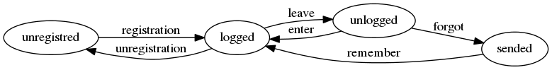

Техническое задание и спецификация на разработку АСПП
Table of Contents
- 1. Инструкция по работе с документом
- 2. Назначение и цель создания системы
- 3. Этапы, сроки, задачи
- 3.1. TODO Краткий список горящих задач bvl gmm
- 3.1.1. DONE Запустить дисплеи на 2 и 4 строки bvl
- 3.1.2. DONE Запустить принтер через USB bvl
- 3.1.3. DONE Запустить принтер через драйвер CUPS bvl
- 3.1.4. TODO Написать драйвер собственный для принтера bvl
- 3.1.5. TODO Запустить принтер через RS232 bvl
- 3.1.6. TODO Печать сгенерированного штрих-кода bvl
- 3.1.7. TODO Обмен данными Wiegand26 bvl
- 3.1.8. TODO Считывание данных EM Marine bvl
- 3.1.9. TODO Запустить сканер штрихкодов через USB bvl
- 3.1.10. TODO Написать драйвер для сканера штрих-кодов bvl
- 3.1.11. TODO Считывание штрих-кода сканером RS232 bvl
- 3.1.12. TODO Утилита добавления/удаления тарифов в web gmm
- 3.1.13. TODO Утилита добавления/удаления карт ЕМ в web gmm
- 3.1.14. TODO Воспроизведение звука bvl
- 3.1.15. TODO Видимость sip-устройства в сети bvl
- 3.2. TODO Этапы и сроки
- 3.3. Задачи общего характера
- 3.4. Задачи hardware
- 3.4.1. DONE Выбор микрокомпьютера для контроллера bda
- 3.4.2. DONE Покупка плат BeagleBone Black и Development Kit pyub
- 3.4.3. DONE Подбор редких комплектующих для платы расширения bda
- 3.4.4. DONE Дерганье ногами на BBB bvl
- 3.4.5. DONE Подбор основной части комплектующих для платы расширения bda
- 3.4.6. DONE Поиск и заказ идущих долго комплектующих noa bda
- 3.4.7. DONE Трассировка базовой платы ske
- 3.4.8. DONE Трассировка платы расширения ske
- 3.4.9. TODO Обеспечить возможность дергать ногами GPIO при отправке JSON-а bvl aav
- 3.4.10. DONE Обеспечить возможность управлять дисплеем через JSON bvl aav
- 3.4.11. TODO RTC needed (battery etc.) bvl
- 3.4.12. WAIT Макетирование прототипа bvl
- 3.5. Задачи software контроллер
- 3.5.1. TODO Описать
happy-casespyub - 3.5.2. TODO Составление исполняемой спецификации, внесение описаний работы и кейсов gmm
- 3.5.3. DONE Выделить состояния контроллера (стоек) pyub gmm
- 3.5.4. TODO Список событий контроллера (стоек) pyub
- 3.5.5. START Декларативное описание конечных автоматов gmm
- 3.5.6. DONE Написание генератора кода модели системы gmm
- 3.5.7. START Ручная верификация работы системы на модели gmm
- 3.5.8. START Расширение модели рабочим кодом gmm
- 3.5.9. TODO Автоматическая верификация работы системы gmm
- 3.5.10. TODO Тестирование рабочего кода на прототипе устройства gmm
- 3.5.11. TODO Создание UI web-интерфейса для настройки контроллера
- 3.5.1. TODO Описать
- 3.6. Задачи периферии контроллера
- 3.7. TODO Задачи сервер gmm
- 3.1. TODO Краткий список горящих задач bvl gmm
- 4. Описание функционирования
- 4.1. DONE Общий принцип работы pyub
- 4.2. TODO Парковочные места, тарифные зоны и сектора pyub
- 4.3. DONE Виды проездных документов и информация на них pyub
- 4.4. TODO Кассовые и сервисные документы pyub gmm
- 4.5. TODO Логирование сообщений pyub
- 4.6. TODO Состояния стойки при проезде pyub gmm
- 4.6.1. TODO Состояние запуска (
poweron) pyub gmm - 4.6.2. TODO Состояние тестирования (
selftest) pyub gmm aav - 4.6.3. DONE Состояние ожидания (
standby) - 4.6.4. TODO Подъезд машины к стойке (
finding) - 4.6.5. TODO Стойка в диалоговом режиме (
dialog) pyub - 4.6.6. TODO Инициация процедуры проезда (
init) pyub - 4.6.7. TODO Процедура проезда (
goon) pyub - 4.6.8. TODO Процедура завершения проезда (
fin) - 4.6.9. TODO Cостояние полной блокировки (
hardlock) - 4.6.10. WAIT Процедура частичной блокировки (
softlock) - 4.6.11. WAIT Процедура оплаты (
payment)
- 4.6.1. TODO Состояние запуска (
- 4.7. TODO Обработка сигналов с датчиков pyub
- 4.8. TODO Отмена проезда по незавершённому алгоритму pyub
- 4.9. TODO Настройки администратора из web-интерфейса контроллера pyub
- 4.9.1. TODO Настройка торгового оборудования pyub
- 4.9.2. TODO Настройки работы датчиков и реле pyub
- 4.9.3. TODO Системные настройки pyub
- 4.9.4. TODO Настройки тарификации из web-интерфейса контроллера pyub
- 4.9.5. TODO Тестирование и диагностика из web-интерфейса контроллера noa
- 4.9.6. TODO Режим тестирования опрашиваемого оборудования из UI контроллера
- 4.10. TODO Некорректные действия посетителя all
- 4.11. TODO Некорректные действия оператора pyub
- 4.12. TODO Сообщения периферийных устройств контроллеру gmm bvl
- 4.13. TODO Алгоритмы проезда pyub
- 4.14. WAIT Усложнения алгоритмов pyub
- 4.15. TODO Алгоритмы работы с автоматической кассой pyub
- 4.16. TODO Роли пользователей системы pyub
- 4.17. TODO Обработка ошибок в работе all
- 4.18. DONE Логирование сообщений pyub
- 4.19. WAIT Парковочные места, тарифные зоны и сектора pyub
- 5. Контроллер
- 5.1. Требования к контроллеру pyub noa
- 5.1.1. TODO Требования к функционалу контроллера pyub
- 5.1.2. TODO Требования к аппаратной части контроллера pyub
- 5.1.3. TODO Требования к платам расширения noa
- 5.1.4. TODO Требования по подключению внешних периферийных устройств noa
- 5.1.5. TODO Требования к программной части pyub
- 5.1.6. DONE Оценка максимального количества подключений устройств bvl noa
- 5.1.7. WAIT Требования к гибкой реализации подключения периферии bvl aav
- 5.1.8. Требования к автономной работе контроллера
- 5.2. Аппаратная часть контроллера
- 5.2.1. TODO Данные по потреблению периферии bvl noa
- 5.2.2. DONE Принципиальная схема базовой платы bvl bda
- 5.2.3. TODO Схемотехника базовой платы ske
- 5.2.4. WAIT Принципиальная схема управляющей платы bda ske
- 5.2.5. WAIT Схемотехника управляющей платы bda ske bvl
- 5.2.6. DONE Принципиальная схема кроссировочной платы bvl noa
- 5.2.7. TODO Схемотехника кроссировочной платы ske
- 5.2.8. TODO Принципальные схемы плат расширения bvl ske
- 5.2.9. TODO Схемотехника плат расширения bvl bda ske
- 5.2.10. TODO Спецификация плат для производства bvl noa bda ske
- 5.2.11. TODO Соединение плат контроллера, форм-фактор bvl ske
- 5.3. Подключаемые периферийные устройства
- 5.4. TODO Архитектура программного обеспечения aav gmm bvl
- 5.4.1. Высокоуровневая архитектура
- 5.4.2. Взаимодействие уровней
- 5.4.3. FFI
- 5.4.4. Архитектура бизнес-логики
- 5.4.5. Архитектура классов нижнего уровня
- 5.4.6. Нотификация при изменении настроек
- 5.4.7. Драйвера уровня ядра
- 5.4.8. Требования к функционалу
HardwarePresentationLayer - 5.4.9. Требования к реализации
HardwarePresentationLayer - 5.4.10. Работа с дисплеями и другими конкретными устройствами
- 5.5. TODO Алгоритм запуска программного обеспечения bvl aav
- 5.6. TODO Рабочая среда bvl
- 5.6.1. DONE Операционная система bvl
- 5.6.2. DONE Инициализация операционной системы bvl
- 5.6.3. START Конфигурация SSH сервера bvl
- 5.6.4. DONE Установка и запуск nginx bvl
- 5.6.5. START Установка и запуск PostgreSQL gmm aav
- 5.6.6. DONE Установка и запуск Boost bvl
- 5.6.7. DONE Установка и запуск git-core gmm
- 5.6.8. Установка Closure Common Lisp на bbb
- 5.6.9. Установка org-mode
- 5.6.10. Установка Slime
- 5.6.11. Установка Quicklisp
- 5.6.12. START Установка и запуск SMTP-сервера gmm
- 5.6.13. START Установка и запуск FTP-сервера gmm
- 5.6.14. START Конфигурация iptables bvl
- 5.6.15. TODO Конфигурация супервизора bvl
- 5.6.16. START Конфигурация средства бэкапирования bvl
- 5.6.17. TODO Установка и конфигурация отдельных периферийных средств bvl
- 5.7. Подготовка среды разработки ПО контроллера
- 5.8. TODO Работа с библиотеками bvl aav
- 5.9. WAIT Драйвера перифериных устройств bvl aav
- 5.10. TODO Протоколы периферии bvl aav
- 5.11. TODO Описание блока настроек портов подключения bvl aav
- 5.12. TODO Резервирование системы bvl
- 5.13. TODO Web-интерфейс для настройки контроллера pyub gmm
- 5.14. Настройка и развертывание ПО контроллера bvl
- 5.15. WAIT Оптимизация решения all
- 5.16. HOWTO Подключение подтяжек pull-up для GPIO
- 5.1. Требования к контроллеру pyub noa
- 6. Серверная часть gmm pyub
- 6.1. TODO Общие положения pyub
- 6.2. TODO Основной функционал сервера pyub gmm
- 6.3. WAIT База данных pyub gmm
- 6.4. TODO Web-интерфейс сервера pyub gmm
- 6.5. WAIT Агреггирующий сервер pyub gmm
- 6.6. TODO Дополнительные аппаратно-програмные модули pyub
- 6.6.1. TODO Модуль платной парковки pyub
- 6.6.2. TODO Модуль СКУД pyub
- 6.6.3. WAIT Модуль для работы с абонементами pyub
- 6.6.4. WAIT Модуль для работы по дебетовым картам pyub
- 6.6.5. WAIT Модуль акцептирования pyub
- 6.6.6. WAIT Модуль арендаторов pyub
- 6.6.7. TODO Модуль кассира pyub
- 6.6.8. WAIT Модуль бухгалтера pyub
- 6.6.9. WAIT Модуль фотофиксации pyub
- 6.6.10. WAIT Модуль распознания номеров pyub
- 6.6.11. TODO Модуль дуплексной IP связи pyub bvl gmm
- 6.7. WAIT Интеграция со сторонними решениями pyub
- 7. Использование алгоритмов шифрования gmm
- 8. Глоссарий
- 8.1. Датчик
- 8.2. Сигнал
- 8.3. Событие
- 8.4. Сообщение
- 8.5. Состояние
- 8.6. Процедура
- 8.7. TODO Стойка pyub
- 8.8. Периферийные устройства
- 8.9. Касса
- 8.10. Проездной документ
- 8.11. Контроллер
- 8.12. Системы навигациии
- 8.13. TODO Сервер pyub
- 8.14. Время
- 8.15. Группы
- 8.16. Парковка
- 8.17. TODO Посетитель pyub
- 8.18. TODO Деление парковкочных мест pyub
- 8.19. TODO Тариф pyub
- 8.20. TODO Роли pyub
- 8.21. TODO Внешний носитель pyub
- 8.22. TODO УДПА pyub
- 8.23. TODO Процесс pyub
- 8.24. TODO Рампа pyub
- 8.25. TODO Шлюз pyub
- 8.26. TODO Реверсивный проезд pyub
- 8.27. DONE Глоссарий архитектуры man
- 9. Данные по первому поколению системы
- 10. Сущности
- 11. Тесты
- 12. Модули
- 13. Сборка
- 14. Оптимизация аппаратной части решения
1 Инструкция по работе с документом
1.1 Теги
Итак, каждом заголовку можно поставить теги. Это делается с помощью комбинации
C-c C-q, которая вызывает функцию (org-set-tags-command)
Теги пишутся в правой колонке, которой управляет переменная org-tags-column, у меня, по умолчанию, она равна 77.
Если ввести C-u C-c C-q все теги в документе будут выровнены (по возможности) по
этой колонке.
Теги автоматически перестраиваются после изменения порядка столбцов, двигания разделов и присвоения меток TODO, START и других. Кроме того, теги не нарушают поиск ссылок на разделы, в отличии от наших вставок TODO:bvl в раздел, после чего все ссылки на этот раздел "ломаются".
Можно ставить несколько тегов на один раздел например так: :pyub:bvl:
Чтобы быстро найти все разделы с каким либо тегом нужно нажать C-c / m или, еще
проще - C-c \, что вызывает функцию (org-match-sparse-tree), которая прямо в
текущем файле подсветит вам разделы, которые имеют этот тег.
Однако иногда удобнее получить список всех этих разделов и дальше ходить по нему. Для
этого существует мега-полезная комбинация C-c a < m, которая из текущего буфера (или
даже из его выделенной области) сформирует список разделов, имеющих теги, которые вы
укажете и выведет в отдельный буфер, который покажет вам. Этот буфер можно будет
обновлять прямо в нем, нажимая C-u r о чем собственно и будет написано у него
наверху. И внутри этого буфера можно будет бродить по всем интересующим разделам,
который будут открываться в вашем исходном буфере.
1.2 Правила оформления
Всегда, если вы написали какой-то кусок текста или отвечаете за данную задачу, или поставили кому-то задачу куском текста, ставьте тег в заголовок раздела. Это в последствии упрощает поиск человека, отвественного за задачу, который может дать развёрнутый комментарий к ней.
Именные:
:pyub - Пирогов Юрий (Санти)
:unrimah -> :bvl - Богданов Владимир (Унримах)
:rigidus -> :gmm - Глухов Михаил (Ригидус)
:ranma -> :aav - Алешкин Алексей (Ранма)
:noa - Нилов Олег
:bda - Булашевич Дмитрий (Корвиноль)
:ske - Степанов Кирилл (Эльтар)
:all - всем
:noname - не определено
:man - информация, не важная для данного документа в целом и для конечной документации, но важная для кого-то в плане понимания или прихода к решению
В одном разделе может быть несколько ответственных.
[TODO:pyub] Прошерстить
Описание состояний, в которых может находиться раздел: TODO - задача поставлена и ждёт исполнения START - задача исполняется, но еще не закончена DONE - задача завершена и об этом написано WAIT - задача описана, но на данный момент не активна
ничего не сделано
Общаясь в документе не забывайте выставлять COMMENT: - временный комментарий дан одним из учатников проекта
Если вы написали какой-то текст в разделе, где вы помечены как ответственный автор и хотите, чтобы кто-то другой прочёл этот текст и верифицировал, используйте VRFY: - задача человеку проверить, прочитать, по факту прочтения оставляются коммент, правки и т.п., а тег убирается
1.3 Подсветка inline todo elements
Для того чтобы удобно работать с подсветкой инлайновых (вне заголовков) TODO и VRFY добавьте в ваш ~/.emacs.d/init.el следующие строчки:
;; ORG-MODE TODO|VRFY font-lock-faces (font-lock-add-keywords 'org-mode '(("\\(\\[TODO:[a-z]\\{3,\\}\\]\\)" . 'font-lock-warning-face) ("\\(\\[COMMENT:[a-z]\\{3,\\}\\]\\)" . 'font-lock-keyword-face) ("\\(\\[VRFY:[a-z]\\{3,\\}\\]\\)" . 'font-lock-function-name-face) ))
1.4 Водки найду
Когда необходимо получить сводную информацию по своим TODO и VRFY элементам, можно
воспользоваться функцией what-can-i-do, изменив (при необходимости) идентификатор
в pattern и добавив ее в свой init.el.
В этом коде (последняя строчка) эта функция биндится на комбинацию клавишь
C-c m. Вы можете повесить ее на другую комбинацию клавишь.
(defun what-can-i-do (arg) (interactive "sName: ") (let ((pattern (format "\\(\\[\\(TODO\\|VRFY\\):%s\\]\\)" arg)) ;; "\\(\\[TODO:.\\{3,\\}\\]\\)" (curbuff (current-buffer)) (newbuff (generate-new-buffer "*what-can-i-do*"))) (save-excursion (goto-char (point-min)) (let ((cnt 0)) (with-output-to-temp-buffer newbuff (while (re-search-forward pattern nil t) (incf cnt) (let ((buff curbuff) (point (point)) (line (line-number-at-pos)) (contents (thing-at-point 'line))) (with-current-buffer newbuff (insert-text-button (format "%d:" line) 'buff buff 'point point 'action (lambda (x) (let* ((pos (posn-point (event-end x))) (buff (get-text-property pos 'buff)) (point (get-text-property pos 'point))) (with-current-buffer buff (goto-char point)) (switch-to-buffer buff)))) (princ contents)))) (goto-char (point-max)) (princ (format "\nDone. %s finded." cnt)) ))))) (global-set-key (kbd "C-c m") 'what-can-i-do)
2 Назначение и цель создания системы
Целью проводимых работ является создание спецификации, разработка, отладка и
доведение до серийного производства аппаратно-программного комплекса
Автоматизированной Системы Платной Парковки (АСПП) - решения, предназанченного для
оснащения парковок и дорожной инфраструктуры.
2.1 Функции АСПП
Основной функцией разрабатываемой системы явяется автоматизация следующих процессов:
- контроль доступа посетителей к парковочному пространству;
- монетизация этой услуги;
- сбор статистических данных;
- управление навигацией по территории парковки.
2.2 Сферы применения АСПП
Разрабатываемая система может применяться в следующих сферах:
- плоскостные платные парковки;
- многоэтажные платные парковки с навигацией;
- парковки и территории, требующие автомобильной СКУД;
- уличные паркоматы;
- терминалы контрольных пунктов платных дорог;
- системы распределения траффика автомобилей на транспортных терминалах.
2.3 Основные компоненты
Объекты разработки:
Контроллер- комплексное аппаратно-программное решение, состоящее из:- нескольких физически разделяемых
печатных плат программного обеспечениядля них.
- нескольких физически разделяемых
Серверное ПО- ПО, агреггирующее данные с контроллеров и управляющее парковкой в целом.
Контроллер устанавливается непосредственно в проездные стойки и кассовые терминалы
и управляет всем периферийным оборудованием - как встроенным (приём и выдача билетов
и денег), так и внешним (открытие и закрытие шлагбаума, светофоры, датчики).
Серверное ПО устанавливается на обычный персональный или серверный компьютер в
защищённом месте, соединяется с контроллерами и другими узлами АСПП с помощью
Ethernet (они могут находиться в разных подсетях и находится далеко друг от друга) и
отвечает за сбор данных о событиях и ошибках со всех подключённых в сеть устройств
АСПП. Через серверное ПО конфигурируются все настройки работы оборудования и
бизнес-логики (управление правами доступа, тарифами и.т.п), программных моделй АСПП
и осуществляется управление шлагбаумами и системой навигации.
2.3.1 Печатные платы контроллера
Управляющая плата - печатная плата, представляющая из себя одноплатный
микрокомпьютер на базе микропроцессора архитектуры ARM Cortex-А7/A8/A9.
Допускается:
- использование готовых решений одноплатных микрокомпьютеров
- варианты микропроцессоров с аналогичными характеристиками
- рассмотрение вариантов микропроцессоров отечественной разработки
Базовая плата - печатная плата, реализующая базовый необходимый функционал связи
управляющей платы с периферийными устройствами стойки и другими элементами
автоматической парковки. К ней подключается управляющая плата и, при необходимости,
платы расширения и кроссировочная плата.
Плата расширения - печатная плата, реализующая дополнительный любой специфический
функционал связи с периферийными устройствами и другим оборудованием автоматической
парковки, а также интеграции с любыми другими системами. Возможна разработка нескольких
плат расширений с различным функционалом.
Кроссировочная плата - печатная плата, подключаемая к базовой плате с помощью
широкополосного шлейфа и предназначенная для простого подключения к контроллеру
внешних периферийных устройств с помощью унифицированного разъёма 8P8C (RJ-45).
2.3.2 Программное обеспечение контроллера
Программное обеспечение контроллера - операционная система на базе ядра Linux и
развёрнутое на ней сервисное программное обеспечение, оснащённое web-интерфейсом
для настройки и конфигурирования, отвечающее за работу периферийных устройств,
логику работы контроллера и интерфейс для посетителей парковки.
Пользовательский web-интерфейс контроллера - web-интерфейс для конфигурирования и
настройки работы контроллера администратором, инженером пуско-наладки или
разработчиком.
Клиентский интерфейс стойки - управляемый контроллером интерфейс, обеспечивающий
диалог пароковчной стойки и клиента парковки. Различен для разных стоек и
реализаций, может быть как полностью аппаратным, так и программным, выводимым на
сенсорный дисплей.
2.3.3 Компьютеры управления
Центральный сервер - это компьютер на архитектуре x86-x64 на котором развёрнута
программа управления парковкой и хранится база данных со всеми настройками системы
и пользователей, а также история событий.
Автоматизированная ручная касса - это компьютер к которому подключено
периферийное торговое оборудование, и с помощью которого оператор-кассир парковки
получает доступ к интерфейсу оплаты услуг.
2.3.4 Программное обеспечение сервера
Серверное ПО - это программа управления парковкой, через которую осуществляется
настройка всех основных модулей системы и управление парковочной
системой. Серверное ПО имеет ядро, СУБД, web-интерфейс и, как и все компоненты
комплекса, работает с программной лицензионной защитой комплекса.
Пользовательский интерфейс сервера - web-интерфейс модуля сервера, к которому
получают доступ операторы, администраторы, бухгалтеры и арендаторы системы. С
помощью него осуществляется управление и конфигурация АСПП и её отдельных модулей.
2.3.5 Клиентские программы
Клиентская программа - отдельно устанавливаемое на ПК (рабочую станцию)
программное обеспечение, настраиваемое на взаимодействие с сервером, которое
использует конечный пользователь системы.
2.4 Гибкость и масштабируемость
Юрий: По существу в данном разделе у нас постановка задачи в формате "хочется чтобы было вот так", а не её решение и обоснование почему это можно, а это нельзя. Чтобы потом не было вопросов "а где об этом говорилось?". По факту я развернул идею и расписал что к чему и для чего.
Создавая систему необходимо заложить масштабируемость решения и широкий спектр применения как управляющей платы контроллера, так и контроллера в целом в других проектах.
Основная задача концепции гибкости и мастштабируемости - разработать систему так, чтобы максимальное число задач решалось в рамках одной ветки версий программного обеспечения и для уникальных задач не приходилось бы создавать уникальные ветки, а была бы возможность решать их подключая и отключая модули, как программные (библиотеки), так и аппаратные (платы расширения).
Модули программного обеспечения должны сохранять обратную совместимость друг с другом (сервер с версиями ПО контроллера). ПО контроллера новой версии должно сохранять возможность работы с оборудованием, работающим в предыдущих версиях.
Все печатные платы должны иметь унифицированные разъёмы подключений для различных типов устройств и дополнительных плат с описанной в документации спецификацией. При этом на эти разъёмы должен быть выведен весь заложенный функционал, даже тот, который мы не используем в непосредственно текущем решении. Платы расширения должны решать максимальный спектр задач, не требуя при этом вмешательства в схемотехнику и конструкцию управляющей и базовой плат.
Например, в определённый момент возникнет необходимость увеличить количество реле или COM-портов на контроллере. Данный вопрос должен в большинстве случаев решаться платами расширения, но в единичных случаях может потребоваться переразводка базовой платы. В случае возникновения таких аппаратных решений на них должно штатно работать старое ПО (при этом новый функционал будет не доступен для ПО), а на старых контроллерах работать новое ПО (при этом ПО будет определять отсутсвие аппаратных возможностей).
Система должна иметь возможжность интеграции сторонними системами СКУД, пожаротушения, оповещения, видеонаблюдения и распознания номеров а/м, а также со сторонними системами биллинга и оплаты. Часть этих задач может решаться в на аппаратном уровне (резервирование реле и сенсоров, специальные платы расширения, RS-485), часть исключительно на программном уровне, что требует создания полноценного API. г На базе решения, кроме нескольки вариантов АСПП для плоскостных парковок, различающихся по целевому ценовому сегменту, планируется разработать паркоматы и систему автоматизации оплаты и проезда для платных дорог, работающие с другим периферийным оборудованием и другой бизнес-логикой (программными модулями).
Ещё одной задачей масштабирования является сведение несколько парковок в кластер. Локальные парковочные сервера должны по Ethernet соединяться с едиынм агреггирующим сервером (соединение - "звезда"), что позволит сделать их управляемыми из единого центра.
3 Этапы, сроки, задачи
Список текущих задач. По факту завершения задачи обязательно закрывать её в статус DONE, писать сопроводительную записку и переносить весь подраздел задачи с описанием в соотвествующий данной задаче раздел документации.
3.1 TODO Краткий список горящих задач bvl gmm
3.1.1 DONE Запустить дисплеи на 2 и 4 строки bvl
3.1.2 DONE Запустить принтер через USB bvl
3.1.3 DONE Запустить принтер через драйвер CUPS bvl
3.1.4 TODO Написать драйвер собственный для принтера bvl
3.1.5 TODO Запустить принтер через RS232 bvl
3.1.6 TODO Печать сгенерированного штрих-кода bvl
3.1.7 TODO Обмен данными Wiegand26 bvl
3.1.8 TODO Считывание данных EM Marine bvl
3.1.9 TODO Запустить сканер штрихкодов через USB bvl
3.1.10 TODO Написать драйвер для сканера штрих-кодов bvl
3.1.11 TODO Считывание штрих-кода сканером RS232 bvl
3.1.12 TODO Утилита добавления/удаления тарифов в web gmm
[COMMENT:gmm] Мне надо больше данных о том как это сделать
3.1.13 TODO Утилита добавления/удаления карт ЕМ в web gmm
[COMMENT:gmm] Мне надо больше данных о том как это сделать
3.1.14 TODO Воспроизведение звука bvl
3.1.15 TODO Видимость sip-устройства в сети bvl
3.2 TODO Этапы и сроки
3.2.1 TODO Пилотный функционал (до 1 марта 2016)
- Рабочий вьезд/выезд по билетам и картам СКУД
[VRFY:gmm] Проверить достаточны ли описания, запросить если нет.
В рамках пилотного проекта нам необходимо реализовать следующий комплект оборудования стойки: Въезная / выездная стойка с выдачей бумажного билета, СКУД и IP-связью
Должно функционировать следующее периферийное оборудование: Дисплей символьный 2 строки Термопринтер Custom VKP80 II ККМ ИСКАР ПРИМ-21К на базе принтера Custom VKP80 II Широкополосный сканер штрихкодов Honywell IS3480 QuantumE Считыватель RFID Matrix EH Вввод / вывод воспроизведения аудио
Должны быть произведены: 4 единицы прототипов базовых плат 4 единицы плат управления
Для стойки должны работать следующие базовые алгоритмы работы парковки: Алгоритм простого въезда по чеку
barcodeenterАлгоритм простого выезда по чекуbarcodeleaveАлгоритм проезда по карте СКУДДля реализации процедуры оплаты должен быть реализован: Алгоритм оплаты с помощью кассы на базе ПК
Для стоек въезда и выезда должен быть реализован базовый UI [TODO:pyub] Битая Настройки администратора из web-интерфейса контроллера
- TODO Базовый интерфейс сервера gmm pyub
В рамках пилотного проекта должен быть базовый UI сервера: Web-интерфейс сервера Необходимо сделать возможность удалённого управления шлагбаумами для оператора, просмотра логов событий и конфигурирования стоек для адмиинистратора, модуль СКУД, модуль настройки и рассылки тарифов на стойки и модуль кассира для приёма оплаты за услуги парковки.
- TODO Система СКУД Em-Marine pyub
Необходимо реализовать работу карты СКУД стандарта EM-Marine в составе:
- функционирующего алгоритма проезда по картам СКУД;
- реализованногов UI сервера модуля СКУД для внесения карт доступа в систему и управления ими.
- TODO Ручная касса на базе ПК
Необходимо реализовать Модуль кассира для возможности приёма оплаты за услуги парковки. Кассир, с помощью UI на своём персональном компьютере, должен считывать информацию со штрих-кода билета (сканером, подключённым к ПК по USB), самостоятельно принимать оплату, после чего система должны печатать кассовый чек (на фискальном регистраторе, подключённом к ПК по USB или COM RS-232).
В качестве сканера предлагается использовать любой
ручной сканер Honeywell/Metrologic EclipseВ качестве фискального регистратора использвать
Штрих-Light-ФР-К (100)илиИскра ПРИМ-08ТК.Для считывания карт EM-Marine используется настольный считыватель
IronLogic Z-2 USB. - TODO Логирование на сервере pyub
Описано в Логирование сообщений
- TODO Аудиосвязь стоек и сервера pyub
3.2.2 TODO Функционал второго этапа (с 1 марта 2016)
- Автоматизированная касса купюры + монеты (до 1-15 апреля 2016)
- Собственная разводка платы упралвения (до 1 мая 2016)
- Работа кассы с банк-терминалами (до 1 июня 2016)
- Работа с видеокамерами по событиям (до 1 июня 2016)
- Автоматизация продажи абонементов и дебетовых карт на кассе (до 1 июля 2016)
- Гибкие системы тарификации (до 1 июля 2016)
- Распределение машин по местам на парковке (до 1 июля 2016)
3.2.3 WAIT Функционал третьего этапа (с 1 авгутса 2016)
3.3 Задачи общего характера
3.3.1 START Описание алгоритмов взаимодействия постетителя и АСПП pyub
3.3.2 WAIT Отладка и интеграционное тестирование aav
3.3.3 WAIT Проверка элементов системы на макете прототипа all
3.4 Задачи hardware
3.4.1 DONE Выбор микрокомпьютера для контроллера bda
Для прототипирования выбран микрокомпьютер: EMBEST BeagleBone Black Rev C
Информация о микрокомпьютере: http://beagleboard.org/support/bone101
Данный микрокомпьюетр использует микропоцессор ARM TI AM3358 с архитектурой
ARM hard float. Информация о микропроцессоре: http://www.ti.com/product/AM3359
Основной проблемой при использовании непосредственно данного решения является
требование разработчика к лицензированию Creative Commons с условиями
Attribution-ShareAlike (CC BY-SA). Эта лицензия позволяет другим редактировать,
поправлять и брать за основу произведение даже в коммерческих целях до тех пор
пока они указывают ваше авторство и лицензируют свои новые творения на идентичных
условиях. Эта лицензия часто сравнивается с «копилефтными» свободными и «open
source»-лицензиями на программное обеспечение. Все новые произведения основанные на
ваших будут распространяться по той же лицензии, так любые производные произведения
будут также разрешать коммерческое использование.
Прочесть об условиях лицензии можно здесь: https://ru.wikipedia.org/wiki/%D0%9B%D0%B8%D1%86%D0%B5%D0%BD%D0%B7%D0%B8%D0%B8_%D0%B8_%D0%B8%D0%BD%D1%81%D1%82%D1%80%D1%83%D0%BC%D0%B5%D0%BD%D1%82%D1%8B_Creative_Commons http://creativecommons.ru/licenses
В качестве варианта рассматривается использование функционального аналога BBB -
де-факто промышленной копии BBB Mentorel uSomIQ AM335x с платой uSomIQ BoneCape
не попадающей под условия лицензии CC BY-SA.
Прочесть о нём: http://www.mentorel.ru/promyshlennyj-modul-na-zamenu-beaglebone-black/ http://www.mentorel.ru/product/usomiq-bonecape/
В дальнейшем предполагается собственное проектирование и разводка управляющей платы
на базе процессора ARM TI AM335x, оптимизированное и адаптирования под требования
к контроллеру АСПП.
Все существующие требования по оптимищации собраны в разделе: Оптимизация аппаратной части решения
3.4.2 DONE Покупка плат BeagleBone Black и Development Kit pyub
3.4.3 DONE Подбор редких комплектующих для платы расширения bda
Сформирован список: https://octopart.com/bom-lookup/g1agjT7N/75pqkJDrUqGv7qrq
3.4.4 DONE Дерганье ногами на BBB bvl
3.4.5 DONE Подбор основной части комплектующих для платы расширения bda
3.4.6 DONE Поиск и заказ идущих долго комплектующих noa bda
Необходимо по спискам из задач подбора комплектующих найти поставщиков в России через данный ресурс: http://passport.efind.ru/org/ Далее, сделать заказ по списку.
3.4.7 DONE Трассировка базовой платы ske
3.4.8 DONE Трассировка платы расширения ske
3.4.9 TODO Обеспечить возможность дергать ногами GPIO при отправке JSON-а bvl aav
3.4.10 DONE Обеспечить возможность управлять дисплеем через JSON bvl aav
3.4.11 TODO RTC needed (battery etc.) bvl
3.4.12 WAIT Макетирование прототипа bvl
3.5 Задачи software контроллер
Описание конечно-автоматной работы системы и ее верификации.
3.5.1 TODO Описать happy-cases pyub
3.5.2 TODO Составление исполняемой спецификации, внесение описаний работы и кейсов gmm
3.5.3 DONE Выделить состояния контроллера (стоек) pyub gmm
3.5.4 TODO Список событий контроллера (стоек) pyub
3.5.5 START Декларативное описание конечных автоматов gmm
3.5.6 DONE Написание генератора кода модели системы gmm
3.5.7 START Ручная верификация работы системы на модели gmm
3.5.8 START Расширение модели рабочим кодом gmm
3.5.9 TODO Автоматическая верификация работы системы gmm
3.5.10 TODO Тестирование рабочего кода на прототипе устройства gmm
3.5.11 TODO Создание UI web-интерфейса для настройки контроллера
3.6 Задачи периферии контроллера
3.6.1 TODO Создание списка периферии и сведение документации по ней pyub
3.7 TODO Задачи сервер gmm
3.7.1 WAIT Разработка структуры БД
3.7.2 WAIT Разработка софтверной части для сервера
3.7.3 WAIT Разработка интерфейса сервера
4 Описание функционирования
4.1 DONE Общий принцип работы pyub
Посетителль на автомобиле въезжает в зону действия датчика присутствия автомобиля, нажимает на кнопку и получает въездной документ, которым может являться либо бумажный въездной билет со штрихкодом, либо пластиковую карту RFID Mifare+.
Одноразовый въездной документ ему выдаётся термопринтером в случае бумажных билетов или диспенсером карт совмещённым со считывателем RFID в случае карт Mifare+.
После того как пользователь забирает документ, открывается шлагбаум. Взятие документа пользователем мы ослеживаем общаясь с выдающим его устройством, если это возможно.
Для постоянных посетителей парковки и арендаторов предусмотрены карты многоразового использования - это RFID Em-Marine, Mifare+ или SDRC. Таки пропуска просто прикладываются к сканеру на стойке (или сканируются на расстоянии) и система определяет - возможен въезд посетителя на парковку или нет. Если возможен - открывает шлагбаум.
Во время проезда машины под стрелой шлагбаума его закрытие невозможно - наличие автомобиля фиксируется фотоэлементом на линии стрелы и датчиком за ней. Фотоэлемент отключаем настройкой "включить проверку фотоэлемента безопасности".
По факту проезда шлагбаум закрывается. После въезда начинается допустимое бесплатное время нахождения на парковке.
Также имеется возможность попасть на парковку по бесконтактным картам доступа RFID Em-Marine, которые заранее программируются и выдаются клиентам (система СКУД для постоянных клиентов и владельцев).
Далее посетитель парковки должен произвести оплату парковочного времени. Это возможно сделать тремя осовными способами:
- оплатить на автоматической кассе
- оплатить на ручной кассе (ПК на котором оператор в программе принимает оплату)
- акцептировать билет у одного из арендаторов (сбросить время или перевести его на счёт арендатора)
В рамках пилотного проекта мы делаем только оплату на ручной кассе, где кассир сообщает системе о проведенной оплате через броузер.
В любом случае информация с билета считывается с помощью сканера штрих кодов (для карт Mifare будет использоваться считыватель-программатор), либо на ПК вводом буквенно-цифрового кода с билета. При считывании посетителю сообщается сумма оплаты, которую он должен внести. По факту приёма оплаты печатается кассовый чек, он же выездной билет, а въездной билет аннулируется. Кроме оплаты билет может быть акцептирован арендатором с помощью специальной карты или акцептирован на ПК.
Стоимость парковки может варьироваться в зависимости от времени пребывания на ней, тарифной сетки (разные тарифы в разное время суток и дни недели) и тарифных зон (на одной парковке может быть несколько секторов, в каждом из которых парковка оплачивается по разному, между ними стоят проездные стойки).
После оплаты устанавливается допустимое время нахождения на парковке до выезда. Если посетитель находится больше времени, чем было установлено администратором парковки, ему необходимо снова оплачивать время. Бесплатное время настраивается со всеми тарифами в web-интерфейсе контроллера или сервера.
На выезде посетитель парковки при попадании автомобиля в зону действия датчика присутствия подносит свой билет к сканеру штрих кодов и, если допустимое время нахождения на парковке не истекло, ему позволяется покинуть парковку (в случае Mifare карт карта вставляется в приемник и он её заглатывает). Также выхеать можно по EM Marine карте.
4.2 TODO Парковочные места, тарифные зоны и сектора pyub
4.2.1 TODO Тарифная зона pyub
Необходимо реализовать гибкую систему тарифов, при этом постаравшись максимально сохранить автномность системы в случае падения связи с сервером.
Основные единые настройки бесплатного времени:
- бесплатное время после въезда (мин)
- бесплатное время на выезд после оплаты (мин)
Эти характеристики должны быть индивидуальны для разных секторов парковки. Т.е., например, в секторе открытого паркинга одни тарифы, а в секторе закрытого - другие. Между секторами стоит проездная стойка со сканером штрих кодов (для Mifare парковки это сделать проще в автономном режиме). При поднесении она переносит на сервере и всех соседних стойках билет в другой сектор. При этом если машина отстояла t1 времени в одном секторе, а потом поехала в другой, то данные по оплате суммируется, а бесплатное время во втором секторе не считается.
Основые вещи:
- Со скольки до скольки работает парковка (осуществляется впуск и выпуск) Допустимо по картам СКУД пускать например круглосуточно, а по чекам - только днем
- Бесплатное время - время, которое машина может стоять на парковке до требования оплаты. В течении его она может выехать бесплатно.
- Время на выезд - время за которое машина может покинуть парковку после оплаты водителем в кассе. Если не успел - время на выезд не учитывается.
- Штраф - сумма, которая взимается с человека, если он потерял вьездной документ.
- Стоимость часов исходя из того, что имеются следующие основыне тарифные характеристики:
- стоимость 1го..2го..23го..24го.. часа после истечения бесплатного времени
- коэффициент стоймости в зависимости от времени суток (с 20:00 до 22:00 k=2, с 9:00 до 18:00 k=0,5)
- коэффицикнт стоймости в зависимости от дня недели (пн, вт, ср, чт, пт k2=1, сб,вс k2=2)
4.2.2 TODO Сектор парковки pyub
Секторальность - например есть крытая и открытая система парковки, между ними стойка. Если пользователь на ночь хочет на закрытую парковку - там другой тариф, все это надо считать, суммируя. В пилотном проекте не делаем, но учитывать нужно при программировании системы тарифов.
4.2.3 TODO Распределение паркомест pyub
[TODO:pyub] Здесь должен быть алгоритм распределения машин на конкретные паркоместа на въезде на парковку по ТЗ аналогичному ЛенСпецСМУ.
4.3 DONE Виды проездных документов и информация на них pyub
АСПП может работать с различными типами проездных документов - одноразовыми бумажными билетами (печать на термобумаге) и многоразовыми RFID-метками (как правило - пластиковыми картами) различных стандартов.
4.3.1 DONE Бумажный въездной билет со штрихкодом pyub
[VRFY:noa:aav:bvl] Всё это было обсуждено на большом субботнем совещании и дополнительно с Олегом. Прошу проверить и задать вопросы, если что-то не понятно.
Въездной билет печатается при въезде посетителя на парковку на термочувствительной бумаге. Посетитель забирает его и хранить в течении всего времени пребывания на парковке. Этот документ является одноразовым, т.е. по нему человек только один раз выехать или оплатить услуги парковки.
Для печати билетов использоваться рулоны бумаги шириной 57 мм или 80 мм, в зависисмости от термопринтера. На бумагу шириной 44 мм мы не рассчитываем. Таким образом, вся информация, размещаяемая на билете, должна умещатться в столбец шириной 54 мм. Возможно сделать масштабируемость размера шрифта текста в зависимости от настроек бумаги, выставленных программно, но это в перспективе.
На въездном билете всегда печатается следующая информация:
- данные о въезеде открытым читаемым текстом
- данные о въезде зашифрованные в машинночитаемый штрихкод
При наличии соответсвующей настройки также может печататься:
- блок вносимой через UI настройки текстовой информации
- монохромное графическое изображение, загружаемое через UI настройки
Открытым текстом должны быть напечатаны:
- уникальный номер (ID) билета в системе
- дата и время въезда
- массогабаритные характеристики ТС посетителя (например: легковой или грузовой)
- номер стойки через которую был совершен въезд
- номер сектора к которому относится въездная стойка
- номер назначенного посетителю места из вирутального диапазона мест
Опционально номер места должен печататься крупно (возможно - изображением) для
систем, подразумевающих направление машин на номерные места или интеграцию с
системами контроля мест и навигации. Формат вывода управляется флаагом в настройках
печати билета. Если алгоритм направления машин на номерные места активирован,
должно также печататься название / номер сектора назначения (например, этаж
2). Эта опция управляется флагом в настройках секторов и мест парковки.
Опционально - время работы сектора парковки автоматически забираемое из
настроек. Опция управляется флагом в настройках печати билета.
Опционально - автоматически генерируемые данные о тарифе в текущей зоне. Опция
управляется флаагом в настройках печати билета.
Опционально, при наличии модуля распознания государственных знаков (номеров) транспортных средств, на чеке печатается номер автомобиля, определённый на въезде.
Пример текста на билете:
=======================
ДОБРО ПОЖАЛОВАТЬ!
=======================
ID 000000001
Въезд: 12:00 01.01.2016
Тип т/с: легковой
Гос. знак: А0000АА 78RUS
Стойка 1, сектор 1
=======================
проследуйте на место
МЕСТО 0201
в секторе 2
=======================
Выезд 1 работает:
с 09:00 до 22:00
Выезд 2 работает:
круглосуточно
В тарифной зоне 1:
20 минут - бесплатно
1 час - 100 руб.
более 3 часов - 50 руб.
В тарифной зоне 2:
1 час - 100 руб.
после 22:00 - 200 руб.
=======================
Телефон для справок:
8(812)000-00-00
Штрихкод должен быть зашифрован, чтобы избежать попыток подстановки данных со
стороны посетителя. Также на каждой парковке должен использоваться уникальный ключ
шифрования, выставляемый в системе, во избежании использования одних и тех же
билетов на разных парковках.
В штрикоде зашифрована следующая информация:
- номер стойки через которую был совершен въезд
- номер сектора к которому относится въездная стойка
- номер места из вирутального диапазона мест, приписанных к сектору
- дата и время вьезда
- массогабаритные характеристики ТС посетителя (например: 0 = легковой, 1 = средний, 2 = грузовик)
[COMMENT:pyub] Общая оценка используемых бит данных:
- № стойки - 8 байт, 2 символа
- № сектора - 8 байт, 2 символа
- № места - 16 байт, 4 символа
- дата, время - 32 байта, unix-time
- тип ТС - 2 байта, 1 символ
Переоценка:
- # стойки: 7 бит (0 - 127)
- # сектора: 6 бит (0 - 63)
- # места: 16 бит (0 - 65535)
- Дата/время: 32 бита (до 19.01.2038)
- тип ТС: 3 бита (0 - 7)
ИТОГО 64 бита = 8 байт
Шифрование проводим над получившейся группой 8 байт, на выходе получаем столько же байт, передаем на нижний уровень.
На нижнем уровне:
Представляем это как массив битов длиной 64, разбиваем на группы по 6 (11 групп),
каждую группу методом "+0х30" переводим в соответствие символам 0х30-0х6F ASCII.
Из строки этих символов генерируем штрих-код по стандарту Code 128-C.
При считывании штрихкода операции проводятся в обратном порядке, на верхний уровень отдаются 8 байт без расшифровки.
Предлагаемые стандарты шифрования штрихкода:
Code 128 или EAN-128
Шифрование и дешифрование данных осуществляется на уровне бизнес-логики. Ключ шифрования для каждой парковки уникальный, предполагается, что он может быть зашит в файл лицензии, подробнее о котором можно прочесть в разделе: Программная лицензионная защита комплекса
Нижний уровень системы получает от бизнес-логики уже зашифрованные данные и архивирует их, после чего получившийся архив преобразует в штрихкод. Предполагается, что буквенно-цифровое представление штрихкода - это и есть уникальный ID билета в системе, которым мы оперируем. После въезда автомобиля он рассылается всем стойкам и серверу и далее, в процессе движения посетителя по парковке, мы персонализируем его действия с оборудованием именно по ID его билета.
Возможно сопоставление уникального ID билета некому виртуальному четрёхзачному или шестизначному номеру билета (из сквозного списка 1 - 9999) на сервере системы для интеграции со сторонними системами.
Документация по принтер находится тут: devices/barcodethermalprinter
4.3.2 DONE Бумажный выездной билет / кассовый чек со штрих-кодом
Выездной билет печатается автоматической кассой или кассой на базе ПК после оплаты посетителем услуг парковки и является как правило одновременно кассовым чеком - документом, прошедшим через дополнительный модуль принтера, поставленный на учёт в налоговой и имеющйи ЭКЛЗ, и несущим на себе фискальный признак. Нефискльный чек по факту опалты может печататься в случаях, если оборудование эксплуатируется ИП или вне пределов РФ, где другие законы. Тогда мы ставим в кассу не фискальный регистратор, а обычный принтер и печатаем выездные чеки на нём.
В России на кассовых чеках печатается признак фискального режима - буквы Ф, ФП или ПФП. Также для верификации кассовых чеков используется КПК - криптографический проверочный код, он печатается в конце кассового чека и позволяет проверить кассовый чек на подлинность.
Также выездной билет / кассовый чек печатается при оплате штрафа за утерю въездного билета по установленному тарифу.
Для печати выездного билета / кассового чека используется такая же бумага, как и для печати въездного билета.
На въездном билете всегда печатается следующая информация:
- данные о том, за какие услуги и сколько заплатил человек открытым читаемым текстом
- данные, которые необходимо печатать на кассовом чеке по закону РФ
- данные о факте и времени оплаты зашифрованные в машинночитаемый штрихкод
При наличии соответсвующей настройки также может печататься:
- блок вносимой через UI настройки текстовой информации
- монохромное графическое изображение, загружаемое через UI настройки
Открытым текстом должны быть напечатаны:
- уникальный номер (ID) билета в системе
- дата и время въезда на парковку / оплата штрафа
- номер кассы на которой была совершена оплата
- время на выезд с парковки после оплаты
Открытым текстом должны быть напечатаны кассовые данные (они же передаются в ФР и записываются на ЭКЛЗ). Формат этих данных определяется законодательством РФ и протоколом обмена данными с конкретной моделью фискального регистратора. В них должны быть:
- организационно-правовая форма и наименование продавца
- ИНН продавца
- фактический адрес размещения ККМ
- номер ККМ в налоговых органах
- СПНД - сквозной порядковый номер документа в памяти ККМ
- номер кассовой смены
- информация о кассире
- дата и время операции по оплате услуг
- перечень товаров и услуг, купленных покупателем
- итоговая сумма
- скидки и бонусы
- фискальный признак
- криптографический проверочный код
- тип оплаты (наличные / карта)
[TODO:pyub:gmm] Разобраться что там вообще должно быть и как.
Под фискальной и польщовательской информацией должен печататься штрихкод по которому посетитель сможет выехать, зашифрованный аналогично штрихкоду на въездном билете.
В штрикоде зашифрована следующая информация:
- номер кассы через которую была совершена оплата
- дата и время оплаты
Предлагаемые стандарты шифрования штрихкода:
Code 128 или EAN-128
4.3.3 TODO RFID Em-Marine pyub
Форм-фактор карты: 86х54 мм Тип карты: Em-Marine 125 кГц
Также возможно использование любых Em-Marine совместимых меток, брелков, и т.п., но не в варианте работы с картоглотателями.
devices/wiegand26 - описание протокола devices/rfidmatrixeh - документация по считывателю Em-Marine Iron Logic Matrix EH devices/rfidmatrixv - документация по считывателю Em-Marine Iron Logic Matrix V
4.3.4 WAIT RFID Mifare+ pyub
Форм-фактор карты: Тип карты:
devices/wiegand26 - описание протокола devices/rfidmatrixmf - описание устрйоств на Mifare+ devices/rfidcardissuince- описание устройства для выдачи карт devices/rfidcardcollector- описание устройства для приёма карт devices/rfidcardrecycler - описание устройства для выдачи и приёма карт
4.3.5 WAIT RFID DSRC pyub
4.4 TODO Кассовые и сервисные документы pyub gmm
[TODO:gmm] Разобраться со стандартными операциями с ККМ, внести описание получаемых документов и производимых операций сюда.
Кассовыми документами являются все чеки, связаннные с кассово-бухгалтерским порядком и финансовой системой парковки. Они необходимы для работы персонала с финансами и для подтверждения постетителю факта оказания услуг.
В случае работы кассы с фискальным регистратором, все они фиксируются в фискальном модуле и на ЭКЛЗ устройства. В случае работы с принтером - мы просто выводим на чек информацию в установленном порядке.
4.4.1 TODO Кассовый чек на покупку карты pyub
Кассовый чек, печатаемый при покупке посетителем абонементной или дебетовой карты де-факто не является проездным документом и не несёт на себе штрихкода, в остальном же он абсолютно идентичен выездному кассовому чеку.
[COMMENT:pyub] Пишу здесь, чтобы не забыть. Если мы хотим продавать карты и при этом брать за них залоговую стоимость сверху оплаты услуг, а потом автоматизировать возврат этих карт - надо подумать над собственно механизмом возврата клиенту денежных средств с точки зрения а) законодательства б) работы с фискальным регистратором.
4.4.2 WAIT Х-отчёт pyub
4.4.3 WAIT Z-отчёт pyub
4.4.4 WAIT Инкассация pyub
4.4.5 WAIT Изъятие средств pyub
4.4.6 WAIT Внесение средств pyub
4.4.7 WAIT Возврат pyub
4.4.8 WAIT Ошибка платежа pyub
4.4.9 WAIT Сервисный билет pyub
4.5 TODO Логирование сообщений pyub
Контроллеры взаимодействуют между собой и сервером через отправку и получение сообщений.
Все сообщения должны писаться в лог-файл. Основное место хранения лога работы системы - сервер. Каждый контроллер ведёт свою отдельную историю, храня в своей памяти сообщения за время t (или определённое кол-во сообщений), дублируя эти данные на агрегирующий сервер, где они собираются в единый лог. В случае отсутствия связи контроллер перестаёт удалять сервисные сообщения из своего лога, собирая "хвост" вплоть до появления связи. Если место для сообщений заканчивается, а связь не появилась - возможно удаление некритичных сообщений и запись на их место критичных.
Необходимо обеспечить постоянную запись истории работы системы:
- проходящих штатно событий (например, события выезда, события выезд, произошедшей оплаты);
- кодов известных ошибок в работе контроллера и основного ПО;
- кодов известных ошибок в работе периферийного оборудования (обработка кодов ошибок из протоколов взаимодействия самих устройств);
- кодов известных ошибок возникающих при нарушении связи между контроллерами и / или сервером;
- сообщений о неизвестных ошибках.
Контроллер держит в своей постоянной памяти на SD-карте единовременно лог событий не превышающий установленное в настройках логирования событий количество записей. В нём же управляется объем информации лога (по объёму или по глубине времени хранения бэкапа) хранимой на SD-карте.
В случае выхода из строя SD карты стойка уходит автоматически обрабатывает это
событие и в cостояние полной блокировки (hardlock).
При этом он постоянно отправляет сообщения об ошибках на агрегирующий сервер, где они систематизируются в доступном для оператора или администратора виде и хранятся долгосрочно. Если связь нарушена, контроллер сохраняет сообщения сверх установленного количеств записей вплоть до заполнения памяти.
4.6 TODO Состояния стойки при проезде pyub gmm
definition: Стойка
[TODO:gmm] Проверить и актуализировать с учетом новых данных.
Независимо от используемого комплекта периферийного оборудования контроллера при въезде он может находится в следующих состояниях:
| action | from | to |
|---|---|---|
| selftest-to-lock | selftest | lock |
| selftest-to-standby | selftest | standby |
| standby-to-lock | standby | lock |
| standby-to-finding | standby | finding |
| finding-to-lock | finding | lock |
| finding-to-dialog | finding | dialog |
| dialog-to-lock | dialog | lock |
| dialog-to-init | dialog | init |
| init-to-lock | init | lock |
| init-to-goon | init | goon |
| goon-to-lock | goon | lock |
| goon-to-fin | goon | fin |
[TODO:pyub] не описано состояние fin. Оно тождественно standby?
Теперь мы можем полностью описать поведение стойки как конечный автомат:

4.6.1 TODO Состояние запуска (poweron) pyub gmm
poweron - состояние старта бизнес-логики.
В это состояние мы выходим по итогам запуска системы: Алгоритм запуска программного обеспечения
В данном состоянии проводится первичная проверка настроек бизнес-логики (то что мы
описываем на уровне SettingsLayer) и далее ожидается событие devices-ready или
devices-error, создаваемые по сумме итога инициализации устройств на нижнем уровне.
При событии devices-ready с нижнего уровня запрашивается список существующих
устройств и сравнивается со списком из SettingsLayer для проверки соответсвия
реально существующих (инициализированных) устройств списку настроенных в системе
устройств. В случае несоответствия списков переходим в состояние hardlock.
Находясь в состоянии poweron от нижнего уровня системы получаются отчёты о
состоянии конкретных устройств. Система на уровне бизнес-логики определяет
дальнешиее алгоритмы работы с ними, согласуя в том числе работу комплектов
зависимых друг от друга устройств.
4.6.2 TODO Состояние тестирования (selftest) pyub gmm aav
Стойка находится в состоянии selftest до тех пор пока состояние всех устрйоство
после инициализации не будет определено (готово, ошибка и т.п.)
В данном состоянии осуществляется тестирование всего периферийного оборудования по кругу. Вход в это состояние возможен из любого другого состояния при получении сообщения о сбое от нижнего уровня или команды разблокировки из UI (с кнопки разблокировки на стойке или через web-интерфейс контроллера или через web-интерфейс сервера).
Бизнес-логике по устройствам интересно следующее:
- существует ли физически устройство
- существует ли в текущей конфигурации (чтобы узнать это запрашивать нижний уровень необязательно - PostgreSQL)
- включено или выключено в UI (тоже)
- работает ли оно нормально или с ошибками?
[WAIT:aav] Выявить ошибки, которые нижний уровень может самостоятельно решить (например: отказ сканера - перезагрузка помогает)
[COMMENT:aav] До пилотника я не могу взять на себя такие решения. Может в процессе что-то вылезет, буду иметь в виду.
[TODO:pyub] [TODO:bvl] Расставить устройства по приоритету, в каком порядке разрабатывать json.
[COMMENT:aav] Не только json, но и реальные устройства по порядку.
[COMMENT:aav] На нижнем уровне будет проводиться не все тестирование. Только наличие устройства, если это возможно, и его инициализация.
[COMMENT:aav] Если в обработке json-документа на нижнем уровне будут возникать какие-то ошибки, они будут посылаться json-м в сообщения в простом текстовом формате.
Находясь в состоянии selftest от ниженго уровня системы получаются отчёты о
состоянии конкретных устройств. Система на уровне бизнес-логики определяет
дальнейшие алгоритмы работы с ними, согласуя в том числе работу комплектов
зависимых друг от друга устройств.
[TODO:noa] Поставить ссылку на зависимости комплектов устройств.
Проходя через состояние selftest система сама пытается устранить неполадки.
[VRFY:aav] Согласовывать будем на ходу.
В этот момент можно диагностировать отказы перед началом работы.
При обнаружении критичного отказа стойка классифицирует отказ и немедленно
переходит в состояние hardlock или softlock, отсылая об этом сообщение на
сервер.
[COMMENT:pyub] В пилотнике мы всегда уходим в hardlock. Классификация видов
отказов и их разделение на hard и soft будем делать в перспективе.
[TODO:aav] Создать классификацию видов отказов.
Если тестирование оборудования прошло успешно, мы переходим к состоянию standby
или, в зависимости от установленных настроек датчиков и реле, в другие состояния.
Точки входа в состояние:
- включение стойки, т.е. на контроллер подано питание
- оборудование стойки не может полноценно обслуживать посетителя
- отсутствие ответа опрашиваемого оборудования
- сигнал об ошибке от опрашиваемого оборудования
rootпринудительно перевел из UI [TODO:pyub] описать опцию в описании UI контроллера, важно - невозможность перевода в процессе исполнения задачи / автомата или перехода между состояниями
В состоянии selftest должны функционировать (в порядке запуска):
- подсистема логировнаия
- обмен сообщениями с сервером
- SSH
- UI web-интерфейс контроллера
- подсистема тестирования и диагностики из web-интерфейса контроллера [TODO:pyub] описать далее запускаются все остальные модули и периферийное оборудованние, которое необходимо тестировать.
Стойка может быть выключена, но присутствовать в системе. Выключенная стойка не получает и не реагирует ни на какие внешние воздействия. Управляющий сервер должен иметь возможность отслеживать стойку в этом состоянии и включать/выключать ее при необходимости.
В случае, если диагностирован некритичный отказ, информация о нем записывается в конфигурацию, и об отказе информируется сервер.
4.6.3 DONE Состояние ожидания (standby)
Режим работы в котором датчик стойки не видит автомобиля и не идёт никакой другой процесс. В нём стойка реагирует на действия пользователя только сервисными ифнормационными сообщениями, выводя на дисплей либо сообщение о том, что нет автомобиля, либо сервисное сообщение о статусе карты/чека. Вся периферия неактивна.
Различие в алгоритмах режима ожидания главным образом заключается в том, что к стойкам может быть подключен разный набор датчиков, соответственно условие перехода в следующее состояние зависит от конкретного набора.
Также в зависимости от настроек пользователя по разному работает взаимодействие с пользователем: если нет машины - стойка не реагирует на нажатия кнопок на ней, или занимается продажей карточек и.т.п.
Состояние ожидания (простой вьезд по чеку) - для сценария вьезда с бумажными билетами
В этом состянии стойка может обнаружить критичный отказ, в этом случае она
немедленно переходит в состояние hardlock, информируя об этом сервер
В случае если обнаруживается неисправность устройства - решаем эту проблему,
переходя в lock. О проблеме узнаем из сообщения, которое посылает нижний уровень.
4.6.4 TODO Подъезд машины к стойке (finding)
Процесс управления сложной процедурой подъезда машины к стойке (через шлюз из двух шлагбаумов, по рампе) и/или определения датчиком (петлей индуктивности, фотоэлементом, датчиком магнитного поля) габаритов/массы автотранспортного средства, а также контроля подъезда к стойке.
Подьезд машины к стойке (barcode-enter-finding) для сценария вьезда с бумажными билетами
[TODO:pyub] - Критичный отказ возможен? Какие условия его возникновения? Как обрабатываем такую ситуацию, если управляем машиной?
В этом состянии стойка может обнаружить критичный отказ, в этом случае она
немедленно переходит в состояние hardlock, информируя об этом сервер
4.6.5 TODO Стойка в диалоговом режиме (dialog) pyub
После срабатывания датчика присутствия стойка начинает диалог с посетителем, выводя
на дисплей сообщения display-dialog о необходимости совершения действий, ошибок и
т.п. В этом режиме посетитель может совершить действия, которые в конечном счёте
может привести к большому списку различных ответов системы, запуска процедур и
изменений состояний.
[TODO:pyub] - дописать и перечислить все возможные действия, которые может совершить пользователь, описать протокол взаимодействия для каждого из них (поведение стойки в ответ на действия пользователя, варианты действий пользователя в каждом узле протокола, и.т.п)
[COMMENT:pyub] действия и реакция на них расписаны в описаниях для конкретных типов стоек и конкретных типов оборудования.
На этом этапе осуществляется арбитраж в случае использования реверсивного проезда (один шлагбаум на две стойки с разных сторон) или использования двух стоек для левого и правого руля.
После срабатывания датчика присутствия стойка начинает диалог с посетителем, выводя на дисплей сообщения о необходимости совершения действий, ошибок и т.п. Стойка может сопровождать эти действия проигрыванием аудиозаписей для клиента.
После прикладывания пользователем въездного документа, либо оплатного документа, либо карты СКУД, стойка совершает проверку возможности выезда, статуса оплаты и так далее. На этом этапе осуществляется арбитраж в случае использования реверсивного проезда (один шлагбаум на две стойки с разных сторон) или использования двух стоек для левого и правого руля. Также на этом этапе выезд может быть совмещён с оплатой, как на автоматическом кассовом терминале.
Разрешение для посетителя на пребывание на парковке в течение определенного промежутка времени после оплаты задается арендатором. При этом клиентская программа арендатора шлет информацию на центральный сервер, а центральный сервер сохраняет информацию и транслирует ее контроллеру. Контроллер сохраняет полученную информацию в памяти. При выезде автомобиля контроллер проверяет, истек срок пребывания на парковке или нет, и разрешает или запрещает выезд. Время выезда передается на центральный сервер.
Есть диалоговый режим, который при неплаченном проезде приводит к процедуре оплаты. [TODO:pyub] - Описать и дать ссылку.
[TODO:pyub] - Критичный отказ возможен? Какие условия его возникновения? Как обрабатываем такую ситуацию?
4.6.6 TODO Инициация процедуры проезда (init) pyub
После того, как посетителю разрешён въезд (из презентера устройства забран чек или карта, или успешно проверен статус карты СКУД) контроллер инициирует процесс открытия шлагбаума, замыкая соответсвующие реле и принимая сигналы с концевиков шлагбаума (или давая выставленный в миллисекундах импульс, если концевиков нет).
[TODO:pyub] - Мне нужны описания сообщений, получаемых контроллером от устройств,
которые приводят к выходу из состояния init.
[TODO:pyub] - Что с критичным отказом в этом состянии? Условия возникновения, как обрабатываем?
[COMMENT:bvl] А пройдя состояние fin мы умираем, или возвращаемся в standby?
Может быть, ответ очевиден, но он не описан.
4.6.7 TODO Процедура проезда (goon) pyub
После открытия шлагбаума контроллер контролирует проезд машины под стрелой, принимая сообщения с датчика безопасности (фотоэлемент на линии стрелы) и датчика завершения проезда (петля индуктивности за стрелой, фотоэлемент, датчик МП). В эту же процедуру может входит контроль проезда по рампе или через шлюз, находящийся за стойкой.
[TODO:pyub] - Необходимо описать различия по рампе/шлюзу/реверсивному движению (алгоритм движения, включаемые устройства, ожидание подтверждения проезда от датчиков и.т.п.)
[TODO:pyub] [TODO:aav] [TODO:bvl] - Мне нужны описания сообщений, получаемых
контроллером от устройств, которые приводят к выходу из состояния goon.
[TODO:pyub] - Что с критичным отказом в этом состянии? Условия возникновения, как обрабатываем?
4.6.8 TODO Процедура завершения проезда (fin)
Процесс закрытия шлагбаума после проезда машины, отправки итоговых данных о совершённом проезде на сервер и возвращения стойки в режим ожидания.
[TODO:pyub] - Надо описать различия по отправляемым на сервер данным от периферии и настроек тарифных зон.
[TODO:pyub] [TODO:aav] [TODO:bvl] - Мне нужны описания сообщений, получаемых
контроллером от устройств, которые приводят к выходу из состояния fin.
[TODO:pyub] - Что с критичным отказом в этом состянии? Условия возникновения, как обрабатываем?
4.6.9 TODO Cостояние полной блокировки (hardlock)
При возникновении критичного отказа стойка может перевести себя в данное состояние, заблокировав всё своё периферийное оборудование и завершив все процессы взаимодействия с периферийным оборудованием для возможности работы с этими библиотеками и модулями.
В этом случае, в зависимости от алгоритма (например barcode) она выполняет
урезанный протокол взаимодействия, и не занимается своей основной задачей -
пропускать машины, а вместо этого, например, только продает билеты, или даже
информирует посетителя о сбое работы.
[VRFY:pyub] - В случае, если отказ некритичный, и стойка может управлять проездом
машин, то она не переходит в состояние hardlock, вместо этого модифицируется
алгоритм . К примеру, если отказал термопринтер, стойка может успешно пропускать
постоянных клиентов по картам, для этого мы просто меняем текущий алгоритм ее
работы, на что то вроде "проезд только по картам" - и это критичным отказом не
считается. Следовательно то что описано ниже - про частичную блокировку - нужно
вынести в другое место - полагаю в алгоритмы работы. При этом там, где мы описываем
различные отказы описать, при каком отказе один алгоритм текущей работы стойки
может поменяться на другой.
[TODO:pyub] - Раз стойка может быть выключена, то вероятно сервер может выключить ее, отправив ей сообщение. Нужно описать в каких состояниях возможно выключение (мы же не хотим вырубить стойку при проезде машины так, чтобы на нее рухнул шлагбаум?) Полагаю, что во всех остальных состояниях стойка запоминает, что необходимо выключиться, выполняет протокол до первого состояния где выключение возможно и выключается. В этом случае я должен предусмотреть корректную реакцию на события во всех этих состяниях.
Состояние, в которое переходит стойка в случае некорректной работы критичного для работы системы опрашиваемого периферийного устройства. Для стоек, на которых нет торгового оборудования (т.е.работы с деньгами) блокировка должна быть частичной. Например, если заканчивается бумага в термопринтере, выводится сообщение о том, что "Печать билета невозможна, обратитесь к персоналу парковки", но при этом въезд по пластиковым билетам (картам) для постоянных клиентов по прежнему возможен.
В случае возникновения ситуации блокировки стойка регулярно отправляет на сервер сервисное сообщение о том, что она работает в нештатном режиме и требуется произвести замену бумаги или ремонт устройства.
4.6.10 WAIT Процедура частичной блокировки (softlock)
4.6.11 WAIT Процедура оплаты (payment)
В пилотном проекте мы пострараемся избежать реализации этого.
Это состояние может быть активировано и после dialog и после standby. Может
быть касса, совмещенная с выездом, на ней есть и торговое
оборудование. Пользователь может прийти пешком из standby и оплатить или
подьехать - тогда входом может быть любое состояние и выходом может быть standby
или init.
4.7 TODO Обработка сигналов с датчиков pyub
Принцип функционирования простых датчиков: в самом датчике замыкается реле, с
него на контроллер парковочной системы идёт ток 5/12/24 в (в зависимости от
устройства датчика). пока ток идёт на сенсорный ввод контроллера, системное
значение сенсора sx = 1 (где x - номер датчика). когда тока нет на сенсоре -
sx = 0.
Например: для датчика присутствия наличие сигнала (1) значит, что автомобиль
находится в зоне действия контура датчика. если 0, то автомобиля нет.
Для датчика безопасности отсутствие сигнала (0) означает, что на на линии
стрелы шлагбаума находится объект (луч разомкнут). если 1, то линия свободна.
Для датчика контроля стрелы шлагбаума - определение того, что стрела находится
в определённном положении:
- есть сигнал с
концевика открытия(1) - стрела поднята - есть сигнал с
концевика закрытия(1) - стрела опущена - нет сигнала с обоих концевиков (
0) - стрела в промежуточном состоянии - есть сигнал с обоих концевиков (
1) - ошибка
В случае отказа сенсорного устройства администратор снимает соотвествующий устройству флаг настройках администратора в web-интерфейсе контроллера и проверка сигнала на данном сенсоре отключается. если датчик отключён, все проверки, связанные с ним, не выполняются.
[COMMENT:gmm] Полагаю, такие вещи можно делать и автоматически, не привлекая администратора. в алгоритмах работы, в каждом состоянии нужно описать что мы делаем, получив отказ какого-то датчика.
[COMMENT:pyub] Не получится у нас нет никакого фидбека с этих устройств
Неисправность в работе простых датчиков никак не диагоностируется. если датчик или линия связи неисправны - вместо изменения сигнала ничего ни происходит.
[COMMENT:gmm] Однако в ряде случаев мы можем диагностировать неисправность, если
датчик сообщает нам что-то такое, чего не может быть в этом состоянии. например,
если в standby шлагбаум не закрыт и не открыт. или к примеру в selftest (сразу
после включения стойки), при закрытом шлагбауме фотоэлемент сообщает о присутствии
машины под ним.
[COMMENT:pyub] В некоторых случаях ошибка на сервер - если, например, машина
подьехала не с той стороны шлагбаума. иногда надо делать lock.
[TODO:pyub] Перечислить случаи и закрыть дискуссию. пока работаем по happy-case
Если на петле б нет автомобиля - шлагбаум закрывается по выставлемому оператором
таймауту закрытия шлагбаума, отсчитываемому после получения сигнала о проезде с
датчика безопасности (фотоэлемент).
Если фотоэлемент и петля б не функционируют одновременно - шлагбаум закрывается только по выставляемому оператором таймауту закрытия шлагбаума, отсчитываемому после прихода сигнала об открытии шлагбаума.
Если отсуствуют или не работают датчики статуса стрелы шлагбаума (концевики
открытия/закрытия) - то при открытие шлагбаума напряжение на него подаётся в
соответствии с настроенным временим импульса открытия шлагбаума, а при закрытии в
соответствии с настроенным временим импульса закрытия шлагбаума. Статус концевиков
при этом не учитывается.
Тонкая настройка датчиков оператором через ui администратора контроллера описана в разделе настройки работы датчиков и реле
4.8 TODO Отмена проезда по незавершённому алгоритму pyub
Если алгоритм въезда не завершён до конца, не важно на каком этапе это произошло, то полученный билет аннулируется через время t.
[COMMENT:bvl] - почему не сразу? Почему не так:
- Выдали билет - внесли в номер (билета) в базу
- Проезд завершен успешно - поставили на билете в базе "галочку"
- Действителен на выезд билет с "галочкой" (в дополнение к остальным правилам)
- Билеты без "галочки" чистятся из системы при выдаче следующего, либо в конце смены.
[VRFY:pyub] Важно описать все такие инварианты (прерывание алгортима вьезда/выезда) в каждом из алгоритмов.
4.9 TODO Настройки администратора из web-интерфейса контроллера pyub
4.9.1 TODO Настройка торгового оборудования pyub
- TODO Включить печать билетов термопринтером gmm pyub
[TODO:pyub] Внести момент относительно информирования клиента о невозможности въехать по билету при неисправности принтера
Если в комплекте оборудования
въездной стойкиестьтермопринтери в память контроллера установлена библиотека для работы с ним, внутри системы взводится флагprinter-existи в настройках в web-интерфейсе самого контроллера становится доступен флаг включения или отключения работы термопринтера.При изменении значения этого флага сервер посылает стойке соответствующие сообщения и стойка включает или выключает термопринтер в своих настройках.
[TODO:gmm] Описать это в разделе web-интерфейса и обработчике сообщений контроллером. Проверить все варианты в случаях, когда термопринтер есть/нет/сломан/починен.
printer-on- принтер включен и возможен въезд по бумажным билетам (флаг установлен)printer-off- принтер отключен и въезд по бумажным билетам невозможен (флаг снят)В случае наличия включённого термопринтера во всех состояниях стойки на дисплее отображается сообщения, связанные с печатью и обработкой билета.
[TODO:gmm] Описать проверку в виде кода.
[VRFY:pyub] [COMMENT:gmm] - чтобы описать это в коде я должен знать сообщения стойки для всех состояний всех алгоритмов если принтер включен, если принтер выключен и если он сломан.
Обработка ошибок в работе термопринтера: обработка ошибок в работе термопринтера на въезде (
printer-problem)
4.9.2 TODO Настройки работы датчиков и реле pyub
- TODO Включить проверку датчика магнитной петли A gmm
[TODO:gmm] описать проверку в виде кода.
В настройках в
web-интерфейсеконтроллера есть флаг включения или отключения проверки статуса машины податчику присутствия автомобиля а.В настройках по умолчанию проверка включена (
detector-a-enabled). В настройках по умолчаниюdetector-aприсвоен сенсорный вводs1.Состояние
detector-a=0(не замкнуто реле, нет машины). Состояниеdetector-a=1(замкнуто реле, машина на петле).Если администратор отключает датчик присутствия автомобиля (снимает флаг), то возникает событие
detector-a-disabled.Для алгоритма простого въезда по чекам в состоянии
standby: настройка: выключена проверка датчика присутствия автомобиля а[VRFY:pyub] не могу перейти по этой ссылке
- TODO включить проверку датчика магнитной петли б gmm
[TODO:gmm] описать проверку в виде кода.
В настройках в
web-интерфейсеконтроллера есть флаг включения или отключения проверки статуса машины податчику присутствия автомобиля б.В настройках по умолчанию проверка включена (
detector-b-enabled). В настройках по умолчаниюdetector-bприсвоен сенсорный вводs2.Состояние
detector-b=0(не замкнуто реле, нет машины). Состояниеdetector-b=1(замкнуто реле, машина на петле).Еесли администратор отключает датчик присутствия автомобиля (снимает флаг), то возникает событие
detector-b-disabled. - TODO включить проверку фотоэлемента безопасности gmm
[TODO:gmm] описать проверку в виде кода.
В настройках в
web-интерфейсеконтроллера есть флаг включения или отключения проверки статусадатчика безопасности, отвечающего за остановку закрытия стрелы шлагбаума при наличии на линии фотоэлементов объекта.В настройках по умолчанию проверка включена (
detector-safety-enabled). В настройках по умолчаниюdetector-safetyприсвоен сенсорный вводs7.Состояние
detector-safety = =1(не замкнуто реле, на линии фотоэлементов нет объекта). Состояниеdetector-safety = =0(замкнуто реле, на линии фотоэлементов есть объект).Если администратор отключает датчик безопасносоти (снимает флаг), то возникает событие
detector-safety-disabled.Если датчик безопасности отключён - в процедуре закрытия шлагбаума не формируется событие
gate-stopпри наличии объекта на линии фотоэлемента в процессе закрытия, и при начал процедуры закрытия не проверяются состояниеdetector-safety. - TODO включить работу с концевиком открытия шлагбаума gmm
[TODO:gmm] описать проверку в виде кода.
В настройках в
web-интерфейсеконтроллера есть флаг включения или отключения проверки статусадатчика статуса стрелы шлагбаума-концевика открытия, отвечающего за контроль статуса стрелы шлагбаума и остановку движения стрелы по факту её открытия.В настройках по умолчанию проверка включена (
detector-gate-open-enabled). В настройках по умолчаниюdetector-gate-openприсвоен сенсорный вводs5.Состояние
detector-gate-open=1(замкнуто реле, стрела шлагбаума открыта) приводит к событиюgate-open. Состояниеdetector-gate-open=0(не замкнуто реле, стрела шлагбаума не открыта).Если администратор отключает датчик концевика открытия (снимает флаг), то возникает событие
detector-gate-open-disabled.Если проверка концевика открытия отключена, то открытие шлагбаума и остановка движения стрелы происходят по параметру
импульс открытия шлагбаума.См. настройка импульса открытия шлагбаума
- TODO включить работу с концевиком закрытия шлагбаума gmm
[TODO:gmm] описать проверку в виде кода.
В настройках в
web-интерфейсеконтроллера есть флаг включения или отключения проверки статусадатчика статуса стрелы шлагбаума-концевика закрытия, отвечающего за контроль статуса стрелы шлагбаума и остановку движения стрелы по факту её закрытия.В настройках по умолчанию проверка включена (
detector-gate-close-enabled). В настройках по умолчаниюdetector-gate-closeприсвоен сенсорный вводs6.Состояние
detector-gate-close=1(замкнуто реле, стрела шлагбаума открыта) приводит к событиюgate-close. Состояниеdetector-gate-close=0(не замкнуто реле, стрела шлагбаума не открыта).Если администратор отключает датчик концевика закрытия (снимает флаг), то возникает событие
detector-gate-close-disabled.Если проверка концевика закрытия отключена, то открытие шлагбаума и остановка движения стрелы происходят по параметру
импульс закрытия шлагбаума.См. настройка импульса закрытия шлагбаума
- TODO Настройка импульса открытия шлагбаума gmm
[TODO:gmm] описать проверку в виде кода.
в настройках в
web-интерфейсеконтроллера есть поле настройкиимпульса открытия шлагбаума(impulse-gate-open) в котором можно в милисекундах выставить время, в течении которого с реле открытия шлагбаума (relay-gate-open) подаётся напряжение, т.е. стрела поднимается. когда реле размыкается - стрела останавливается и происходит событиеgate-open.Поле
impulse-gate-openактивно для ввода значения только если актвино событиеdetector-gate-open-disabled, т.е выключена работа с концевиком открытия шлагбаума.В настройках по умолчанию
impulse-gate-open= 3000 ms. - TODO Настройка импульса закрытия шлагбаума gmm
[TODO:gmm] Описать проверку в виде кода.
В настройках в
web-интерфейсеконтроллера есть поле настройкиимпульса закрытия шлагбаума(impulse-gate-close) в котором можно в милисекундах выставить время, в течении которого с реле закрытия шлагбаума (relay-gate-close) подаётся напряжение, т.е. стрела опускается. Когда реле размыкается - стрела останавливается и происходит событиеgate-close.Поле
impulse-gate-closeактивно для ввода значения только если актвино событиеdetector-gate-close-disabled, т.е выключена работа с концевиком закрытия шлагбаума.В настройках по умолчанию
impulse-gate-close= 3000 ms. - START Включение контроля работы шлагбаума pyub
[VRFY:pyub]
В настройках в
web-интерфейсеконтроллера есть флаг включения или отключениябезопасного режимаработы шлагбаумаcontrol-gate, который управляет работой релеrelay-gate-stop.В настройках по умолчанию безопасный режим включен (
control-gate-enabled)Безопасный режим выключен (
control-gate-enabled) работа шлагбаума разрешается только при подаче на него исполняемого сигнала (например, открытия или закрытия). Разрешение действует до совершения событийgate-open,gate-closeилиgate-stop. [TODO:noa] Описать работу фотоэлементов.Безопасный режим выключен (
control-gate-disable), что разрешает работу шлагбаума с помощью релеrelay-gate-stopактивирую его постоянно, до момента получения событияgate-stopразмыкая размыкает его. Разрешение действует до совершения событияgate-stop. [TODO:noa] Описать работу фотоэлементов.Пример: Если во время процедуры закрытия нам необходимо остановить шлагбаум по срабатыванию фотоэлемента безопансости [TODO:noa], мы меняем статус
relay-gate-stop(зависит от настройки Реле "стоп" нормально замкнуто). - START Реле "стоп" нормально замкнуто pyub
[VRFY:pyub]
В настройках в
web-интерфейсеконтроллера есть двухпозиционый переключатель (radiobutton) - настройка "Тип работы реле стоп" (нормально замкнутое - NC /нормально разомкнутое - NO), которая, определяет формат выводимых данныхrelay-gate-stop.По умолчанию включено состояние "нормально замкнутое - NC".
"Нормально замкнутое - NC" это состояние при котором
relay-gate-stopприсвоенно0, при активации меняется на0. "Нормально разамкнутое - NO" это состояние при которомrelay-gate-stopприсвоенно1, при активации меняется на1.Пример: для подачи разрешения работы шлагбауму при открытии, контроллер при установленной насторйке "NC", замыкает реле - замыкая цепь системы безопасности шлагбаума.
4.9.3 TODO Системные настройки pyub
- TODO Настройка логирования событий pyub
В этом разделе можно установить объём хранимого системой лога событий, ограничив его либо по количеству записей, либо по объёму занимаемого пространства на SD-карте.
Вторая настройка логирования - отправка сообщений на сервер. Если в настройках стойки установлен IP адрес сервера, то он автоматически добавляется и сюда. Флаг включает / отключает логирование.
[WAIT] Третья настройка логирования - сохранение лога в виде текстовых файлов в стороннее сетевое хранлище. В адресную строку можно вбить адрес сетевой шары, а в дополнительные поля логин и пароль к ней. в неё (шару) стойка будет писать текстовые файлы, создавая каждый час новый файл. Именем файла является дата и время начала записи.
По умолчанию объём лога ограничен [TODO:gmm] Надо определить как оптимальнее с точки зрения доступа к данным и т.п.
По умолчанию отправка на сервер включена.
4.9.4 TODO Настройки тарификации из web-интерфейса контроллера pyub
- TODO Включить обновление данных о тарифах с сервера gmm
[TODO:gmm] Описать в виде кода.
В настройках в
web-интерфейсеконтроллера есть флаг включения или отключения автоматического получения, применения иобновления данных о тарифах с сервера.В настройках по умолчанию обновление включено (
tariff-autoload-enabled). При такой настройке стойка автоматически забирает данные о времени и режиме работы парковки, тарифных зонах и остальных настройках раздела с сервера. Поля настроек защищены от редактирования и в них отображаются данные, полученные с сервера системы.Если в настройках обновление отключено (
tariff-autoload-disabled), поля становятся доступны для редактирования и стойка оперирует выставлеными в них значениями вместо рассылаемых централизовано с сервера. - TODO Время работы стойки pyub
Данная настройка определяет время работы стойки. В установленный период стойка работает штатно, вне его переходит в состояние блокировки (
lock).[TODO:pyub] Описать специфику блокировки по времени работы. Кроме того, мы обычно переходим в
lockв случае возникновения каких-то проблем, может быть лучше просто выключать стойку или придумать для таких "режимных" выключений свое состояние, где стойка будет не реагировать ни на что, только сообщая, что "Вы что не видите, что у нас обед?"Формат настройки - поля для ввода времени в 24-х часовом формате "с HH:MM" "до HH:MM".
Наследуется от глобальной настройки
время работы парковкиили настройкивремя работы секторак которому относится стойка вweb-интерфейсе сервера.[TODO:pyub] - Нужно дать ссылку на эти настройки
Настройка по умолчанию при выключенном наследовании "с 00:00" до "23:59", т.е. стойка функционирует круглосуточно.
[COMMENT:gmm] - Лучше просто пусть там будет ноль, а то мы можем забыть это специально обработать и стойка будет перезагружаться в полночь, и не дай бог там в это время будет вьезжать машина..
- TODO Время работы стойки для разовых посетителей pyub
[TODO:pyub] - Надо дать ссылки на те настройки которые уже есть и те настройки которые еще не описаны, но на них ссылается содержимое этого раздела
Данная настройка определяет время работы стойки для разовых посетителей, использующих одноразовые проездные документы (в зависимости от комплекта оборудования - чеки или карты Mifare+).
Формат настройки - поля для ввода времени в 24-х часовом формате "с HH:MM" "до HH:MM".
Имеет приоритет над настройкой время работы стойки.
Наследуется от глобальных настроек в
web-интерфейсе сервера:время работы въезда для разовых посетителей- для въездов и въездов совмещённых с оплатамивремя работы выезда для разовых посетителей- для выездов и выездов совмещённых с оплатамивремя работы оплаты для разовых посетителей- для кассовых терминалов
Или от глобальных настроек секторов в
web-интерфейсе сервера:время работы въезда в сектор для разовых посетителей- для въездов и въездов совмещённых с оплатамивремя работы выезда из сектора для разовых посетителей- для выездов и выездов совмещённых с оплатами
Настройка по умолчанию при выключенном наследовании "с 00:00" до "23:59".
- TODO Время работы для постоянных посетителей pyub
[TODO:pyub] - Надо дать ссылки на те настройки которые уже есть и те настройки которые еще не описаны, но на них ссылается содержимое этого раздела
Данная настройка определяет время работы стойки для постоянных посетителей, использующих карты СКУД, абонементские карты или дебетовые карты (в зависимости от комплекта оборудования - карт EM-Marine или Mifare+).
[VRFY:pyub] Не могу перейти по этим ссылкам
Формат настройки - поля для ввода времени в 24-х часовом формате "с HH:MM" "до HH:MM".
Имеет приоритет над настройкой время работы стойки.
Наследуется от глобальных настроек в
web-интерфейсе сервера:время работы въезда для постоянных посетителей- для въездов и въездов совмещённых с оплатамивремя работы выезда для постоянных посетителей- для выездов и выездов совмещённых с оплатамивремя работы оплаты для постоянных посетителей- для кассовых терминалов, оплата дебетовых или абонементских карт, автоматическая продажа карточек при наличии
Или от глобальных настроек секторов в
web-интерфейсе сервера:время работы въезда в сектор для постоянных посетителей- для въездов и въездов совмещённых с оплатамивремя работы выезда из сектора для постоянных посетителей- для выездов и выездов совмещённых с оплатами
Настройка по умолчанию при выключенном наследовании "с 00:00" до "23:59".
4.9.5 TODO Тестирование и диагностика из web-интерфейса контроллера noa
[TODO:noa] Подробно описать функционал работы системы аналогичной Parking Test применимо к нашей системе.
В web-интерфейсе должна быть закладка диагностики. На этой странице отображаются данные по всем сенсорным вводам, реле и подключениям перферийных устройств. В формате:
- SX (где X - номер сенсора) - есть / нет сигнал отображается разным цветом.
- BX (где Х - номер кнопки) - есть / нет сигнал отображается разным цветом.
- RX (где Х - номер реле) - есть / нет замыкание отображается разным цветом.
- PORTX - TYPE - MODEL, где
- PORT- тип порта по которому подключенно устройство,
- X - номер порта,
- TYPE - тип устройства,
- MODEL - модель устройства,
- STATUS - статус устройства отображается разными цветами:
- зеленый -функционирует
- желтый - были не сброшенные ошибки за прошедшие сутки
- красный присутствуют ошибки на данный момент
- черный с устройством нет связи но в конфигурации оно есть.
Должна быть кнопка тестирования которая при нажатии проводит тестировние устройства и возвращает список ошибок или "ошибок нет". Так же должен быть список ошибок возникавших за период с момента последнего сброса ошибок. Кнопка сброса списка ошибок по каждому устройству за прошедший период.
Должно отображаться текущее время на контроллере, время последней связи/синхронизации с сервером. Данные отображаемые на дисплее стойки.
Должно присутствовать окно с логом замыкания/сигналами за время сессии теститрования (сессия начинается при подключении к контроллеру через web интерфейс). Данные лога должны содержать время срабатывания, название и длительность сигнала для события его окончания.
Также там должен быть реализован функционал тестирования оборудования, а для суперадминистратора имитации финансовых операций (для простого админа запрещаем, т.к. это всё связано с фискальником и балансом и потом могут быть проблемы).
4.9.6 TODO Режим тестирования опрашиваемого оборудования из UI контроллера
root или admin должен иметь возможность принудительно перевести стойку в
состояние тестирования (selftest). Для этого необходимо предусмотреть на странице
тестирования и лога в web-интерфейсе кнопку Разблокировка - button-selftest.
Функционал кнопки по сути дублирует аппаратную кнопку button-unlock
Это необходимо для инициации опроса всех периферийных устройств без
перезагрузки контроллера
при их зависании или по факту решения технической проблемы и необходимости ручного
выхода из состояний hardlock и softlock.
невозможность перевода в процессе исполнения задачи/автомата или перехода между состояниями
4.10 TODO Некорректные действия посетителя all
[COMMENT:pyub] Пока я хочу собрать все подобные ситуациии здесь. Они будуту меня в голове вспылвать по ходу описания состояний, кейсов и оборудования. Если у вас при написании текста / анализе моего текста, будет всплывать понимание того, что "вот тут может что-то пойти не так из-за действий пользователя" - пишите прямо там, где возник вопрос.
4.10.1 TODO Машина посетителя уезжает не завершив процедуру проезда pyub
Все действия посетителя аннулируются. Стойка возвращается в исходное состояние
finging.
4.10.2 TODO Повторное прикладывание/некорректный билет pyub
Посетитель пытается приложить билет от другой парковки, или самостоятельно сформированный билет.
4.10.3 TODO Повторная оплата по въездному билету pyub
[TODO:gmm] Прочти, пойми о чём речь. Если понял - подумай как обработать.
Кейс актуален только для билетов со штрих-кодом.
Посетитель парковки подносит к сканеру кассы въездной билет, оплачивает время, получает выездной чек. У него есть определённое время на выезд по нему.
Тем не менее посетитель не выезжает с парковки за установленное время на выезд, следовательно ему нужно оплатить ещё какое-то время. Чтобы сделать это он должен поднести к сканеру кассы штрих-код выездного чека. Тогда система посчитает то время, которое он отсоял сверх оплаченного и по факту оплаты выдаст ему ещё один выездной чек.
По факту же человек скорее всего повторно поднесёт к сканеру кассы уже оплаченный въездной билет и система посчитает ему сумму к оплате от первоначального времени въезда.
Задача: сделать так, чтобы система корректно обрабатывала ситуацию. Т.е., что бы человек не поднёс к сканеру - изначальный въездной билет или уже оплаченный, но просроченный выездной чек - любая касса на парковке (общающаяся с другими по Ethernet) знала о том, что человеку нужно оплатить только просроченное время.
4.11 TODO Некорректные действия оператора pyub
4.12 TODO Сообщения периферийных устройств контроллеру gmm bvl
- TODO Обработка ошибок в работе термопринтера на въезде (
printer-problem) pyub bvl gmm[TODO:bvl] Добавить перечень возможных отказов и ошибок принтера VKP-80. [TODO:gmm] [TODO:bvl] Согласовать списки ошибок конкретных устройств и абстрактных устройств.
[COMMENT:bvl] Набросал, коды ошибок допилю как найду.
индикация число миганий описание зеленый 1 Прием данных (не ошибка) 2 Ошибка приема (parity, frame error, overrun error) 3 Команда не распознана 4 Истекло время на прием команды оранжевый 2 Перегрев печатающей термоголовки 3 Закончилась бумага 4 Замятие бумаги 5 Неверное напряжение блока питания 6 Открыта крышка красный 3 Ошибка RAM 4 Ошибка EEPROM 5 Ошибка автообрезчика [TODO:gmm] Написать код обработки.
Термопринтер имеет собственный набор датчиков и перечень возможных возникающих проблем и состояний о которых сообщениями сообщает контоллеру по RS-232.
Получение контроллером сообщения о проблеме должно всегда приводить к отправке стойкой
сообщений на сервер, в некоторых ситуациях блокировке работы принтера (printer-error) или полному переводу стойки в состояние блокировки (lock).Только сообщение на сервер:
- есть сигнал с оптодатчика контроля кол-ва бумаги о том, что бобина почти пуста.
К
printer-offприводит:- замятие бумаги;
- оптодатчикидатчики контроля презентера долго заняты;
- билет отправлен в сброс;
- кончилась бумага.
Если на стойке включена(ы) библиотека(и) работы с картами СКУД (
emmarine-on) или транспондерами DSRC (transponder-on) то отключется только принтер (printer-off) и возможен проезд по картам или транспондеру.Если на стойке не включена ни одна из данных библиотек (
emmarine-offи/илиtransponder-off) - вместе с отключением принтера стойка должна перейти в состояние блокировки (lock).На дисплей в любом состоянии выводится следующая информация: 1 строка:
сообщение текущего состояния стойки2 строка: DD.MM.YYYY HH:MM (текущая дата и время) 3 строка: Принтер неисправен 4 строка: работа только по картам. - TODO Повторное прикладывание использованного билета pyub
- START Машина оказывается на датчике магнитной петли Б pyub
- TODO Нажата кнопка "Печать билета" pyub
- TODO Нажата кнопка "Вызов оператора" pyub
4.13 TODO Алгоритмы проезда pyub
[TODO:pyub] - Необходимо описать основные отказы и их обработку
4.13.1 Алгоритм простого въезда по чеку barcode enter
Объявляем его как barcode-enter. В дальнейшем диспетчеризация поведения будет
происходить в зависимости как от алгоритма проезда, так и от текущего состояния
стойки. Однако чтобы давать уникальные ссылки на подразделы ниже мы включаем
идентификатор алгоритма в название раздела.
Простой алгоритм для парковки, работающей по чекам со стандартным комплектом датчиков (петли А,Б и фотоэлементы). В алгоритме введены светофор и счётчик мест (светодиодное табло).
- Состояние выключенной стойки (
barcodeenterselftest)Здесь мы просто создадим модельную стойку в этом состоянии - этот код будет частью теста на модели
(make-checkpoint :name "1" :state ":SELFTEST")
- TODO Состояние инициализации (
barcodeenterpoweron) gmmЧто нужно сделать при инициализации
- Сообщить серверу о себе
- Включить логгинг
- Прочитать конфигурацию
- Опросить устройства
(defun power-on () "selftest -> poweron")
- TODO Состояние ожидания (
barcode-enter-standby) gmm aav pyub[TODO:gmm] Изменить исполняемую спецификацию в соответствии с моими изменениями.
См. Состояние ожидания (
standby)Когда стойка находится в состоянии ожидания на дисплей выводится следующая информация: 1 строка: Стойка въезда 2 строка: DD.MM.YYYY HH:MM (текущая дата и время) 3 строка: информация клиента 4 строка: информация клиента
В данном состоянии замкнуто реле
Светофор сигнал 1(реле R4) отвечающее за зелёный сигнал светофора.При нажатии на кнопку "Печать билета" (
кнопка B1) на дисплей выводится информация: 1 строка: нет автомобиля.Т.е. если машины нет на датчике А, то клиент не может сделать никаких действий - при нажатии на кнопку печати билета или приложении пластиковой карты стойка сообщает ему: "нет автомобиля"
(define-event push-button (:standby button) (let ((controller (get-controller-by-detector button))) (send-message (display controller) "Автомобиль не обнаружен")))
При нажатии на
кнопку B2"Вызов оператора" переходим к обработке процедурывызов по IP связи.При нажатии на
кнопку B3"Разблокировка" - ничего не происходит (нет отказа). Данная кнопка необходима при отказах:- при сбое принтера см. Обработка ошибок в работе термопринтера
При нажатии на
кнопку B4"Запрос выезда" переходим к процедуревнешний запрос выезда.Когда машина подъезжает к стойке, срабатывает
датчик присутствия автомобиля Аперед стойкой (сигнал насенсорый ввод S1) и контроллер получает сигнал о том, что машина перед стойкой. Контроллер переключается в состояниеfinding.(define-event car-presence (:standby detector) (let ((controller (get-controller-by-detector detector))) (trans controller :standby :finding)))
- TODO Подьезд машины к стойке (
barcode-enter-finding) gmm[TODO:gmm] Изменить исполянемую спецификацию в соответствии с моими изменениями.
Подъезд машины к стойке (
finding)В данном случае имеем простой подъезд автомобиля.
При переключении в состояние
findingпроисходят следующие действия:- размыкается
светофор сигнал 1(реле R4), отвечающее за зелёный сигнал на светофоре - замыкается
светофор сигнал 2(реле R5), отвечающее за красный сигнал на светофоре - на сервер отправляет
сообщение"Машина у стойки въезда".
Т.к. мы не можем проверить исполнение данных действий, автоматически переходим в состояние
dialogпо факту отправки сигналов и сообщений.(define-action red-trafic-light (:standby :finding controller) (send-signal (trafic-light controller) :red)) (define-action send-to-server-car-is-present (:standby :finding controller) (send-message (parent-server controller) :car-is-present))
- размыкается
- TODO Диалоговый режим (
barcode-enter-dialog) gmmСм. Стойка в диалоговом режиме (
dialog)При переходе в состояние
dialogконтроллер переводит периферийные устройства в режим обслуживания клиента:- включается подсветка кнопки печати билета (
кнопка B1) замыкая реле подсветки (реле R10);
Когда стойка находится в состоянии диалога на дисплей выводится следующая информация: 1 строка: Нажмите кнопку для печати билета 2 строка: DD.MM.YYYY HH:MM (текущая дата и время) 3 строка (опция): информация клиента 4 строка (опция): инофрмация клиента
(define-action print-ticket-button-light-on (:finding :dialog controller) (send-signal (print-ticket-button controller) :on)) (define-action show-display-press-button-and-get-ticket (:finding :dialog controller) (send-message (display controller) "Нажмите кнопку и получите билет"))
Когда машина находится на магнитной петеле и стойка находится в состоянии
finding, но пользователем ещё не соверщены действия, инициирующие переход в состояние машина покидает зону действия датчика и стойка возвращается в состояниеstandbyКлиент нажимает кнопку печати билета, сигнал с кнопки приходит на сенсорный вход контроллера.
Контроллер получает сигнал и отправляет на принтер команду "напечатать билет с необходимой информацией" (штрих-код, зашифрованный в соответствии с предустановленным кодом; текущее время; номер терминала въезда; номер тарифной зоны; предустановленную доп. информацию).
Пользователю на экран выводится предложение подождать.
[TODO:gmm] - Тут нужен таймер с watch-догом. И для пользователя и для принтера.
(define-event ticket-printing (:dialog print-button) (let ((controller (get-controller-by-print-button print-button))) (send-message (display controller) "Распечатывается билет... Пожалуйста подождите..") (send-command (printer contriller) :print-ticket barcode current-time (terminal-number controller) (tariff-zone controller) additional-data)))
Принтер печатает билет, его сенсоры контролируют состояние печати (возможно замятие, окончание бумаги и т.п.).
[TODO:pyub] - Необходимо все возможные ситуации рассмотреть, вместе с их последствиями, т.е. что делаем в каждом из случаев.
(define-emergency-event paper-jam (:dialog printer) (TODO)) (define-emergency-event paper-over (:dialog printer) (TODO))
Если печать завершена успешно - билет находится в презентере и контроллер должен сам вызывать событие
printing-completed-successfullyВ обработчике этого события Контроллер блокирует периферию, защищая систему от повторного получения въездного документа. На дисплей выводится сообщение "Забирите билет".
В этом же обработчике устанавливается Watchdog timer на несколько секунд, который вызовет событие
get-ticket-watchdog-timer-overесли клиент не заберет билет в течении этого времени.(define-event printing-completed-successfully (:dialog controller ticket) ;; Выключаем подсветку кнопки (send-signal (print-ticket-button controller) :off) ;; Выводим сообщение на экран (send-message (display controller) "Заберите билет") ;; Устанавливаем таймер (set-watchdog 5 #'get-ticket-watchdog-timer-over ticket))
Если билет не забран из презентера клиентом более t секунд - принтер сообщает об этом контроллеру, контроллер отбивает ошибку на сервер и анулирует билет.
Это еще не все, я правильно понимаю, что надо перевести стойку в режим
finding? Да.(define-event get-ticket-watchdog-timer-over (:dialog controller ticket) (reset-watchdog get-ticket-watchdog-timer-over) (send-message (parent-server controller) :get-ticket-watchdog-timer-over) (ticket-cancel ticket))
Если клиент забирает билет из презентера, принтер сообщает об этом контроллеру, вызывая событие
get-printed-ticket-successfully. Контроллер сообщает на сервер о том, что билет напечатан и прикладывает сам билет, а затем переходит в следующее состояние.(define-event get-printed-ticket-successfully (:dialog controller ticket) (reset-watchdog get-ticket-watchdog-timer-over) (send-message (parent-server controller) :get-ticket-watchdog-timer-over ticket) (trans controller :dialog :init))
[TODO:pyub] - Необходимо знать, что происходит, когда сервер получает все эти сообщения от контроллера. Сервер может считать места и.т.п.
- включается подсветка кнопки печати билета (
- TODO Инициация проезда (
barcode-enter-init) gmmПри переходе в состояние
initконтроллер замыкает реле, отвечающее за открытие шлагбаума за стойкой (реле замкнуто либо до прихода на сенсорный ввод сигнала "открыт", либо по длине импульса из настроек контроллера)Как разделять эти два инварианта? Галочкой в настройках
Контроллер сообщает серверу "Открытие шлагбаума стойки №"
Если у нас нет концевика, то ставим watchdog на открытие шлагбаума
(define-action barrier-open (:dialog :init controller) (send-signal (barrier controller) :open) (send-message (parent-server controller) :barrier-open controller) (if barrier-limit-switch-not-present (set-watchdog 5 #'barrier-open-confirm)))
- TODO Процедура проезда (
barcode-enter-goon) gmmКогда стрела шлагбаума открывается, в шлагбауме срабатывает концевик открытия - сигнал с него приходит на сенсор "открытие" контроллера. Если концевика нет, то мы генерируем его срабатывание по таймеру, запущенному в
barrier-openКонтроллер фиксирует факт того, что шлагбаум в открытом положении и совершает следующие действия:
- замыкает реле, отвечающее за зелёный свет на светофоре;
- размыкает реле, отвечающее за красный свет на светофоре;
- сообщает серверу "Шлагбаум стойки № открыт"
(define-event barrier-open-confirm (:goon controller) (send-signal (trafic-light controller) :green) (send-message (parent-server controller) :barrier-open-confirm controller))
Когда машина пересекает линию фотоэлемента безопасности (стрелы шлагбаума) с фотоэлемента приходит сигнал на сенсор. Контроллер, имея сигнал с ф/э безопасности на сенсор, переходит в режим "автомобиль в воротах" - пока проезд не освобождён стрела шлагбаума не должна закрыться.
Правильно ли я понимаю, что мы в этот момент должны включить красный сигнал светофора? Да, с момента пересечения стрелы. Так же арбитраж на другую сторону.
(define-event car-in-gate (:goon controller) (trans controller :goon :ingate))
Машина проезжает шлагбаум, с сенсорного устройства за его стрелой (контроллер петли индуктивности, фотоэлемент, датчик МП) на контроллер отправляется сигнал. Контроллер получает подтверждение завершения проезда и начинает соответствующую процедуру.
(define-event car-out-of-gate (:ingate controller) (trans controller :ingate :fin))
- TODO Процедура завершения проезда (
barcode-enter-fin) gmmМы считаем, что машина покинула ворота (место проезда) тогда, когда:
- фотоэлемент не регистрирует машину под шлагбаумом
- от сенсора за шлагбаумом пришел сигнал, что машина за шлагбаумом
Все это вместе вызовет событие
car-out-of-gate. Получив это событие, мы перейдем в состояниеfinи контроллер сделает следующие действия:- размыкает реле, отвечающее за зелёный свет на светофоре;
- замыкает реле, отвечающее за красный свет на светофоре;
- замыкает реле, отвечающее за закрытие шлагбаума за стойкой (реле замкнуто либо до прихода на сенсорный ввод сигнала "закрыт" с концевика, либо по длине импульса из настроек контроллера)
- сообщает серверу "проезд по билету № успешно завершен", а также об изменении количества мест в секторе и данные по билету
- отправляет на табло счётчика мест по RS-485 сообщение "-1 место"
TODO
Получив сигнал с концевика закрытия на сенсор контроллер:
- размыкает реле, отвечающее за красный свет на светофоре;
- замыкает реле, отвечающее за зелёный свет на светофоре;
- возвращает стойку в режим ожидания
standby.
- TODO Cостояние блокировки (
barcode-enter-lock) pyubСостояние, в которое переходит стойка в случае некорректной работы критичного для функционирования системы (или подсистемы) опрашиваемого периферийного устройства.
[TODO:pyub] - Не могу перейти по этой ссылке.
Для стоек, на которых нет торгового оборудования (т.е.работы с деньгами) блокировка должна быть частичной. Например, если заканчивается бумага в термопринтере, выводится сообщение о том, что "Печать билета невозможна, обратитесь к персоналу парковки", но при этом въезд по пластиковым билетам (картам) для постоянных клиентов по врежнему возможен. В случае возникновения ситуации блокировки стойка регулярно отправляеет на сервер сервисное сообщение о том, что она работает в нештатном режиме и требуется произвести змену бумаги / ремонт устрйоства.
4.13.2 TODO Алгоритм простого выезда по чеку barcode leave pyub
[TODO:pyub] - Надо описать по нормальному, так же как выше описан вьезд.
Простейший алгоритм для парковки, работающей по чекам с стандартным комплектом датчиков и контроля проезда. В алгоритм введены светофор и счётчик мест (светодиодное табло).
Подъезд машины
1.1. Машина подъезжает к стойке, с сенсорного устройства у стойки (контроллер петли индуктивность, фотоэлемент и т.п.) на контроллер отправляется сигнал. 1.2. Контроллер получает сигнал о том, что у стойки находится машина и из режима ожидания переховодит стойку в активный режим. 1.3. Замыкается реле, отвечающее за красный сигнал на светофоре. 1.4. На сервер отправляет инфосообщение "Машина у стойки выезда".
Активный режим (диалог с пользователем)
2.1. Контроллер переводит периферийные устройства в режим обслуживания клиента:
- активируется широкополосный сканер штрих-кода;
- на дисплей выдаётся информационное сообщение "Поднесите билет".
2.2. Клиент подносит билет штрих-кодом к сканеру, данные по RS232 или USB передаются на контроллер.
2.3. Контроллер расшифровывает с помощью ключа шифрования (аналогичный стоит на въезде и кассах) штрих-код, получая из него информацию об оставшемся бесплатном времени (со времени въезда или времени оплаты). Он решает, исходя из заложенных в себя тарифов и параметров времени, разрешёен въезд или требуется оплата времени. см. "ПРОВЕРКА РАЗРЕШЕНИЯ ВЫЕЗДА"
2.4. Исходя из результатов проверки контроллер выводит на дислпей сообщение "Выезд разрешён" или "Выезд запрещён, оплатите $$$ руб".
2.5. Если выезд запрещён, контроллер блокирет периферию до
окончания процедуры завершения проезда (fin), защищая систему от повторного прикладывания чека.
2.6. Контроллер сообщает на сервер "Выезд по билету №".
Инициация проезда
3.1. Контроллер получает положительный ответ от внутренних и внешних механизмов проверки оплаты билета и инициирует процедуру проезда. 3.2. Контроллер замыкает реле, отвечающее за открытие шлагбаума за стойкой (реле замкнуто либо до прихода на сенсорный ввод сигнала "открыт", либо по длине импульса из настроек контроллера) 3.3. Контроллер сообщает серверу "Открытие шлагбаума стойки №"
Процедура проезда
4.1. Когда стрела шлагбаума открывается, в шлагбауме срабатывает концевик открытия - сигнал с него приходит на сенсор "открытие" контроллера 4.2. Контроллер фиксирует факт того, что шлагбаум в открытом положении совершаются следующие действия:
- замыкает реле, отвечающее за зелёный свет на светофоре;
- размыкает реле, отвечающее за красный свет на светофоре;
- сообщает серверу "Шлагбаум стойки № открыт"
4.3. Когда машина пересекает линию фотоэлемента безопасности (стрелы шлагбаума) с ф/э приходит сигнал на сэнсор. 4.4. Контроллер, имея сигнал с ф/э безопасности на сенсор, переходит в режим "стоп" - пока сенсор не освобождён стрела шлагбаума не должна закрыться. 4.5. Машина проезжает шлагбаум, с сенсорного устройства за его стрелой (контроллер петли индуктивности, фотоэлемент, датчик МП) на контроллер отправляется сигнал. 4.6. Контроллер получает подтверждение завершения проезда и начинает соответсвующую процедуру.
Процедура завершения проезда
5.1. Получив подтверждение окончания проезда - нет сигнала на сенсор безопасности проезда и на сенсор петли за шлагбаумом - контроллер инициирует следующеи действия:
- размыкает реле, отвечающее за зелёный свет на светофоре;
- замыкает реле, отвечающее за красный свет на светофоре;
- замыкает реле, отвечающее за закрытие шлагбаума за стойкой (реле замкнуто либо до прихода на сенсорный ввод сигнала "закрыт" с концевика, либо по длине импульса из настроек контроллера)
- сообщает серверу "выезд по билету № успешно завершен", а также об изменении количества мест в секторе и данные по билету
- отправляет на табло счётчика мест по RS-485 сообщение "+1 место"
5.2. Получив сигнал с концевика закрытия на сенсор контроллер:
- размыкает реле, отвечающее за красный свет на светофоре;
- замыкает реле, отвечающее за зелёный свет на светофоре;
- возвращает стойку в режим ожидания;
- сообщает на сервер о закрытии шлагбаума.
4.13.3 TODO Алгоритм проезда по карте СКУД pyub
[TODO:pyub] - Надо описать по нормальному, так же как выше описан вьезд.
Карты СКУД формата Em-Marine могут использоваться параллельно с билетами или картами Mifare (основным въездным документом). Они вносятся в базу данных администратором парковки и имеют ряд опций и статусов о которых подробнее будет написано в описании модуля СКУД. Если пользователь вместо нажатия кнопки выдачи въездного документа прикладывает карту СКУД и она проходит успешно проверки - это действие является инициирующим проезд.
2.1. Контроллер переводит периферийные устройства в режим обслуживания клиента:
- включается подсветка кнопки печати билета;
- на дисплей выдаётся информационное сообщение "Нажмите кнопку и получите билет ИЛИ ПРИЛОЖИТЕ КАРТУ".
2.2. Клиент прикладывает карту к считывателю карт. Сигнал со считывателя Em-Marine приходит на интерфейс Wiegand 26. 2.3. Контроллер получает сигнал о том, что приложена карат имеющая номер NNNNNNNN. 2.4. Контроллер отправляет запрос на проверку статуса карты на сервер. Сервер обрабатывает запрос и возвращает контроллеру информацию о статусе карты:
- "есть в БД" / "нет в БД" ;
- "на парковке" / "вне парковки";
- "заблокирована" / "активна";
- "есть места для данной группы" / "нет мест для данной группы".
2.5. Контроллер получает ответ от сервера и на его основании решает - пускать ли владельца карты на парковку или нет.
2.6. Если сигнала связи с сервером нет, то контроллер проверяет
свою БД и опрашивает другие контроллеры, которые видит в
сети. Решение принимается на базе самой новой из доступных записей
о статусе карты. Тут у нас была мысль поддерживать такую же логику
работы, которой руководствуется гит при слиянии коммитов. [TODO:pyub] продумать поведение при обрыве связи
2.8. Если въезд разрешён, контроллер инициирует процедуру проезда.
2.9. На сервер отправляет инфосообщение "Приложена карта NNNNNNNN, выезд разрешен".
4.14 WAIT Усложнения алгоритмов pyub
[TODO:pyub] - Надо это все преобразовать и описать в разделе "Описание функциональности" - "Состояния стойки при проезде" - в соответствующих разделах где применяются эти усложнения
4.14.1 TODO Проезд по шлюзу / рампе
Изменения касаются процедуры подъезда, всё начинается не с датчика присутствия у стойки, а с датчика в начале "шлюза" из двух шлагбаумов - одного в начале участка подъезда к стойке по рампе, второго - за стойкой. В данном решении присутсвуют три датчика присутвия - на начале шлюза, у стойки и за стрелой, а также фотоэлемент на линии стрелы.
1.1. Машина начинает заезд на рампу, с сенсорного устройства в начале рампы (контроллер петли индуктивность, фотоэлемент и т.п.) на контроллер отправляется сигнал. 1.2. Контроллер получает сигнал о том, что начат проезд рампы и переходит в режим ожидания освобождения сенсора. 1.3. Машина начинает подъём по рампе, сигнал с сенсорного устройства прекращается (оно остаётся позади машины). 1.4. Контроллер фиксирует прекращение сигнала и блокирует рампу:
- замыкает реле, отвечающее за закрытие шлагбаума №1, находящегося в начале рампы;
- замыкает реле, отвечающее за красный свет на светофоре в начале рампы;
- отправляет на сервер инфосообщение "Рампа занята".
1.5. Машина подъезжает к стойке, с сенсорного устройства у стойки (контроллер петли индуктивность, фотоэлемент и т.п.) на контроллер отправляется сигнал. 1.6. Контроллер получает сигнал о том, что у стойки находится машина и инициирует процедуру инициации проезда. 1.7. На сервер отправляет инфосообщение "Машина у стойки въезда". 5.3. Контроллер открывает шлагбаум в начале рампы, зажигает зелёный свет на светофоре в начале рампы. 5.4. На сервер отправляется сообщение "Рампа свободна".
4.14.2 WAIT Фотофиксация въезда
В пилотнике не надо
Опциональное действие, которое может совершаться параллельно с любым действием контроллера (выбирается в настрйоках контроллера). В процессе фотофиксации камера (или камеры), IP которой указан в настройках контролера, получает запрос на фотографирование, после чего возвращает контроллеру фото, которое сохраняетя им на SD носитель.
4.14.3 WAIT Звуковое сопровождение
В пилотном проекте не реализуем, но - задел на будущее
Опциональное действие, которое может совершаться параллельно с выводом сообщений на дисплей, дублируя их аудиозаписями, лежащими на SD носители. Данные аудиофайлы должны загружаться и сопоставляться с текстовыми сообщениями через интерфейс настройки контроллера.
В пилотнике не надо
Опциональное действие, которое может соврешаться параллельно с выводом сообщений на дисплей, дублируя их аудиозаписями, лежащими на SD носители. Данные аудиофайлы должны загружаться и сопоставляться с текстовыми сообщениями через интерфейс настройки контроллера.
4.15 TODO Алгоритмы работы с автоматической кассой pyub
4.15.1 TODO Работа с автоматической кассой pyub
АЛГОРИТМЫ СКОПИРОВАНЫ ИЗ ПАСПОРТА КАССЫ, В ПРОЦЕССЕ ДОРАБОТКИ
4.15.2 TODO Процедура оплаты pyub
Это последовательность действий посетителя и оператора парковки при проведении оплаты через автоматическую кассу.
- Посетитель находится у кассы.
1.1. Подносит неоплаченный въездной билет или просроченный выездной чек к сканеру штрих-кода. 1.2. Если посетитель потерял въездной билет или выездной чек, то он должен нажать кнопку "Оплата за утерю билета" (точная формулировка может отличаться).
- На дисплее выводится информация о необходимых операциях.
2.1. В случае, если бесплатное или ранее оплаченное время ещё не истекло, на дисплей будет выведена информация об оставшемся времени нахождения на парковке. 2.2. Если посетитель пробыл на парковке больше установленного бесплатного времени и не провёл оплату на другой кассе или производит оплату за утерю билета, система рассчитает сумму, требуемую к оплате, исходя из установленных для стойки тарифов, выведет на дисплей информацию о необходимости и размере платежа и активирует платёжное оборудование.
- Посетитель оплачивает услуги АПС наличными через купюроприемник (банкноты номиналом 50, 100, 500, 1000 и 5000 руб.; мод. К, БК, КМ, БКМ), монетоприёмник (монеты номиналом 1, 2, 5 и 10 руб., мод. М, КМ, БМ, БКМ) или банковской карточкой (мод. Б, БК, БМ, БКМ).
3.1. Если оплата производится купюрами или монетами, и при внесении платежа была совершена ошибка, возможно вернуть деньги нажав кнопку "Возврат денег". 3.2. Если оплата производится монетами, и при внесении платежа монету заклинило в монетоприёмнике, необходимо нажать на кнопку "Сброс монеты" под прорезью для монет. 3.3. Если оплата производится с помощью банковской карты, то для активации POS-терминала необходимо нажать кнопку "Оплата картой".
- После оплаты касса выдаёт выездной чек и, в случае, если посетитель оплатил наличными и сумма вносимых средств превысила требуемую, сдачу. При этом на мониторе отображается оставшееся время, в соответствии с установленными тарифами, в течение которого посетитель должен покинуть парковку.
4.15.3 TODO Процедура инкассации pyub
- Запросить "Х-отчет" и забрать чек. п. 3 и п. 4 только для модификаций с купюрами (К, БК, КМ, БКМ)
- Изъять банкнотную наличность.
3.1. Снять бокс купюроприёмника 3.2. Изъять купюры из бокса или взять пустой бокс купюроприёмника 3.3. Установить пустой бокс купюроприемника на место.
- Восполнить банкнотную наличность для сдачи.
4.1. Снять кассеты диспенсера с купюрами сдачи и кассету "Отказ". 4.2. Заполнить кассеты купюрами или взять предварительно заполненные сдачей новые кассеты. Изъять неликвидные купюры из кассеты "Отказ". 4.3. Установить кассеты на место.
- Провести инкассацию и закрыть смену.
5.1. Нажать кнопку "Инкассация" и забрать чек с данными об инкассации. п. 6 и п. 7 только для модификаций с монетами (М, КМ, БМ, БКМ)
- Изъять полученные монеты из специального металлического ящика.
- После нажатия "Инкассации" выполнить перезагрузку сдачи в хопперы.
7.1. Хопперы автоматически поочерёдно осуществят сброс всех не выданных в качестве сдачи монет в окно выдачи сдачи или в предварительно размещённую под желобами для монет ёмкость. 7.2. Загрузите в хопперы сдачу в соответствии с установленным по умолчанию количеством сдачи. п. 8 только для модификаций с банковскими картами (Б, БК, БМ, БКМ)
- После нажатия "Инкассации" POS-терминал обменивается данными с банком, после чего в чек инкассации включается отчёт об эквайринговых операциях.
- Если на дисплее отображается надпись "Заблокировано", необходимо нажать кнопку "Разблокировка", после чего будет напечатан тестовый чек и выведена надпись "Поднесите штрих-код или карту".
- Закрыть дверь кассы.
4.15.4 TODO Процедура закрытия смены gmm pyub
Почитать про кассовый регламент, что такое Z-отчет
- Запросить "Z-отчет", закрыть фискальную смену и забрать чек. Сверить суммы прибыли с чеками инкассаций и фактической прибылью.
- Новая смена открывается автоматически при следующей оплате.
- Если на дисплее отображается надпись "Заблокировано", необходимо нажать кнопку "Разблокировка", после чего будет напечатан тестовый чек и выведена надпись "Поднесите штрих-код или карту".
- Закрыть кассу.
4.16 TODO Роли пользователей системы pyub
Описание ролей пользователей системы в рамках общего принципа функционирования.
4.16.1 Суперадминистратор (root) pyub
Суперадминистратор (root) - это сертифицированный обученный специалист
производителя или подрядчика, который может осуществлять первичное конфигурирование
и отладку контроллеров и установку дополнительных модулей на сервер. У него есть
доступ ко всем функциям остальных пользователей системы и описанные ниже
дополнительные возможности.
В web-интерфейсе настройки контроллера root может:
- устанавливать библиотеки периферийного оборудования
- устанавливать библиотеки, связанные с доп. функциями парковки
- разрешать/запрещать/конфигурировать удалённый доступ к контроллеру через SSH
- иметь доступ к SSH консоли из web-интерфейса
- производить обновление ПО, работать с удалёнными репозиториями обновлений и библиотек
- производить диагностику, отладку и имитациою операций с финансовыми устройствами подробнее: Тестирование и диагностика из web-интерфейса контроллера
На web-интерфейсе сервера root может:
- конфигурировать интерфейсы остальных групп пользователей
- устанавливать библиотеки и модули, связанные с доп. функциями работы парковки (по факту их продажи клиенту)
- разрешать / запрещать / конфигурировать удалённый доступ к серверу через SSH
- иметь доступ к SSH консоли сервера из web-инетрфейса
- ПО, работать с удалёнными репозиториями обновлений и библиотек
- осуществлять связь серверов друг с другом, настраивать каскады серверов, связывать их с системой биллинга
- конфигурировать части системы, связанные с интеграцией с другими системами
Доступ root должен быть ограничен паролем и, в идеале, ещё чем-то. Ключевым файлом, SSH сертификатом и т.п.
4.16.2 Администратор (admin) pyub
Администратор cистемы - это сотрудник клиента, владеющего парковочной системой,
отвечающий за настройку и функционирование систмы и производяший конечную настройку
системы непосредственно по факте эксплуатации решения.
В web-интерфейсе настройки контроллера администратор может:
- отслеживание логов событий контроллера
- конфигурирование настроек LAN контроллера
- производить настройки администратора из web-интерфейса контроллера, конфгурировать работу установленного и подключённого периферийного оборудования
- производить диагностику, отладку и имитацию работы сенсоров, реле и периферийного оборудования кроме торгового оборудования (тестирование и диагностика из web-интерфейса контроллера)
- подключать или отключать стойки от общения, обмена данными и тарифами с видимыми им серверами
- управлять временем, информацией, выводимой на дисплей стоек и печатаемой на чеках
Доступ администратора к настройкам оборудования определяется установленными
пользователем root библиотеками.
Весь функционал web-интерфейса контроллера должен быть также доступен через общий web-интерфейс сервера (выбор стойки -> настройка)
На web-интерфейсе сервера администратор может:
- отслеживать все логи о работе парковки в целом, создавать выгрузки и отчёты истории событий
- получать информацию о настрйоках и состоянии всех стоек, терминалов и касс, находящихся в локальной сети и подключенных к серверу
- изменять IP-адреса, ключей шифрования, номера подключённых стоек
- управлять пользователями, создавая и удаляя их, разнося по созданным
rootгруппам доступа к страницам интерфейса - управлять секторами парковки и тарифными зонами, временем работы парковки, тарифными сетками
4.16.3 TODO Оператор (operator) pyub
Оператор - это человек из обслуживающего персонала парковки, который
отвечает за некую определённую сферу функционирования системы и следит за ней в
процессе эксплуатации.
Имеет доступ к системе только через web-интерфейс сервера или через отдельную утилиту.
Можно выделить несколько основных функций операторов (они могут быть совмещены или разделены).
- Парковщик (parker)
Парковщик должен иметь следующие возможности:
- открытие и закрытие шлагбаумов, подключённых к стойкам, находящимся в локальной сети.
- управление количеством свободных мест на парковке.
- мониторинг информации, приходящей со стоек (лога) в режиме реального времени.
- Кассир (casher)
- СКУД
4.16.4 Бухгалтер
Бухглатер - это человек из обслуживающего персонала парковки, отвечающий за
работу финансовой системы, установку тарифов, проведение инкассаций, соблюдение и
выполнение кассового порядка и т.д. Иногда роль совмещена с ролью
оператора-кассира.
Имеет доступ к системе только через web-интерфейс сервера или через отдельную утилиту.
4.16.5 Посетитель парковки
Посетитель - это клиент парковки, который оставляет своё транспортное средство на
её территории. Он взаимодействует с системой с помощью интерфейсов стоек и касс,
либо через персонал парковки.
4.17 TODO Обработка ошибок в работе all
4.18 DONE Логирование сообщений pyub
Контроллеры взаимодействуют между собой и сервером через отправку и получение сообщений.
Все сообщения должны писаться в лог-файл. Основное место хранения лога работы системы - сервер. Каждый контроллер ведёт свою отдельную историю, храня в своей памяти сообщения за время t (или определённое кол-во сообщений), дублируя эти данные на агрегирующий сервер, где они собираются в единый лог. В случае отсутствия связи контроллер перестаёт удалять сервисные сообщения из своего лога, собирая "хвост" вплоть до появления связи. Если место для сообщений заканчивается, а связь не появилась - возможно удаление некритичных сообщений и запись на их место критичных.
Необходимо обеспечить постоянную запись истории работы системы:
- проходящих штатно событий (например, события выезда, события выезд, произошедшей оплаты);
- кодов известных ошибок в работе контроллера и основного ПО;
- кодов известных ошибок в работе периферийного оборудования (обработка кодов ошибок из протоколов взаимодействия самих устройств);
- кодов известных ошибок возникающих при нарушении связи между контроллерами и / или сервером;
- сообщений о неизвестных ошибках.
Контроллер держит в своей постоянной памяти на SD-карте единовременно лог событий не превышающий установленное в настройках логирования событий количество записей. В нём же управляется объем информации хранимой на SD-карте.
[TODO:pyub] Необходимо продумать, что мы делаем при отказе SD.
При этом он постоянно отправляет сообщения об ошибках на агрегирующий сервер, где они систематизируются в доступном для оператора или администратора виде и хранятся долгосрочно. Если связь нарушена, контроллер сохраняет сообщения сверх установленного количеств записей вплоть до заполнения памяти.
4.19 WAIT Парковочные места, тарифные зоны и сектора pyub
4.19.1 WAIT Распределение паркомест
4.19.2 WAIT Тарифная зона
Необходимо реализовать гибкую систему тарифов, при этом постаравшись максимально сохранить автономность системы в случае падения связи с сервером.
Основные единые настройки бесплатного времени:
- бесплатное время после въезда (мин)
- бесплатное время на выезд после оплаты (мин)
Эти характеристики должны быть индивидуальны для разных секторов парковки. Т.е., например, в секторе открытого паркинга одни тарифы, а в секторе закрытого - другие. Между секторами стоит проездная стойка со сканером штрих кодов (для Mifare парковки это сделать проще в автономном режиме). При поднесении она переносит на сервере и всех соседних стойках билет в другой сектор. При этом если машина отстояла t1 времени в одном секторе, а потом поехала в другой, то данные по оплате суммируется, а бесплатное время во втором секторе не считается.
Основые вещи:
- Со скольки до скольки работает парковка (осуществляется впуск и выпуск) Допустимо по картам СКУД пускать например круглосуточно, а по чекам - только днем
- Бесплатное время - время, которое машина может стоять на парковке до требования оплаты. В течении его она может выехать бесплатно.
- Время на выезд - время за которое машина может покинуть парковку после оплаты водителем в кассе. Если не успел - время на выезд не учитывается.
- Штраф - сумма, которая взимается с человека, если он потерял вьездной документ.
- Стоимость часов исходя из того, что имеются следующие основыне тарифные характеристики:
- стоимость 1го..2го..23го..24го.. часа после истечения бесплатного времени
- коэффициент стоймости в зависимости от времени суток (с 20:00 до 22:00 k=2, с 9:00 до 18:00 k=0,5)
- коэффицикнт стоймости в зависимости от дня недели (пн, вт, ср, чт, пт k2=1, сб,вс k2=2)
4.19.3 WAIT Сектор парковки
Секторальность - например есть крытая и открытая система парковки, между ними стойка. Если пользователь на ночь хочет на закрытую парковку - там другой тариф, все это надо считать, суммируя. В пилотном проекте не делаем, но учитывать нужно при программировании системы тарифов.
5 Контроллер
5.1 Требования к контроллеру pyub noa
Устройства можно разделить на те, с которыми идёт обмен данными и обмен только сигналами.
Также можно разделить на встраиваемые и внешние.
[TODO:pyub] Расписать всю теоретическую и вводную часть про периферию.
Отдельно аудио-оборудование.
5.1.1 TODO Требования к функционалу контроллера pyub
[VRFY:noa] Я наверное что-то забыл. Можно дополнить.
Разрабтывая аппаратную и программную часть контроллера необходимо реализовать описанный ниже функицонал.
- Реализовать вводы / выводы контроллера и подключение к нему переченя
периферийного оборудования, описанного в разделах:
- Периферийные устройства контроллера и протоколы связи
- Выводы на аудио оборудование
- Выводы на сухой контакт реле
- В базовой комплектации плата контроллера должна обеспечивать работу въездной и выездной стоек в базовой комплектации. Кассы и более сложные решения должны быть реализованы платами расширения. Платырасширения должны обеспечивать одновременную работу максимального комплекта оборудования.
Реализовать простое подключение:
- Периферийного оборудования, размещённого внутри стойки при
сборке оборудования
- Внешнего периферийного оборудования при монтаже систем на
месте эксплуатации
- контроллера к локальной сети по RJ-45 (возможна дополнительная связь по RS-485)
- Настройка бизнес-логики системы и работы всего периферийного оборудования должна быть реализована из браузера по IP-адресу контроллера. Переконфигурация может проводиться удалённо, частично автоматизированно при измении внешних условий и отказах. Описание в разделе: Web-интерфейс для настройки контроллера
- Логирование сообщений о всех происходящих ошибках и действиях на сервер и на самом контроллере.
- Должна быть реализована голосовая связь посетителя и оператора парковки голосом. Для этого каждый контроллер должен распознаваться в локальной сети как SIP-устройство.
- Осуществление звукового сопровождения действий пользователя - проигрывание аудиозаписей по определенным событиям.
- Контроллер должен уметь взаимодействовать с IP-камерами, совершая фотофиксацию по событиям и фотосьемку по временном интервале, настраиваемые через UI контроллера.
- Необходима проработкарешения с распознаванием номеров транспортных средств на сделанных фотографиях.
- Автономная работа контроллера при отсутствии связи с сервером
5.1.2 TODO Требования к аппаратной части контроллера pyub
[VRFY:pyub:noa] Ниже черновик раздела. Мне он нужен чтобы вынести его в ТЗ.
Условия эксплуатации. t от 0 до 55 влажность до 95
[TODO:ske] Испытания будут проводиться при условиях: t=? влажность
Входящее напряжение: DC 12/24 В Сила тока: ?? А [todo:bda] Какая сила тока? [TODO:pyub] Внести из письма. Там есть док.
Форм-фактор базовой и управляющей плат в сборе [TODO:pyub] Сравнимо с текущим контроллером
К базовой плате должны подключаться от 1 до 3 плат расширения, унифицированных по разъёму подключения и форм-фактору, но имеющих разный функционал - дополнительные комплекты вводов / выводов на периферийные устройства.
К базовой плате должна подключаться плата кроссировки, позволяющая быстро подключать к стойке находящиеся на расстоянии от стойки периферийные устройства с помощью RJ-45.
К базовой плате должны подключаться символьные и графические дисплеи. Следует проработать работу с дисплеями на 2 и 4 строки, графическими монохромными дисплеями низкого разрешения и полноцевтными RGB дисплеями, в том числе сенсорными.
К базовой пате должны подключаться динамик (монозвук) и микрофон, работающие без каких-либо дополнительных усилителей.
5.1.3 TODO Требования к платам расширения noa
[TODO:noa:pyub] Расписать зачем, что и как.
5.1.4 TODO Требования по подключению внешних периферийных устройств noa
[VRFY:noa] Это сделано из старого ТЗ. Нужно причесать под текущие реалии.
Плата выполняет агрегирующую роль внешних периферийных устройств и кроссировки линий согласно потребностям системы АСПП. Предназначена для быстрого подклчения системы на месте после монтажа.
Плата выполнена единым устройством, на текстолитовом основании и содержит все необходимые элементы для функционирования. Соединяется с базовой платой широкополосным шлейфом.
На плате имеется два внешних ввода питания 24В и 12В с которых осуществляется питание внешних устройств. Ввод питания для внешних устройств (подключаемых к плате по RJ45) осуществляется через развязку на базе трех пинов, если джампер установлен на 1-2 то выводится питание со внешнего ввода №1 - 24В, если в положение 2-3 то выводится питание со внешнего ввода №2 – ХХВ (данная схема применяется на всех устройствах со внешним питанием).
Разводка путей путей обозначена в разделе [TODO:pyub] Таблица кроссировки Кросс линии выходят на разъемы RJ45.
[TODO:noa:bvl:ske] Так. У нас есть развязка на оптроны рядом с сенсорными выводамми. А что с кросс-платой? Они от сенсоров возвращаются через всю нашу базовую плату к кроссировочному разъёму или вы дублируете их на кроссировочной?
[COMMENT:pyub] Если дублируете, но моё мнение - с базовой платы их надо убрать нахер.
На всех сенсорных выводах, идущих через плату, должны стоять оптическике реле для развязки по питанию с внешними исполнительными устройствами. Рекомендованно использовать el817 c406.
Кроссировка сенсорных выводов осуществляется по следующей схеме: сенсорный ввод > оптореле > контакты порта RJ45
Габаритные размеры кроссировочной платы должны быть от 270х100х15 мм до 300х150х50 мм. Вводы питания располагаются с левой или правой стороны платы (в зависимости от разводки разъёмов питания на базовой плате). Ввод широкополосного шлейфа должен быть расположен в верхней части платы, возможно использования углового разъёма. Выводы RG45 расположены в нижней части платы, возможно использование фронтального или углового гнезда.
Плата должна иметь крепёжные отверстия на углах.
5.1.5 TODO Требования к программной части pyub
[COMMENT:pyub] Стойкое ощущение, что в данном разделе что-то было до этого мёрджа.
5.1.6 DONE Оценка максимального количества подключений устройств bvl noa
Максимальная комплектация, оплата совмещённая с выездной стойкой в вариантах на чеках и картах.
| Тип устройства | Предлагаемая модель | Интерфейс подключения | |
|---|---|---|---|
| 1 | Фискальный регистратор / Термопринтер | Искра ПРИМ-21К03 / Custom VKP80II | RS-232 |
| 2 | Сканер штрихкодов широкополосный / Приёмник карт Mifare+ | Honywell IS3480 QuantumE / не выбирали | RS-232 |
| 3 | Диспенсер карт Mifare+ / Ресайклер карт Mifare+ | не выбран | RS-232 |
| 4 | Считыватель карт Em-Marine / Mifare | Iron Logic Matrix V / Matrix II EH | Wiegand 26 |
| 5 | Дисплей монохромный символьный 16*4 | Winstar / Long | 6800 / SPI / I2C |
| 6 | Дисплей цветной графический TFT-LCD | Winstar / Long | RGB / MCU |
| 7 | Купюроприемник / Ресайклер купюр | CashCode SM (MSM) | ID003 / CCNET cmpt.RS232 |
| 8 | Монетоприемник / Ресайклер монет | ICT UCA2 | RS-232 |
| 9 | Диспенсер купюр | Puloon LCDM-1000/2000/4000 | RS-232 |
| 10 | Хоппер | ICT Leonid Mini Hopper | ccTalk cmpt.RS232 |
| 11 | POS банк-терминал | не выбран | USB / Ethernet |
| 12 | Вввод RS-485 | не выбран | RS-485 |
| 13 | Вывод RS-485 | не выбран | RS-485 |
| 14 | GSM промышленный | не выбран | GPRS RS-232 |
| Интерфейсы | Подключаемое оборудование | ||
|---|---|---|---|
| 1 | Основные GPIO (o) | Шлагбаум (3) | |
| Светофор (3) | |||
| Доп. реле (3) ??? | |||
| 2 | Основные GPIO (i) | Токовые петли (3) | |
| Конц. шлагбаума (2) | |||
| Фотоэл. безоп. (1) | |||
| Датчик грузового (1) | |||
| 3 | Основные GPIO (i/o) | Арбитраж (1) | |
| 4 | I2C GPIO | Универсальные кнопки (8) | |
| 5 | I2C + 1 GPIO@I2C | Малый дисплей | |
| 6 | RGB | Большой дисплей | |
| 7 | I2C-GPIO-Wiegand26 | Считыватель карт MF/EH | |
| 8 | I2C-RS232 not isolated | Принтер/Фиск. регистратор | |
| 9 | +1 RS232 not isolated | сканер ШК/приемник MF | |
| 10 | I2C-RS485 isolated | Табло своб. мест | |
| 11 | +1 RS485 isolated | not used in base | |
| 12 | I2C+I2S | Аудио | |
| Интерфейсы | Подключяемое оборудование | ||
|---|---|---|---|
| 1 | I2C-RS232 | Диспенсер карт Mifare+ / Ресайклер карт Mifare+ | |
| 2 | I2C-RS232 | Монетоприемник / Ресайклер монет | |
| 3 | I2C-RS232-ccTALK | Хоппер | |
| 4 |
| Интерфейсы | Подключяемое оборудование | ||
|---|---|---|---|
| 1 | I2C-RS232-ID003/ccNET | Купюроприемник / Ресайклер купюр | |
| 2 | I2C-RS232 | Диспенсер купюр | |
| 3 | I2C-RS232 | Industrial Cell Network Modem (GSM) | |
| 4 | USB | POS банковский терминал | Есть вопрос, подключать ли прямо в ВВВ, |
| или городить отдельный хаб на extBoard | |||
| можно это оставить на переразводку |
5.1.7 WAIT Требования к гибкой реализации подключения периферии bvl aav
[TODO:bvl] Проверь, пожалуйста, всё ли я описал как мы проговорили.
[COMMENT:pyub] Данная задача будет решаться после выхода в релиз всего базового функционала АСПП, работающего со статическими библиотеками нижнего уровня. Описание добавлено с целью фиксации того, что обсуждалось на совещаниях и понимания всеми цели использования динамических библиотек в перспективе. Для описания использован кейс с заменой фискального регистратора в текущей реализациии системы и перспективной реализации.
Гибкая реализация нужна потому что:
- любое периферийное устройство должно легко заменяться и настраиваться через web-интерфейс контроллера техническим персоналом парковки;
- технический персонал парковки не должен иметь возможности поставить и включить оборудование, которое не входит в комлпект поставки, но теоретически поддерживается нашим комплексом АСПП;
- разработчики / поставщики должны иметь возможность отправить техническому персоналу парковки, не имеющей выхода в сеть, файл библиотеки, подключив который персонал получит новый функционал;
- держать полный список конкретных устройств во всех версиях ПО нижнего уровня ннецелесообразно - мы можем получить в конечном счёте очень много лишних сущностей;
- когда одновременно будет производиться разработка и тестирование нескольких устройств, то проще подключать и тестировать их с одноим stable ядром, нежели обновлять ПО нижнего уровня из-за каждого из них и контролировать версии;
- необходимо создание API, которое даст возможность сторонним разработчикам периферийного оборудования делать библиотеки самим, которые мы будем только тестировать, сертифицировать и разрешать к работе.
Вместо одной модели устройства, обменивающегося данными с контроллером (например, фискальный регистратора) необходимо поставить другую модель на другой COM-порт (предположим, порт к которому был подключён фискальный регистратор ранее сгорел вместе со старым фискальным регистратором). При этом поддержки модели не предусмотрено в текущей версией ПО контроллера.
Технический специалист совершает следующие действия:
- Обесточивает стойку.
- Отоединияет старый фискальный регистратор от COM1, присоеденить новый фискальный регистратор к COM2.
- Запускает стойку.
- Заходит в web-интерфейс контроллера с правами
adminилиroot. Далее он должен загрузить в систему часть ПО, отвечающую за работу нового устройства. Тут будут различия.
В решении со статическими библиотеками нам потребуется обновить прошивку контроллера в которую будет входить:
- обновление приложений нижнего уровня, включающие в себя библиотеки, связанные с новым типом конкретного устройства (драйвера?)
- обновление бизнес-логики верхнего уровня, если таковое требуется для работы нового типа устройства;
- обвновление списка настроек, включающее в себя и новый тип устройства.
[TODO:bvl] Здесь нужна ссылка на процедуру обновления ядра в текущей реализации.
При этом с обновлением будет загружен весь список поддерживаемых системой на момент выхода версии устройств.
В решении отдельными динамическими библиотеками обновление ядра нижнего уровня и бизнес-логики верхнего уровня может потребоваться только в том случае, если у нас появится новый тип или подтип абстрактного устройства, т.е. со стороны ядра нижнего уровня и бизнес-логики верхнего уровня появятся принципиально отличающиеся от уже существующих алгоритмы работы устройств и новые таблицы сообщений и команд абстрактынх устройств. При такой реализации для функционирования нового конкретного устройства уже существующего абстрактного типа нам потребуется только подгрузить библиотеки в которые будет входить:
- драйвера устройства;
- таблица сопоставления команд конкретного устрйоства с нашими командами абстрактного устройства;
- стандартные настройки и информация об устройстве для системы;
- сертификат авторства, разрешающий подключение библиотеки.
И обновление ядра, и работа с библиотеками в перспективе должны быть реализованы в специальном окне web-интерфейса, где отображена информация о верссии ядра, версиях установленных библиотек и присутсвовать окна для ввода пути загружаемого с ПК пользователя файла бибилотеки или обновления ядра.
После того, как произведено обновленние / загрузка библиотеки в том же web-интерфейсе контроллера с конкретного COM-порта (COM1 в нашем случа) удаляется запись о неиспользуемом устройстве
COM1=0, а другому COM-порту приписывается конкретное устройство из спискаCOM2=KKM-PRIM21K.В случае если пользователь пытается подключить второе устрйоство типа фискальный регистратор не удалив первое - программа сообщает ему об ошибке.
[TODO:noa] В разделе зависимостей оборудования надо также учесть неозможность одновременного подключения некоторых типов устройств. Например, двух фискальных регистраторов или диспенсера и ресайклера карт. Хотя тут всё зависит ещё и от настроек бизнес-логики.
[TODO:pyub] Необходимо описать внешний вид данного окна web-интерфейса в соответствующем разделе.
- После применения настроек стойка перезагружается (или проходит
selftest?) Далее новое устройство готово к работе. - В случае работы с динамическими библиотеками должна быть возможность удаления неиспользуемых библиотек через то же окно web-интерфейса, где осуществляется их загрузка.
5.1.8 Требования к автономной работе контроллера
Часть функций система должна выполнять, когда устройства (контроллер и сервер) работают в автономном режиме (например при обрыве связи по Ethernet).
Изначально закладывается одноранговая структура автоматического взаимодействия сервера и контроллера. Т.е. сервер и все контроллеры в сети постоянно обмениваются функциональными сервисными сообщениями, синхронизируя свои данные о происходящем на парковке. Сервер является аггрегатором функциональных и информационных сообщений (истории лога), а также имеет приоритет настройки и управления элементами системы (например тарифы установленные на сервере приоритетны для контроллеров, если на них не выставлена обратная настройка) во всех случаях, кроме связанных с безопасностью (например, если с сервера пришёл сигнал "закрыть шлагбаум", а стойка считает, что датчик безопасности закрытия стрелы шлагбаума занят - шлагбаум не закрывается).
Таким образом возможны три сценария сбоя:
- одна или несколько стоек теряют связь с одной или несколькими стойками и сервером (две автономные группы)
- все стойки теряют свзяь с сервером (две автономные группы)
- несколько групп, состоящих из одной или нескольких стоек, теряют связь друг сдругом и / или сервером (более двух автономных групп).
Работа контроллера в случае обрыва связи с сервером осуществляется следующим образом. Билет считывается сканером штрих кодов. Время и код билета сохраняются в памяти контроллера. Решение об открытии ворот принимается охранником (на билете напечатано время въезда). При восстановлении связи архив информации о билетах передается на центральный сервер.
Когда и если контроллер остаётся без связи со всей остальной системой он должен максимально полноценно выполнять заложенные в него функции автоматизации:
- Для въезда, выезда, проезда и совмещённых с оплатой решений:
- открывать и закрывать шлагбаум, контролировать состояние шлг.
- управлять сигнальными устройствами (светофорами, счётчиками мест)
- контролировать состояние датчиков присутсвия и безопасности
- Для въездов
- для штрих-кода: шифровать в код информацию о въезде / для Mifare: записывать информацию о въезде на карту
- Для выездов, касс, проездных стоек:
- выдавать выездной документ разовым посетителям
- иметь инфомацию о тарифах (исходя из сложной системы тарификации)
- считывать информацию с въездного документа и обрабатывать её
5.2 Аппаратная часть контроллера
5.2.1 TODO Данные по потреблению периферии bvl noa
[TODO:bvl] [TODO:pyub] [TODO:noa] Составить список того, что необходимо для просчёта. Посчитать. От этого зависит выбор предохранителя.
[TODO:bvl] Узнать у Кирилла как можно сделать защиту по нулю при занулении на землю, перепутанных фазе и нуле на БП и скачке напряжения с БП. Рассмотреть кейс, подумать как это можно решить кроме как установкой фильтра на вводе.
Посчитать данные и внести в таблицу сигнальные уровни (12 В, 5 В, 3.3 В)
Чтобы осмысленно строить защиту от статики, неправильного монтажа, наводок по земле и т.п. надо понимать что из себя представляет периферия с электрической точки зрения.
Для наглядности представления информации неплохо бы её занести в соответствующие таблицы.
5.2.2 DONE Принципиальная схема базовой платы bvl bda
[TODO:bvl] Поставить ссылку на каталог + описать какой файл схемы есть что. Задача не закрыта. Также выложить инфу о том, как найти отброшенный вариант базовой платы с кроссировкой. Номер коммита или тег. При этом не забыть указать о том, что в той версии не всё гладко и кроссировка была изменена при выносе на отдельную плату.
5.2.3 TODO Схемотехника базовой платы ske
[TODO:ske] Сделать, залить, выложить ссылку. [TODO:bvl] Проконтролировать.
[COMMENT:pyub] При осмотре релизного варианта платы в 3d и проекте Altium выявлены следующие недостатки и вопросы:
- Разъём канала связи Wiegand 26 предлагается сделать на клеммнике с тремя разъёмами, оставив центральный пустым.
- Разъёмы RS-485 host, RS-485 client, Wiegand 26 (три трёхрядных клеммника) необходимо разместить рядом друг с другом.
- Рядом с ними надо разместить двухконтактный клеммник дял питания 12/24 В, которое можно подать с него как на шину Wiegand, так и в параллельно на линии RS-485.
- Клемму арбитража необходимо разметсить на удалении от питания Wiegand. В целом подключение питания считывателя в клемму арбиратажа или арбитража в клемму питания считывателя ни к каким последствиям не приведёт - и там, и там гоняем 12В, но лучше это сделать.
- Зачем сделан DIP-переключатель около чипа EEPROM? Правильно ли я понимаю, что шестиконтактный разъём выше него для подключения программатора EEPRON
- Если мы будем втыкать платы расширения прямо в гнёзда без шлейфа - не будут ли они мешать друг другу из-за напаянных компонентов? Может сделать разъёмы инвертированными, чтобы платы расширения при такой установке смотрели друг на друга "дном"?
- Правильно ли я понимаю, что символьные и монохромный дисплеи использует не полную гребёнку вывода на дисплей, а только центральный сегмент?
- На плате есть развязка сенсоров оптонами. Я правильно понимаю, что на разъём кроссировочнйо платы мы забираем уже развзяаный сигнал и на кроссировочной плате развязки нет?
- На развязках сенсоров обязательно нужна маркировка - какой переключатель с каким сенсором связан! Видимо на клеммники будем клеить наклейки с номерами.
- "Снизу" и "сверху" от гнёзд крепления плат расширения есть много свободного пространства. Можно ли его использовать, переместив туда какую-то низкопрофильную мелочь?
[COMMENT:ske] [TODO:ske] Почему 2 сенсора (7 и 8) заведины на микросхему опроса клавиатуры, а не на ту же микросхему, что и остальные сенсоры. Не связано ли это с тем, что когда мы убирали лишние сенсоры мы их убрали не оттуда?
СО стороны базовой платы для подключения дисплея мы используем один сорокапиновый IDC40 для всех типов дисплеев. Можем ли мы прогрммно менять назначения ног для разных типов дисплеев?
5.2.4 WAIT Принципиальная схема управляющей платы bda ske
[TODO:pyub:noa:bvl] Составить ТЗ на переразводку платы, опираясь на раздел по оптимизации.
5.2.5 WAIT Схемотехника управляющей платы bda ske bvl
На данный момент отложено - используем BBB.
5.2.6 DONE Принципиальная схема кроссировочной платы bvl noa
[TODO:bvl] Ссылка на документы. Не забыть указать как найти отброшенный вариант базовой платы с кроссировкой. Номер коммита или тег.
- DONE Кроссировка RJ45 для подключения внешних устройств bvl noa
[TODO:noa:bvl] Проверить изменения, обсуждённые с Олегом при выносе на отдельную плату.
В паралель к текущим вводам выводм контроллера на плате должны быть установленны следующие разъемы RJ45. С возможностью размыкать джамперами или переключать питание на второй ввод питания на контроллер части линий.
№ Функция Разъем Пин Вывод Цвет по B Дополнительно 1 Открыть шлагбаум 1 1 R1.1 2 Закрыть шлагбаум 1 2 R2.1 3 Остановить шлагбаум 1 3 R3.1 4 Общий от открыть шлагбаум 1 4 R1.2 размыкается джампером 1 от R3.2 5 Общий от закрыть шлагбаум 1 4 R2.2 размыкается джампером 2 от R3.2 6 Общий от остановить шлагбаум 1 4 R3.2 7 Шлагбаум открыт 1 5 S4.1 8 Шлагбаум закрыт 1 6 S5.1 9 Общий от шлагбаум открыт 1 7 S4.2 10 Общий от шлагбаум закрыт 1 8 S5.2 1 Красный Светофор U+ 2 1 U1/U2 выбирается джампером 3 2 2 U1/U2 2 Красный Светофор GND 2 3 R4.2 GND1/GND2 джампером 4 2 4 R4.2 3 Зеленый Светофор U+ 2 5 U1/U2 выбирается джампером 5 2 6 U1/U2 4 Зеленый Светофор GND 2 7 R5.2 GND1/GND2 джампером 6 2 8 R5.2 5 Дополнительный Светофор U+ 3 1 U1/U2 выбирается джампером 7 3 2 U1/U2 6 Дополнительный Светофор GND 3 3 R6.2 GND1/GND2 джампером 8 3 4 R6.2 7 Дополнительное реле 3 5 R8.1 3 6 R8.1 8 Дополнительное реле общий 3 7 R8.2 3 8 R8.2 1 Питание RS485 U+ 4 1 U1/U2 выбирается джампером 9 2 Питание RS485 Gnd 4 2 GND1/GND2 выбирается Джампером 10 3 Host RS485 A 4 3 4 Host RS485 B 4 4 5 Host RS485 Gnd 4 5 6 Client RS485 A 4 6 7 Client RS485 B 4 7 8 Client RS485 Gnd 4 8 1 Питание устройства U+ 5 1 U1/U2 выбирается джампером 11 2 Питания Устройства Gnd 5 2 GND1/GND2 выбирается джампером 12 3 Датчик присутствия автомобиля A 5 3 S1.1 4 Датчик присутствия автомобиля Б 5 4 S2.1 5 Общий датчика присутствия А 5 5 S1.2 6 Общий датчика присутствия Б 5 6 S2.2 7 Резервный датчик 5 7 S8.1 8 Общий резервного датчика 5 8 S8.2 1 Вызов оператора 6 1 B1.1 2 Отмена/Предыдыдущее меню 6 2 B2.1 3 Подтверждение/Выбор меню 6 3 B3.1 4 Навигация вверх/Предыдущий пункт 6 4 B4.1 5 Навигация вниз/Следующий пункт 6 5 B5.1 6 Оплата штрафа/Конфиг контроллера 6 6 B6.1 7 Печать чека/Тестовая печать 6 7 B7.1 8 Общий кнопок лицевой панели 6 8 B1-7.2 1 Сервисный режим NO/NC 7 1 B9.1 2 Х-отчет/Z-отчет 7 2 B10.1 3 Разблокировка(Hardware)/Копия Z-отчета 7 3 B11.1 4 Аварийное открытие проезда(Удержание)/Инкассация 7 4 B12.1 5 Запрос проезда(разрешение по процедуре)/изъятие-внесение 7 5 B13.1 6 Сигнализация А/Сигнализация А(техническая зона) 7 6 B14.1 7 Сигнализация Б/Сигнализация Б(финансовая зона) 7 7 B15.1 8 Общий внутренних кнопок 7 8 B9-15.2 1 Питание фотоэлемента безопасности 8 1 U1/U2 выбирается джампером 13 2 Питание фотоэлемента безопасности 8 2 GND1/GND2 выбирается джампером 14 3 Фотоэлемент безопстности 8 3 S6.1 4 Общий фотоэлемента безопастности 8 4 S6.2 5 Датчик грузового транспорта 8 5 S7.1 6 Общий датчика грузового транспорта 8 6 S7.2 7 Арбитраж шина 8 7 Размыкается джампером 15 8 Арбитраж обвязка 8 8 1 Питание фотоэлемента безопасности 9 1 U1/U2 выбирается джампером 13 2 Питание фотоэлемента безопасности 9 2 GND1/GND2 выбирается джампером 14 3 Фотоэлемент безопстности 9 3 S6.1 4 Общий фотоэлемента безопастности 9 4 S6.2 5 Датчик грузового транспорта 9 5 S7.1 6 Общий датчика грузового транспорта 9 6 S7.2 7 Датчик завершения проезда рампы 9 7 S3.1 8 Общий датчика завершения проезда рампы 9 8 S3.2 5 Дополнительный светофор U+ 10 1 U1/U2 выбирается джампером 7 6 Дополнительный светофор GND 10 2 R6.2 GND1/GND2 джампером 8 1 Дополнительное реле 10 3 R8.1 2 Общий дополнительного реле 10 4 R8.2 5 Дтчик завершения проезда рампы 10 5 S3.1 6 Общий датчика завершения проезда рампы 10 6 S3.2 3 Резервный датчик 10 7 S8.1 4 Общий резервного датчика 10 8 S8.2
5.2.7 TODO Схемотехника кроссировочной платы ske
5.2.8 TODO Принципальные схемы плат расширения bvl ske
- TODO Принципиальная схема платы расширения UART bvl
- WAIT Принципиальная схема платы расширения USB bvl
- WAIT Принципиальная схема расширения UART+USB bvl
- TODO Принципиальная схема расширения сенсоров и реле bvl
- WAIT Принципиальная схема платы GSM-модема bvl
На данный момент отложено - используем готовые промышленные модемы.
5.2.9 TODO Схемотехника плат расширения bvl bda ske
5.2.10 TODO Спецификация плат для производства bvl noa bda ske
[TODO:bvl] Согласовать с Кириллом, залить сюда и свести в отдельный документ. + ссылки на то, что может быть интересно Олегу и Юре. Если это было - перенести сюда. Требования на все платы желательно унифицировать.
[TODO:bvl] [TODO:noa] Здесь должны быть перечни закупаемых компонентов на все типы плат.
[TODO:noa] Сверить с нашими ТУ производства оборудования.
5.2.11 TODO Соединение плат контроллера, форм-фактор bvl ske
[TODO:bvl] Описать как части контроллера соединяются друг с другом с точки зрения монтажа и геометрии.
Описать типы используемых разъёмов и шлейфов, стандартиировать длины шлейфов, указать ключи, если есть. Описать текстом специфику монтажа плат.
Сюда же форм-фактор плат и всякие габариты.
5.3 Подключаемые периферийные устройства
5.3.1 TODO Периферийные устройства (обмен данными) bvl pyub
[TODO:pyub] [TODO:bvl] Собрать здесь ссылки (на пдфки) на протоколы обмена для каждого конкретного устройства.
В данном разделе речь идёт только об устройствах с которыми мы обмениваемся сообщениями (данными), а не сигналами по сухому контакту и сенсорам. По большей части это торговое оборудование и сложные датчики (например, УДПА).
- TODO Абстрактные типы устройств (обмен данными) bvl aav
[TODO:aav] [TODO:bvl] Подумать как это назвать. Это то, как устройства выглядят, разделяются на типы (сканер) и подтипы (линейный, широкополосный, двухмерный сканер штрихкодов). Бизнес-логике подтип в базе не особо важен, но в частных случаех также может понадобиться (пример: парковка на обычных штрих-кодах, но есть функция промо-акций по QR-кодам => при считывании QR бизнес-логика должна уметь принимать сообщение в нетипичной для парковки с билетами на штрих-кодах форме).
Мы должны уметь работать с разными типами и подтипами дисплеев, при этом с точки зрения бизнес-логики разница будет только при наличии / отсутствии сенсорной системы ввода, а с точки зрения нижнего уровня можно разделить дисплеи на три типа.
В этих разделах будет текстовое описание абстрактных типов и их специфики. В конечном счёт мы должны держать здесь таблицы функций, параметров и ошибок для абстрактных устройств.
Есть вероятность, что мы слишком раздробили, либо что-то не учли.
Здесь же имеет смысл словами описывать собственно алгоритмы работы устройства "внутри себя", с точки зрения пользователя и взаимодействия с нашей системой.
[COMMENT:aav] Это описано в разных разделах, нужно здесть просто сделать краткую выжимку.
- TODO Дисплей символьный
- WAIT Дисплей графический bvl aav
[COMMENT:pyub] Согласовать как будем работать с этими дисплеями.
- WAIT Дисплей цветной сенсорный
- WAIT Клавиатура
- TODO Термопринтер
На данный момент мы предполагаем использование только VKP-80. Разделить на подтипы мы не можем потому что у нас нет выборки различных опций и специфики функиционирования устройств.
Принтеры могут различаться по настройкам нижнего уровня, например, скорости общения, по ширине используемой термобумаги, конфигурированию датчиков и ножа автообрезчика, по наличию/отсутсвию контроля презентера.
Разрабатывая VKP-80 нужно оглядывться на фискальный регистратор ПРИМ21К, т.к. в его основе этот же принтер.
- TODO Фискальный регистратор
[TODO:bvl] Разобраться с документацией по фискальному регистратору.
На сайте производитля лежат драйвера: http://www.iskra-kkm.ru/support/lib.php Они могут нам помочь при разработке принтера и фискального регистратор.
Можно предположить, что фискальный регистратором является частным случаем термопринтера. В основе фискального регистратора всегда есть термопринтер. На данный момент мы используем регистратор ПРИМ-21К в основе которого лежит принтер VKP-80, такой же как и на въездной стойке.
- TODO Сканер штрихкода
- WAIT Приёмник купюр
На данный момент hазделить на подтипы мы не можем потому что у нас нет выборки различных опций и специфики функиционирования устройств.
Вероятно будет зависеть от особенностей разных нациоальных валют, возможно по другим критериям.
- WAIT Диспенсер купюр
- WAIT Приёмник монет
На данный момент hазделить на подтипы мы не можем потому что у нас нет выборки различных опций и специфики функиционирования устройств.
- WAIT Хоппер
Хоппер- это диспенсер монет.На данный момент hазделить на подтипы мы не можем потому что у нас нет выборки различных опций и специфики функиционирования устройств.
- WAIT Ресайклер купюр
- WAIT Ресайклер монет
- TODO Считыватель RFID
- TODO Считыватель Em-Marine
- WAIT Считыватель Mifare
- WAIT Считыватель DSRC
Считыватель DSRC - это транспондер с ЗСД.
Статья, описывающая систему: http://habrahabr.ru/post/240047/
Даташит на пример устройства лежит в devices/DSRC.
DSRC(Dedicated Short Range Communication) - беспроводная связь на короткое расстояние. Частота несущей в диапазоне 5.8 ГГц. Линии связи DSRC находят применение, главным образом, в системах электронного платежа, так как для этой технологии были завершены стандарты на уровне Европейского Союза (CEN/TC278 и ETSI). Линия связи DSRC состоит из двух основных частей, а именно: из блокаOBU(On-Board Unit - устройство в транспортном средстве) и блокаRSE(Road Side Equipment - устройство на дороге), которые обмениваются данными.
- TODO Считыватель Em-Marine
- WAIT Приёмник карт
- WAIT Диспенсер карт
- WAIT Ресайклер карт
- TODO Терминал банковских карт
Каждое конкретное решение осуществляется по заданной спецификации банка (первично) + спецификации производителя устройства (вторично).
- TODO Дисплей символьный
- TODO Зависимости абстрактных периферийных устройств (обмен данными) noa gmm
[TODO:noa] [TODO:pyub] - Расписать зависимости
абстрактных устройств, указывая причины почему одна периферия не может работать без другой. Уровень бизнес-логики использует эти данные.[TODO:gmm] - Построить граф зависимостей, проверить наличие циклов в нем.
[COMMENT:noa] Зависимость одного устройства от другого определить очень сложно, предлагаю сделать табличку функция -> зависящее оборудование -> что делаем. Вопрос как нам сформировать список функций.
[COMMENT:gmm] Думаю, можно сделать так: У нас есть алгоритмы проезда (например, проезд по штрихкоду). Мы могли бы в его описании на каждом шаге выделять используемые устройства, например так:
При переключении в состояние =finding= происходят следующие действия: - размыкается =светофор сигнал 1= (=реле R4=), отвечающее за зелёный сигнал на светофоре - замыкается =светофор сигнал 2= (=реле R5=), отвечающее за красный сигнал на светофоре - на сервер отправляет =сообщение= "Машина у стойки въезда".
Кое-где так уже сделано. А потом внизу формировать эту табличку. Таким образом у нас будет табличка близко к описанию работы и все будет проще проверить. А мне будет проще там же написать код, который обрабатывает действия при отказе. Потом все это можно будет автоматически собрать в сценарии обработки ошибок из всех разделов, так будет проще чем прыгать по тексту туда-сюда.
Название функции Функция устройства Действия при отказе Критичность/возможность замены Дополнительные изменения Въезд по билетуВъезд на парковку по билету со штрих кодом Принтер Отключаем возможность въезда по билету Важно Убирам в приветстнных текстах слово "билет" и все производные выражения Дисплей монохромный Отключаем диалоговые режимы въезда Не важно /цветной дисплей Дисплей цветной Отключаем диалоговые режимы въезда Не важно /монохромый дисплей Выезд по билетуВыезд с парковки по билетам со штрихкодом Сканер штрих кода Отключаем выезд по билетам Важно Дисплей монохромный Отключаем диалоговые режимы вызда Не важно /цветной дисплей Дисплей цветной Отключаем диалоговые режимы выезда Не важно /монохромый дисплей Связь с сетью Отключаем выезда по акцептированию не важно [COMMENT:noa] И так далее в дальнешем эту таблицу можно перевести в раздел обработки ощибок. Нужен ли нам вобще граф зависимости устройств?
[COMMENT:pyub] Необходимо верифицировать данный список со списком из раздела Абстрактные типы устройств (обмен данными). Зависимости могут возникать как между типами, так и между подтипами.
[COMMENT:noa] Вводим ли мы сюда не опрашиваемые систесой устройства? Аргумент "ЗА" в настройках можно будет отключать устройства и корректно обрабатывать их отсутствие ПРИМЕР: Доопустим на объекте не нужен скуд/или считыватель неисправен мы делаем "Считыватель - false" или физически не ставим этот считыватель/снимаем его при этом стойка не предлагает поднести карту и ее невозможно будет вывести в режим работы с картой, тем самым убираем хвост возможных багов.
[COMMENT:noa] Аргумент "ПРОТИВ" это дофига работы как и для постановщиков так и для прогеров, что снижает скорость разработки. А мы и так отстаем от графика
[COMMENT:noa] Да "надо потом будет сделать" равнозначно "против" потому как эта TODO провисит там до первого пришествия, а потом нужно будет перепахивать архитектуру как мне кажется.
[COMMENT:gmm] Хм, а я так думал, что такая логика у нас и будет… Мы же должны корректно обрабатывать любые отказы, разве нет? Отсутствие устройства (или его отключение в настройках) - вполне себе с точки зрения логики эквивалентно его отказу.
- Дисплей монохромный
Диалоговые режимы работы
необходимые устройства: -Клавиатура
- Дисплей цветной
Диалоговые режимы работы
необходимые устройства: -Клавиатура/сенсор дисплея
- Сенсор дисплея
Диалоговые режимы работы
необходимые устройства: -Цветной дисплей
- Клавиатура
Диалоговый режим работы
необходимые устройства: -дисплей сенсорный/монохромный
- Термопринтеры
Въезд по билетам Безналичный расчет
необходимые устройства:
- Фискальный регистратор
Оплата наличными Безналичный расчет
- Сканеры штриховых кодов
Оплата билетов Выезд по карам
- Приёмники купюр
Прием купюр
- Диспнесеры купюр
Выдача купюр
- Приёмник монет
Прием монет
необходимые устройства: -прием монет
- Хоппер (диспенсер монет)
Выдча монет
- Ресайклер купюр
Прием бумажной наличности Выдача бумжной наличности
- Ресайклер монет
Прием монет Выдача монет
- Считыватели карт EM-Marine, Mifare
Работа с картами
- Приёмник карт
Приме карт
- Диспенсер карт
Выдача карт
- Ресайклер карт
Прием карт Выдача карт
- Терминал банковских карт
Безналичный расчет
необходимые устройства: -термопринтер/фискальный регистратор
- Транспондер DSRC
Работа с радиоме
- Дисплей монохромный
- TODO Периферийные устройства контроллера и протоколы связи
Документация по всему периферийному оборудованию лежит тут: devices
Table 2: Периферийное оборудовани Тип устройства Предлагаемая модель Интерфейс подключения Необходимое питание (мА) Изоляция (Y/N) 1 Термопринтер Custom VKP80II RS-232 / USB 2 Фискальный регистратор Искра ПРИМ-21К 03 RS-232 / USB 3 Сканер штрихкодов широкополосный Honywell IS3480 QuantumE RS-232 / USB 4 Сканер штрихкода / QR-кода не выбрана RS-232 / USB 5 Диспенсер карт Mifare+ не выбрана RS-232 / USB 6 Картоприёмник Mifare+ не выбрана RS-232 / USB 7 Считыватель карт Em-Marine Iron Logic Mifare + Matrix II MF-I Wiegand 26 8 Считыватель карт Em-Marine Iron Logic Matrix V / Matrix II EH Wiegand 26 9 Дисплей монохромный символьный 16*4 Winstar / Long 6800 / SPI 10 Дисплей цветной графический TFT-LCD Winstar / Long RGB / MCU 11 Купюроприемник CashCode SM (MSM) ID003 / CCNET ICT L77F RS-232 12 Монетоприемник ICT UCA2 RS-232 13 Диспенсер купюр Puloon LCDM-1000/2000/4000 RS-232 ICT ND 300 KM RS-232 14 Хоппер ICT Leonid Mini Hopper ccTalk / Hopper 15 Ресайклер монет не выбрана RS-232 16 POS банк-терминал не выбрана RS-232 / USB / Ethernet 17 Табло счётчика мест / инфотабло не выбрана RS-485 18 Ультразвуковой датчик наличия машины не выбрана RS-485 19 Магнитный датчик наличия машины не выбрана RS-485 - TODO Стандарт подключения периферии к контроллеру bvl
[TODO:bvl] Необходима таблица к какому порту по умолчанию что подключается и с какими настройками. По умолчанию.
5.3.2 TODO Периферийные устройства (обмен сигналами) bvl pyub
В данном разделе речь идёт только об устройствах с которыми мы обмениваемся сигналами (реле + сенсор) и описаны алгоритмы функционирования таких устройств и их взаимодействия с группами датчиков и реле контроллера.
- TODO Описание возможности перенастройки
[COMMENT:pyub] Не очень понимаю где это должно быть и о чём вообще речь.
Раздел в апппаратной части: Описание блока настроек портов подключения
- DONE Стандартное назначение подключения датчиков bvl
[TODO:bvl] Вписать в таблицы в этих трех разделах конкретные названия пинов в виде PX.XX и соответствующие им GPIOXX.
Table 3: Сенсорный ввод Ввод Домен Типичный max U при Тип / описание назначения Название в системе по умолч. развязки ур. сигнала ошибке монтажа 32 Датчик присутсвия автомобиля А detector-aS1 присутствие 33 Датчик присутсвия автомобиля Б detector-bS2 присутствие 34 Датчик завершения проезда рампы detector-cS3 35 Концевки открытия шлагбаума detector-gate-openS4 шлагбаум 36 Концевик закрытия шлагбаума detector-gate-closeS5 шлагбаум 37 Фотоэлемент безопасности detector-safetyS6 шлагбаум 38 Датчик грузового транспорта detector-truckS7 39 Резерв - S8 - DONE Стандартное назначение подключения реле bvl
Table 4: Выходы - сухой контакт Тип / описание назанчения Название в системе Реле по умолчанию 22 Шлагбаум открытие (вверх) relay-gate-openR1 23 Шлагбаум закрытие (внизз) relay-gate-closeR2 24 Шлагбаум стоп relay-gate-stopR3 25 Светофор сигнал 1 relay-sign-1R4 26 Светофор сигнал 2 relay-sign-2R5 27 Светофор сигнал 3 relay-sign-3R6 28 Подсветка кнопки relay-backlightR7 29 Доп. реле управления смежными устр. - R8 - DONE Стандартное назначение подключения кнопок bvl
- Функции
Функции 40 Сигнализация А (техническая зона) 41 Сигнализация В (финансовая зона) 42 Вызов оператора 43 ОТМЕНА 44 ПОДТВЕРЖДЕНИЕ 45 Навигация Вверх 46 Навигация Вниз 47 Оплата ШТРАФА 48 X-отчет 49 Z-отчет 50 Копия Z-отчета 51 Печать чека (въезд) 52 Инкассация 53 Изъятие/внесение (?) 54 Разблокировка (hardware) 55 Тестовая печать 56 Сервисный режим (удержание, кнопка с фиксацией) 57 Запрос проезда (разрешение) 58 Открытие проезда (удержание) Конфиг контроллера (?) - Внешние кнопки
Осн. режим В сервисном режиме Name Вызов оператора B1 ОТМЕНА Предыдущее меню B2 ПОДТВЕРЖДЕНИЕ Выбор меню B3 Навигация Вверх Предыдущий пункт B4 Навигация Вниз Следующий пункт B5 Оплата ШТРАФА Конфиг контроллера B6 IP/тип/статус сязи с сервером/состояние на экран Печать чека (въезд) Тестовая печать B7 Резерв Резерв B8 - Внутренние кнопки
Осн. режим В сервисном режиме Name Основной режим (Разомкнута конопка с фиксацией) Сервесный режим (замкнута кнопка с фиксацией) B9 X-отчет Z-отчет B10 Разблокировка (hardware) Копия Z-отчета B11 Аварийное открытие проезда (удержание) Инкассация B12 Запрос проезда (разрешение по процедуре) Изъятие/внесение (?) B13 Сигнализация А (техническая зона) Сигнализация А (техническая зона) B14 Сигнализация В (финансовая зона) Сигнализация В (финансовая зона) B15 Резерв Резерв B16
- Функции
- TODO Алгоритмы работы pyub
[TODO:pyub] Здесь должны быть все алгоритмы работы, которые оказались в настройках. Речь идет о вложенных автоматах, которые работают всегда одинакого и выбираются в зависимости от настроек. Нужно перенести сюда.
5.3.3 TODO Стандартные комплекты периферийных устройств bvl pyub
- DONE Въездная / выездная стойка с выдачей бумажного билета, СКУД и IP-связью (пилот) bvl pyub
[TODO:bvl] Привести таблицу в понятный тебе вид.
Функционирование оборудования из данного списка должно быть реализовано в пилотном проекте.
Также подключены светофор и табло со счётчиком мест.
Тип устройства Предлагаемая модель Интерфейс подключения Важность для работы сиситемы и функционал 1 Термопринтер / Сканер штрих-кода Custom VKP80II / Honywell IS3480 QuantumE RS-232 Опрашиваемое и критичное - при выходе из строя или определённых сигналов с датчиков блокировка проезда по чекам 2 Считыватель карт Em-Marine Iron Logic Matrix V / Matrix II EH Wiegand 26 Опциональное 3 Дисплей монохромный символьный 16*4 Winstar / Long / МЭЛТ [TODO:bvl] Чё?! Опциональное 4 Таблое свеетодиодное, счетчик мест (опц) не выбрана RS-485 IN Опциональное 5 Вывод на динамик Jack 3,5 мм TS Опциональное 6 Вывод на микрофон Jack 3,5 мм TS Опциональное 7 Шлагбаум вверх R1 По замыканию реле подаётся напряжение на плату управления шлагбаума, стрела поднимается 8 Шлагбаум вниз R2 По замыканию реле подаётся напряжение на плату управления шлагбаума, стрела опускается 9 Шлагбаум стоп R3 По замыканию реле подаётся напряжение на плату управления шлагбаума, движение стрелы принудительно останавливается 10 Светофор сигнал 1 R4 По замыканию реле ток идёт на группу диодов светофора зелёного цвета 11 Светофор сигнал 2 R5 По замыканию реле ток идёт на группу диодов светофора красного цвета 12 Датчик присутсвия автомобиля А S1 В случае отсутсвия сигнала - система не работает корректно, отключаемо оператором 13 Датчик присутсвия автомобиля Б S2 В случае отсутсвия сигнала - система не работает корректно, отключаемо оператором 14 Концевки открытия шлагбаума S5 Если есть сигнал - система думает, что шлг. открыт 15 Концевик закрытия шлагбаума S6 Если есть сигнал - система думает, что шлг. закрыт 16 Фотоэлемент безопасности S7 Если есть сигнал - система думает, что на линии ф/э ннчего нет, если нет - сигнал на реле шлагбаум стоп 17 Кнопка 1 - Печать билета B1 Отправка команды на принтер на печать билета и срабатывание арбитража, если надо 18 Кнопка 2 - Вызов оператора (IP-связь) B2 Вызов по IP-связи на установленный в настройках стойки терминал связи 19 Кнопка 3 - Разблокировка B3 Вывод стойки из состояния блокировки, в которое она может войти в случе неиспрвности критичного устрйоства 20 Кнопка 4 - Завпрос открытия шлг. B4 Отправка команды на открытие шлагбаума (опционально в настройках - либо всегда, либо только при наличии машины, либо только в состоянии блокировки) - WAIT Максимальная комплектация, оплата совмещённая с выездной стойкой в вариантах на чеках и картах bvl pyub
Тип устройства Предлагаемая модель Интерфейс подключения 1 Фискальный регистратор / Термопринтер Искра ПРИМ-21К 03 / Custom VKP80II RS-232 2 Сканер штрихкодов широкополосный / Приёмник карт Mifare+ Honywell IS3480 QuantumE / не выбирали RS-232 3 Диспенсер карт Mifare+ / Ресайклер карт Mifare+ RS-232 4 Считыватель карт Em-Marine / Mifare Iron Logic Matrix V / Matrix II EH Wiegand 26 5 Дисплей монохромный символьный 16*4 Winstar / Long 6800 / SPI / I2C 6 Дисплей цветной графический TFT-LCD Winstar / Long RGB / MCU 7 Купюроприемник / Ресайклер купюр CashCode SM (MSM) ID003 / CCNET cmpt.RS232 8 Монетоприемник / Ресайклер монет ICT UCA2 RS-232 9 Диспенсер купюр Puloon LCDM-1000/2000/4000 RS-232 10 Хоппер ICT Leonid Mini Hopper ccTalk cmpt.RS232 11 POS банк-терминал не выбрана USB / Ethernet 12 Вввод RS-485 не выбрана RS-485 13 Вывод RS-485 не выбрана RS-485 14 GSM промышленный не выбрана GPRS RS-232
5.3.4 TODO Аудио оборудование bvl pyub
[TODO:bvl] Выбор драйвера. Настройка ОС. Выбор SIP-клиента.
Делаем в пилотнике. Поднимаем Asterisk на серевре и коннеектим к нему лёгкий SIP-клиент.
| Предлагаемая модель | Тип устройства | |
|---|---|---|
| 20 | Jack 3,5 мм TS | Вывод на динамик |
| 21 | Jack 3,5 мм TS | Вывод на микрофон |
[COMMENT:pyub] Программную часть пока не расписывали. Серверная вот здесь: Модуль дуплексной IP связи
5.4 TODO Архитектура программного обеспечения aav gmm bvl
5.4.1 Высокоуровневая архитектура
Архитектурно то, что выполняется на контроллере можно разделить на бизнес-логику
и нижний уровень. Первая занимается проводом машин через стойки и всеми
сопутствующими процессами. Второй отвечает за взаимодействие с устройствами.
Еще у нас есть база данных PostgreSQL, в которой хранится конфигурационная информация. Доступ к ней осуществляют оба уровня, свободно и равноправно.
Также в базе данных содержится актуальная рабочая информация (билеты за смену и их статус)
Бизнес-логика пишется на lisp gmm, нижний уровень - на c++ aav и bvl
Проектированием структуры БД занимается gmm, он же создает триггеры, уведомляющие
об изменениях настроек.
Между собой бизнес-логика и нижний уровень взаимодействуют, посылая json другу
через http. Делают они это не напрямую, а через nginx, в конфигурации которого
прописаны виртуальные хосты. Эти хосты указывают на endpoint-ы нижнего уровня и
бизнес-логики. Это сделано чтобы развязать бизнес-логику и нижний уровень и
иметь возможность отлаживать и тестировать их по отдельности (в том числе с помощью
тестовых заглушек на виртуальных хостах)
Весь обмен сообщениями между бизнес-логикой и нижним уровнем полностью
асинхронный, сообщение может прийти в любое время и должно быть поставлено в
очередь обработки.
Весь обмен сообщениями между бизнес-логикой и нижним уровнем полностью
stateless, при необходимости синхронизации состояний требуется протаскивать
идентификатор состояния внутри json-посылок.
Бизнес-логика работает с командами "абстрактных устройств" (например дисплеем), отправляя команды вида "отобразить на дисплей такую-то строку" через nginx. Нижний уровень преобразует это в набор команд конкретного установленного устройства (которых может быть много разных видов с разными наборами команд).
В случае возникновения событий от устройств нижний уровень обрабатывает эти
события и формирует сообщения для уровня бизнес-логики, передавая их json-ом
через nginx (в перспективе через FFI).
5.4.2 Взаимодействие уровней
Взаимодействие между бизнес-логикой и нижним уровнем происходит так (далее на примере):
Бизнес-логике нужно открыть шлагбаум. Она делает GET или POST-запрос на localhost:8080/Shlagbaum указывая в заголовке "Host: HardwareLayer". В POST-е может лежать json с дополнительными параметрами. Например:
{ id : 12345, device : "shlagbaum", command : "open", isdone : "confirm_please" }- Запрос принимает nginx и пробрасывает на endpoint где его обработает веб-сервер нижнего уровная, разберет JSON, сориентируется что за шлагбаум стоит на стойке и выработает последовательность дерганий за GPIO, чтобы открыть шлагбаум так, чтобы тот например прекратил открываться по достижении концевика. А если шлагбаум концевика не имеет, то просто держит высокий уровень на нужной ногу GPIO нужное кол-во секунд. Для этого (уточнить модель шлагбаума) он невозбранно пользуется подключением к PostgreSql.
После того как действие завершено, обработчик на нижем уровне посылает сообщение бизнес логике, делая POST-запрос на localhost:8080/confirm, указывая в заголовке "Host: BusinesLogicLayer"
{ id : 12345, device : "shlagbaum", confirm : "true" }Запрос принимает nginx и пробрасывает на эндпойнт, где его обработает лисповый сервер, закроет себе таску и поставит галочку, что на этот раз шлагбаум не заело. После чего он может отправить сообщение, что машина номер такой-то проехала на аггрегирующий сервер - точно таким-же образом.
Описание JSON документов обмена между нижним уровнем и бизнес-логикой.
Документ от бизнес-логики для нижнего уровня
{ txid : <int>, номер транзакции device : <string>, имя абстрактного устройства, как в БД, уникальное command : <string>, команда для устройства parameters : <struct>, параметры команды, индивидуальные для каждой команды isdone : <bool>, запрос подтверждения исполнения команды }Документы от нижнего уровня для бизнес-логики
Подтверждение исполнения команды для isdone: true
{ txid : <int>, номер транзакции device : <string>, имя устройства command : <string>, команда, которая подтверждается confirm : <bool>, подтверждение исполнения или неисполнения команды status : <string>, состояние устройства: "init", "ready", "busy", "error" state : <struct>, структура текущих параметров абстрактного устройства }Изменение параметров или состояния устройства, которое произошло независимо от действий бизнес-логики.
{ eventid : <int>, номер события device : <string> status : <string>, состояние устройства: "init", "ready", "busy", "error" state: <type>, изменившийся параметр абстрактного устройства, если изменилось несколько параметров, то надо передать столько событий, сколько параметров изменилось. }Расшифровка ошибок устройства. Делается отдельных запросом, так как должна быть возможность восстановления списка ошибок в любой момент по запросу.
{ txid : <int>, номер транзакции device : <string>, имя устройства status : <string>, errors : <struct> }В каждом запросе есть обязательные поля:
txid | eventid - номер транзакции инициированной бизнес-логикой или нижним уровнем соответственно
device - имя абстрактного устройства, отражающее его функционал в системе. Это имя уникально в рамках одного въезда/выезда. Список этих имен должен быть зафиксирован для всего комплекса.
Имя абстрактного устройства состоит из двух частей:
- абстрактное название устройства, которое фиксировано для всех устройств одного назначения, например любой шлагбаум = "shlagbaum" или любой датчик = "sensor" или любой дисплей = "display".
- описании функции, которое делает устройство уникальным среди остальных таких же устройств
Примеры: GOOD shlagbaumin - шлагбаум на въезд GOOD sensorcarpresent - датчик наличия машины GOOD display - если устройство одно, то его функцию можно не описывать, просто дисплей GOOD printer - тоже самое GOOD shlagbaum - шлагбаум может быть всего один BAD sensor - датчиков, у нас всегда больше одного, поэтому так делать не надо.
После приема, но до начала обрабоки команды, json-документ должен проверятся на ошибки, в случае неполного документа нужно отправлять ответ вида:
{
json-error : <текст с описанием ошибки англ>
}
5.4.3 FFI
[VRFY:aav] [VRFY:bvl] Прочитай для общего развития
Из-за акцента лиспа на динамическом выделении памяти и "сборке мусора" реализации лиспа используют непохожие на сишные представления объектов. Несоответствие представлений создает сложности, когда лисп-программа должна разделять объекты с другими программами, которые ожидают C-структуры. Есть три подхода к такой коммуникации:
- Бремя коммуникции может взять на себя внешняя программа (и ее программист), это потребует знаний и использования представлений, используемых внутри лисп-имплементации. Это может потребовать значительного количества "клея" на стороне С и этот код имеет тенденцию быть чувствительно зависимым от внутренних особенностей лисп-системы.
- Лисп система может автоматически конвертировать объекты назад и вперед между
лисповыми и внешними представлениями. Это удобно, но замедляет перевод, когда
большие и сложные структуры данных должны быть использованы совместно. Этот подход
опирается на FFI и используется автоматически, когда совместно используются простые типы,
например
integerилиstring. - Лисп-программа может напрямую манипулировать внешними объектами через расширения лисп-языка.
SBCL в основном использует автоматическую конверсию объектов и подход прямого манипулирования. Пакет SB-ALIEN обеспечивает возможность автоматического преобразования отдельных скалярных типов и непосредственную манипуляцию сложными типами во внешнем представлении. Кроме того, нижний уровень System Area Pointers (SAPs) может быть использован там, где необходимо обеспечить прямой доступ к внешней нетипизированной памяти.
Любые внешние объекты, которые не могут быть автоматически конвертированы в
лисп-значения представляются как объекты типа alien-value. Так как лисп является
динамически типизируемым языком, даже внешние объекты должны иметь тип времени
выполнения. Эта информация о типе обеспечивается инкапсуляцией сырого указателя на
внешние данные внутри alien-value объекта.
Типы языка и операции над внешними объектами намеренно аналогичны типам и операциям в языке С.
- Определение внешних типов
Alien types имеют язык описания, основанный на вложенных списковых структурах. Например, тип С:
struct foo { int a; struct foo *b[100]; };
будет иметь вот такой FFI тип:
(struct foo (a int) (b (array (* (struct foo)) 100)))
Типы могут быть поименованными или нет. Со структурой (struct) и объединением (union) название - это часть спецификации типа. Это позволяет определять типы рекурсивно, например так:
(struct foo (a (* (struct foo))))
Анонимные структуры или объединения задаются, с использованием на месте имени значения
nil. Макросwith-alienопределяет local scope, который "захватывает" любые именованные определения типов. Другие типы не имеют неотьемлимого имени, но могут получить аббревиатуры имен, используя макросdefine-alien-type. - Внешние типы и типы лиспа
Внешние типы образуют подсистему лисп-типов. Alien type specifier обеспечивает способ использовать любой внешний тип как lisp type specifier. Например:
(typep foo '(alien (* int)))
может быть использован чтобы определить
fooкак указатель на внешний тип int. Alien type specifiers могут быть использованы в тех же случаях, в каких используются обычные спецификаторы типов лиспа, напримерstring. Alien type declarations точно также подвергаютсяprecise type checkingкак и другие декларации.Следует обратить внимание, что type identifiers, используемые в foreign type system перекрывают родные Lisp type specifiers в некоторых случаях. К примеру, type specifier "(alien single-float)" идентичен "single-float", потому что foreign floats автоматически конвертируются в lisp floats. Когда
type-ofвызывается на alien value, которое автоматически не конвертируется в lisp value, он возвращает alien type specifier - Спецификаторы внешних типов
Все foreign type names экспортируются из пакета sb-alien. Некоторые foreign type names также являются символоми пакета common-lisp, в этом случае они реэкспортируются из пакета sb-alien, поэтому можно легально ссылаться, к примеру, на sb-alien:single-float.
Вот основные foreign type specifiers:
(* foo)определяет указатель на объект типа foo. Указатель типа foo обозначает указатель на что-то, похожий на "void *" в ANSI C. Нулевой внешний указатель может быть обнаружен с помощью функции sb-alien:null-alien(array foo &rest dimensions)определяет массив заданной размерности, хранящий элементы типа foo. В отличии от С "(* foo)" и "(array foo)" считаеются разными типами, когда делается type checking. Если желательна эквивалентность указателей и типов array можно явно приводить их используя sb-alien:cast. Массивы доступны при использовании sb-alien:deref, которому передаются размерности в качестве дополнительных аргументов. Элементы массива храняться по столбцам (как в С), так что первое измерение определяет только размер блока в памяти, а не расположение в высших измерениях. Массив, у которого первое измерение - переменное, может быть специфицирован с использованиемnilв качестве первого измерения. Массивы фиксированного размера могут быть аллоцированы как массив элементов, структура слотов или sb-alien:with-alien переменные. Динамические массивы могут быть аллоцированы с использованием sb-alien:make-alien.(sb-alien:struct name &rest fields)определяет стуктуру с указанными именем и полями. Поля аллоцируются по тем же смещениям, что и в используемом имплементацией лиспа С-компилятором. С использованием опционального ключевого аргумента :alignment можно специфицировать выравнивание для каждого поля. Если name равноnilструктура является анонимной. Если именованный foreign struct specifier передается вdefine-alien-typeилиwith-alien, то они определяют соответственно новый глобальный или локальный foreign structure type. Если поля не указаны, то поля берутся из текущего (локального или глобального) определения alien structure type по имени.(sb-alien:union name &rest fields)похож на sb-alien:struct но определяет тип-объединение. Все поля аллоцируются по одному смещению и размер типа объединения является размером самого большого его поля. Программист определят какое поле в данный момент активно из контекста.(sb-alien:enum name &rest specs)определяет тип-перечисление, который является отображением целочисленных значений в символы. Если имяnilто тип является анонимным. Каждый элементspecsпредставляет собой лисп-символ или список (символ значение). Значение является целым числом. Если значение не задано, по умолчанию используется значение на один больше, чем предыдущее значение (или ноль, если это первый элемент)(sb-alien:signed &optional bits)определяет целое со знаком указанной точности. Верхний предел этого целого определяется размером машинного слова. Если bits не задан используется максимальное значение.(integer &optional bits)это эквивалент соответствующему type specifier определенному с использованиемsb-alien:signedвместоinteger.(sb-alien:unsigned &optional bits)соответствует type specifier, определенному с использованиемsb-alien:signed, исключая переменные, которые рассматриваются какunsigned integer(boolean &optional bits)похож на тип-перечисление, но отображает лисповыеnilиtв сишные0и1соответственно. Опцинальный аргументbitsопределяет количество бит для хранения значения истинности.single-floatопределяет числа с плавающей точкой IEEE-формате одинарной точностиdouble-floatопределяет числа с плавающей точкой IEEE-формате двойной точности(function result-type &rest arg-types)определяет внешнюю фукнцию, которая принимает аргументы, специфицированные в arg-types и возвращает результат типа result-type. Обратите внимание, что это только в контексте, когда foreign function type непосредственно указан в аргументеsb-alien:alien-funcall. Во всех других конекстах foreign functions представляются в виде типа-указателя на внешнюю функцию (* (function …))sb-alien:system-area-pointerопределяет указатель на область, которая представлена в lisp какsystem-area-pointer object.sb-alien:voidиспользуется в типе функции для декларации, что никакого полезного значения не возвраается. Испрользуется вalien-funcallдля вызова void foreign function, которые не возвращают значения.(sb-alien:c-string &key external-format element-type not-null)похож на(* char), но интерпретируется как null-terminated string, и автоматически конвертируется в Lisp string при доступе; Или если указать в С NULL или 0, тогда доступ к нему дает в лиспе nil если только не not-null = true, тогда сигнализируетсяtype-error. Внешнее преобразование формата происходит автоматически, когда lisp-строки передаются во внешний код, или когда внешние строки передаются в лисп-код. Если спецификатор типа имеет явный external-format, то внешний формат используется. В ином случае используется default external format, который определен в SBCL при старте по текущим установка локали. Например, когда вызывается внешняя подпрограмма, лисп-string передается как аргумент, конвертированный в ebcdic octet representation.(define-alien-routine test int (str (c-string :external-format :ebcdic-us)))
Лисп-строки типа
base-stringсохраняются с удалением нуль-терминатора, копирования (либо осуществляемого пользователем или имплементацией) не требуется при передаче их внешнему коду, в предположении, что external-format и element-type c-строк совместимы с внутренним представлением строки. Для SBCL, собранного с поддержкой unicode это подразумевает external-format = :ascii и element-type = base-char. Без Unicode поддержики external-format может быть :iso-8859-1, и element-type может быть character. Если the external-format или element-type несовместимы, или строки представляют собой (simple-array character (*)), тогда данные копируются по требованию имплементации. Присвоение лисп-строки в c-string, structure field сохраненяет переменную, содержащую строку в память, на которую указывает переменная. Когда внешний объект типа (* char) присваивается с c-string, тогда c-string указатель тоже присваиватся. Это позволяет инициализировать c-string pointers. К примеру:(cl:in-package "CL-USER") ; which USEs package "SB-ALIEN" (define-alien-type nil (struct foo (str c-string))) (defun make-foo (str) (let ((my-foo (make-alien (struct foo)))) (setf (slot my-foo 'str) (make-alien char (length str)) (slot my-foo 'str) str) my-foo))
Сохранение лисп-значения
nilв c-string записывает значение C NULL в эту переменную.- sb-alien также экспортирует переводы этих типов C в foreign type
specifiers:
- char
- short
- int
- long
- unsigned-char
- unsigned-short
- unsigned-int
- unsigned-long
- float
- double
- size-t
- off-t.
- Вызов lisp-функций из ECL
Коллбэки в си должны быть специфицированы для ECL, с использованием функций, которе оборачивают
cl_object=’ в си-типы, и обратно. Все коллбэки должны быть формой =cl_object function([cl_object ...]). Они регистрируются внутри ECL с помощьюcl_def_c_function, которой нужно передать несколько аргументов. В примере кода это завернуто в макрос.If packages are to be used the lisp call to export the functions would be best added to the macro.
Этот пример включает в себя маленький REPL, чтобы это опробовать. В настоящее время ошибки не сообщаются.
Также можно подсмотреть в этом проекте: https://github.com/rjmacready/pico-gmengine
/* Example of a C program embedding ECL with callbacks to C functions. Compiled via: gcc ecldemo.c -lecl */ #include <stdio.h> #include <stdlib.h> #include "ecl/ecl.h" #define DEFUN(name,fun,args) \ cl_def_c_function(c_string_to_object(name), \ (cl_objectfn_fixed)fun, \ args) cl_object foo() { return ecl_make_integer(42); } cl_object bar(cl_object a, cl_object b) { int aval = fix(a); int bval = fix(b); return ecl_make_integer(aval + bval); } /* Assumes the string is a valid call. */ cl_object ecl_call(char *call) { return cl_safe_eval(c_string_to_object(call), Cnil, Cnil); } void init() { cl_boot(1, (char **)&""); atexit(cl_shutdown); /* Uncomment these lines to place your code into a separate package, They may then be called like (my-code:foo) */ // ecl_call("(make-package :my-code)"); // ecl_call("(in-package my-code)"); DEFUN("foo", foo, 0); DEFUN("bar", bar, 2); // ecl_call("(export foo)"); // ecl_call("(export bar)"); // ecl_call("(in-package common-lisp-user)"); } int main() { init(); cl_object exit_obj = c_string_to_object(":EXIT"); cl_object result = Cnil; while (cl_equal(exit_obj, result) == Cnil) { printf("\n> "); cl_object form = ecl_call("(read)"); result = cl_safe_eval(form, Cnil, Cnil); cl_print(1, result); } putchar('\n'); return 0; }
Официальный ман по ECL FFI доступен тут: https://common-lisp.net/project/ecl/manual/ch28s02.html
Официальная вики: https://gitlab.com/embeddable-common-lisp/ecl/wikis/home
Но я бы все же предпочел поставить вместо стандартно поставляемого на ббб ECL более совершенный и документированный SBCL из исходников. Последняя доступная версия должна ставиться из исходников, полученных на оффсайте: http://sbcl.org/platform-table.html
Хотя с точки зрения программирования архитектур менее навороченных, чем ббб на языке лисп, изучение ECL кажется оправданным.
5.4.4 Архитектура бизнес-логики
[VRFY:aav] [VRFY:bvl] Хочу такого же описания но для нижнего уровня
Бизнес-логика с точки зрения реализации представляет собой по сути большой конечный автомат. Конечный автомат - это такая абстракция для моделирования поведения (дискретных) устройств. Во-избежание путаницы имеет смысл остановиться на этом поподробнее, можно считать это обоснованием архитектуры:
Итак, конечный автомат - это:
- Множество состояний (S - States, состояния)
- Множество входных воздействий (I - In "входной алфавит")
- Множество выходных воздействий (O - Out, "выходной алфавит")
- Функция переходов (T - Transition, переходы), определенная как отображение, в
котором каждой паре {текущее состояние : входное воздействие} сопоставлено одно
из
состояний, в которое из текущего состояния возможен переход. - Функция выходов (E - Effect, воздействие), определенная как отображение, в
котором каждой паре {текущее состояние : входное воздействие} сопоставлено одно из
выходных воздействий. - Начальное состояние (s-нулевое)
- Множество конечных состояний
У нас есть два возможных варианта реализации:
- автомат Мура - конечный автомат, выходное значение в котором зависит лишь от текущего состояния автомата
- автомат Мили - конечный автомат, выходное значение в котором зависит от текущего состояния и входного воздействия.
Второй вариант более сложный, но обеспечивает большую гибкость, будем придерживаться его.
Конечный автомат может быть детерминированным (ДКА) и недетерминированным (НКА). Недетерминированные автоматы гораздо сложнее в отладке, но их графы переходов могут быть записаны компактнее. Поскольку эти классы автоматов эквивалентны, мы будем использовать только ДКА, упрощая себе отладку.
Этот формализм очень удобен при моделировании поведения устройств потому что для
каждого автомата можно определить ориентированный граф переходов, а потом потыкать
в него пальцами - и увидеть на нем все выходные воздействия, отладить и даже
прогнать кейс, получив путь в графе переходов. А немного напрягшись, можно
автоматически (написав программу) получить множество всех возможных путей - а это
на минуточку обещает нам автоматизированное написание тестов.
Есть, правда один нюанс - моделируемое устройство должно работать в
т.н. дискретном времени, т.е. прерывать функцию переходов и функцию выходов
нельзя. Сразу же напрашивается идея ставить любые прерывания в очередь и
обрабатывать их как входные воздействия.
Конечные автоматы удобны (для моделирования поведения) тем, что:
- Наглядно моделируют поведение (сюрприз!)
- Формально определяют логику работы устройства
- Поддерживают декомпозицию (абстрагирование)
- Подерживают композицию (объединение)
- Поддерживают комбинацию (применение), путем связывание выходных воздействий одного автомата с входными другого и создания сети взаимодейтсвующих конечных автоматов.
- Поддерживают метапрограммирование (автоматы можно более или менее автоматизированно создавать из шаблонов и настроек)
- Поддерживают динамическое программирование (один автомат может создавать/изменять другой в рантайме)
Позволяют автоматическую оптимизацию. Например, автоматы доказательно изоморфны, если их графы изоморфны, т.е.:
- для их состояний, входных и выходных воздействий можно построить взаимно-однозначное отображение
- для их функций переходов и выходов можно построить изоморфизмы
Соответственно можно выполнять объединение, (де)композицию, комбинирование, частичное применение и другие операции над группой автоматов, контролируя истинность этих условий и получить более оптимальный по каким-либо критериям (скорость, память) целевой набор автоматов, чем исходный. Методы генетического программирования позволяют также отбирать наиболее оптимальные наборы автоматов среди более или менее случайных модификаций. Более формально см. "Морфизмы и конечные подстановки. Белоусов А.И, Ткачев С.Б. Дискретная математика"
- Упрощают отладку, легко находить "висящие связи" и несоответствия.
- Позволяют автоматизировать создание тестов.
Собственно, бизнес-логика и проектируется как сеть конечных автоматов. Этот автомат собирается в соответствии с установленным оборудованием и настройками, записанными в базе данных. При изменении настроек может происходить переконфигурация без потери текущего состояния.
Каждый конечный автомат снабжен очередью входящих сообщений, из которой он в нужных состояниях забирает сообщения, влияющие на поведение в этом состоянии. Некоторые сообщения могут приводить к переконфигурации.
5.4.5 Архитектура классов нижнего уровня
Нижний уровень управляет следующими типами устройств:
- Display
- Sensor panel
- Printer
- PosTerminal
- Schlagbaum
- Hardware buttons
В основе реализации нижнего уровня находится менеджер устройств и транзакций. Он содержит указатели на имплементации каждого конкретного устройства и его индивидуальной очереди транзакций. По отношению к устройствам менеджер позволяет динамически создавать и удалять набор устройств для реализации возможности гибкой смены конфигурации в рантайме. Подключениями к физическим устройствам через коммуникационное оборудование управляет сам объект конкретного устройства.
Асинхронный обмен сообщениями между клиентом и устройством основан на принципах Bulk Synchronous Parallelism (BSP) и реализован на пуле потоков, исполняющего задачи из собственной очереди с приоритетами.
Источником задач являются внешние и внутренние клиенты нижнего уровня, сами устройства и менеджер транзакций. Клиенты и устройства ставят задачи только для менеджера транзакций, соблюдая таки образом строгую очередность исполнения команд.
Возможны два сценария работы: транзакция и событие
В первом сценарии инициатором обмена является клиент нижнего уровня.
Во втором сценарии инициатором обмена является устройство: физическое или его
представление - неважно.
Клиент нижнего уровня это ПО, которое может быть внешним или внутренним по отношению к этому уровню. Список текущих клиентов: клиент, подключающийся через http. Механизм идентификации отсутствует. встроенный пингер инициализатор устройства, встроенный в каждый класс конкретного устройства
- Создание представлений устройств
- Удаление представлений устройств
- Обработка транзакций
Уровень
бизнес-логикипосылает сообщениенижнему уровнюо том, что необходимо совершить операцию, например, отобразить на дисплее сообщение:{ "id" : 12345, "device" : "display", "command" : "show", "parameters": { "id_msg" : 456 } }[COMMENT:pyub] Откуда мы берем айдишник сообщения?
[COMMENT:aav] id сообщения выдает бизнес-логика по собственным правилам
Нижний уровеньпринимает сообщение и осуществляет диспетчеризацию, отправляя сообщение классу конкретного дисплея, напримерDisplayWinstar1602A.Менеджер устройств и транзакцийтакже может осуществить преобразование сообщения, например, перевести его на другой язык, если это необходимо.Конкретный дисплейосуществляет вывод на устройство путем отправки битов через GPIO или по шине. При необходимости конкретный дисплей может переформатировать сообщение чтобы обеспечить его красивый вывод на этот тип дисплея - код, который за это отвечает, может находиться в методе класса, обслуживающего конкретный дисплей.Аналогичным образом обслуживаются и другие устройства.
- Порядок обработки транзакции
Функция httpserver::cbHttpServer парсит JSON документ установленного формата и вызвает менеджер транзакций, чтобы поставить задачу устройству (SetCommandTo::Device). В случае ошибок парсинга JSON, будет поставлена задача клиенту (SetCommandTo::Client).
Задача для устройства попадает в очередь задач устройства, как структура CDeviceManager::DeviceCtl::Task. Если задача в очереди одна, то она сразу ставится в очередь задач тредпула. В один момент времени для одного устройства в тредпуле может обрабатываться или ожидать обработки только одна задача.
Задача для устройства или клиента это функция CDeviceManager::sendCommand, которая передает устройству команду и параметры. Для конкретного устройства команда и ее параметры определяются индивидуально.
Вызов обработки команды проходит по цепочке CAbstractDevice::sendCommand => CBaseDevice::sendCommand => CBaseCommCtl::send Эти функции в базовых классах чисто виртуальные и должны быть переопределены в дочерних классах устройств. CAbstractDevice::sendCommand - делает преобразования данных, общие для всех устройств этого класса, проксирует вызов на конкретное устройство. CBaseDevice::sendCommand - преобразует команду в сериализованный поток данных с поддержкой протокола обмена устройства, вызывает коммуникационные устройства, которых может быть несколько CBaseCommCtl::send - записывает подготовленный поток данных в комм. устройство.
Ответ от устройства принимается коллбэк функцией комм. устройства, которая является единой для всех комм. устройств одного типа. Она проксирует вызов на функцию приема данных конкретного устройства CBaseDevice::receive Вызов обработки входящих данных проходит по цепочке <CConcreteCommDevice>::cbreceiveData => CBaseDevice::performEvent => SetCommandTo::Client, CBaseDevice::receive - чисто виртуальная функция, которая должна быть переопределена в классе устройства. Эта функция парсит данные и составляет из них строку данных для дальнейшей отправки клиенту вместе с флагом транзакции. SetCommandTo::Client - ставит задачу в очередь клиента, вызвавшего транзакцию. Если задача в очереди клиента одна, то она сразу ставится в очередь задач тредпула. Задача для этой команды удаляется из очереди задач устройства, с которого пришел ответ. Если в его очереди, есть еще задачи, то следующая задача для устройства ставится в очередь задач тредпула.
Задачи из очереди клиента исполняются полностью аналогично очереди задач на устройства. Любой клиент для системы является также устройством. Когда от клиента приходит вызов аналога функции cbreceiveData и определяется позитивный ответ, то вызывается SetCommandTo::Manager. При его вызове не ставится задач другим устройствам, только удаляется транзакция из очереди клиента.
- Порядок обработки транзакции
- Обработка событий
Нижний уровеньможет обнаружить на устройстве неожиданную ситуацию, например замятие бумаги в принтере. В таком случае нижний уровень должен обработать эту ситуацию, послав сообщение бизнес-логике:{ id : 12345, device : "printer", error : "papier pizdetz", text : "Термопринтер неисправен. Замятие бумаги" }После чего может взвести флаг неисправности и в дальнейшем на командные сообщения синхронно отвечать "502 Internal Error" с сопутствующей страничкой об ошибке.
- Порядок обработки события
Событие всегда изначально принимается коллбэк функцией комм. устройства. Событие проксируется на функцию приема данных конкретного устройства CBaseDevice::performEvent Вызов обработки входящих данных проходит по цепочке
Вызов обработки входящих данных проходит по цепочке <CConcreteCommDevice>::cbreceiveData => CBaseDevice::performEvent => SetCommandTo::Client, CBaseDevice::performEvent - чисто виртуальная функция, которая может быть переопределена в классе устройства. Эта функция парсит данные и составляет из них строку данных для дальнейшей отправки клиенту вместе с флагом события. Флаг события, в отличие от флага транзакции, запрещает менеджеру транзакций проверять очередь команд устройства и отправлять на него следующую задачу. SetCommandTo::Client - ставит задачу в очереди всех клиентов. Если задача в очереди какого-то клиента одна, то она сразу ставится в очередь задач тредпула.
Задачи из очереди клиента исполняются полностью аналогично очереди задач на устройства, как это описано в обработке транзакции. Любой клиент для системы является также устройством. Когда от клиента приходит вызов аналога функции cbreceiveData и определяется позитивный ответ, то вызывается SetCommandTo::Manager. При его вызове не ставится задач другим устройствам, только удаляется транзакция из очереди клиента.
- Порядок обработки события
- Интеграция кода нового абстрактного устройства
Абстрактное устройство является фабрикой и прокси-классом для конкретных устройств. Класс абстрактного устройства должен: наследоваться от CAbstractDevice переопределять функцию CAbstractDevice::sendCommand - прокси для команды на конкретное устройство определять функцию createDevice - фабрика для создания конкретного устройства содержать static const std::string sabstractName - префикс имени набора абстрактных устройств с одним интерфейсом, например для: "shlagbaumin" & "shalgbaumout" - эта строка = "shlagbaum" "logichttp" & "logicpinger" - эта строка = "logic"
Абстрактное устройство без привязанного к нему конкретного лишено смысла.
Интеграция с кодом производится в CDeviceFactory::deviceFactory, фабрике абстрактных устройств.
! Место для интеграции абстрактного устройства в код помечено как // INTEGRATE ABSTRACT SECTION: <comment>
- Интеграция кода нового конкретного устройства
Конкретное устройство является реализацией полного взаимодействия между абстрактным интерфейсом и сериализованными данными для конкретной модели устройства.
Класс конкретного устройства должен:
- наследоваться от CBaseDevice
- переопределять чисто виртуальные функции sendCommand, performEvent, connectToCommCtl
- функции performEvent и connectCommCtl имеют реализации по умолчанию, которые рекомендуется использовать.
- содержать static const std::string sconcreteName - имя конкретного устройства, по которому к нему в БД будет назначаться вся коммуникация.
Инициализация статических переменных имен для всех устройств производится в файле NameInstances.cpp
! Место для интеграции помечено как // INTEGRATE DEVICE SECTION: <comment>
- Интеграция кода нового вида коммуникационных устройств
Класс коммуникационного устройства поддерживает все коммуникационные устройства этого типа в системе. Не допускает захвата одного комм. устройства разными конкретными устройствами и сигнализирует об таких попытках.
Для выполнения этих требований, класс реализован как multitone где для каждого комм. устройства инстанцируется только один объект класса и ведется список занятых устройств.
Класс должен: наследоваться от CBaseCommCtl, переопределять чисто виртуальные функции receive, send, setSettings
в функции setSettings самостоятельно определять настройки каждого комм. устройства из БД.
в функции send проксировать сериализованные данные из класса конкретного устройства в комм. устройство
в функции receive проксировать принятые данные от комм. устройства на конкретное устройство.
в функции takeCommDevice - производить захват комм. устройства и возвращать инстанс на класс управления им. в функции freeCommDevice - освобождать устройство.
в функциях startNotifier и stopNotifier - запускать и останавливать тред получения событий от устройства. ! Добавить вызов функции startNotifier в конструкторе CDeviceManager ! Добавить вызов функции stopNotifier в деструктор менеджера устройств
Все места для внедрения в коде помечены как // INTEGRATE COMMDEVICE SECTION: <comment>
- Абстрактный базовый класс CBaseDevice
Является базовым классом для классов устройств. Реализует паттерн Strategy для конкретных классов от базовых CBaseCodec и CBaseCommCtl.
Реализует композицию для подключения уровня SettingsLayer для доступа классов устройств к своим настройкам. Предоставляет интерфейс классам конкретных устройств.
#include <boost/noncopyable.hpp> #include <boost/thread/thread.hpp> #include <boost/thread/mutex.hpp> #include <boost/smart_ptr.hpp> using namespace boost; #include <CBaseCodec.h> #include <CBaseCommCtl.h> #include <Settings.h> #include <CPinCtl.h> #include <CSerialPortCtl.h> #include <SetCommandTo.h> class CBaseDevice: private noncopyable { public: const std::string c_name; CBaseDevice(const std::string& deviceName); virtual ~CBaseDevice(); CBaseDevice(const CBaseDevice& theCBaseDevice); virtual void sendCommand(const std::string command, const std::string pars)=0; virtual bool connectToCommCtl()=0; const std::vector< shared_ptr<CBaseCommCtl> >& getCommCtl(); void performEvent(std::vector<uint8_t>& rcvData); protected: std::vector< shared_ptr<CBaseCommCtl> > m_commCtl; void addCommDevice(shared_ptr<CBaseCommCtl> commCtl); virtual void disconnectFromCommCtl(); /*** Templates ***/ template<class T> shared_ptr<CBaseCommCtl> takeCommDevice(const std::string& commName) { if ( commName.find(T::s_name) != std::string::npos) { std::cout << "CBaseDevice::takeCommDevice: Take communication device: " << commName << std::endl; return T::takeCommCtl(this, commName); } return nullptr; } }; #endif // !defined(EA_AAF6E551_FF21_4908_B83B_A548A70782BC__INCLUDED_)#include "CBaseDevice.h" CBaseDevice::CBaseDevice(const std::string& str): c_name(str) { } CBaseDevice::~CBaseDevice(){ } const std::vector< shared_ptr<CBaseCommCtl> >& CBaseDevice::getCommCtl(){ return m_commCtl; } void CBaseDevice::performEvent(std::vector<uint8_t>& rcvData) { std::cout << "CBaseDevice::performEvent: performs Event from device: " << c_name << ": "; for (auto v: rcvData) std::cout << v << " "; std::cout << std::endl; // Вызвать установку задачи для клиента по имени абстрактного девайса std::string answer; for(uint8_t v: rcvData) answer += v; setCommandTo::Client( setCommandTo::Transaction, c_name, "answer: ", answer); } void CBaseDevice::performTransaction(std::vector<uint8_t>& rcvData) { std::cout << "CBaseDevice::performTransaction: performs Transaction from device: " << c_name << ": "; for (auto v: rcvData) std::cout << v << " "; std::cout << std::endl; // Вызвать установку задачи для клиента по имени абстрактного девайса char* beginData = (char*) &rcvData[0]; char* endData = (char*) &rcvData[rcvData.size()-1]; std::string answer(beginData, endData); setCommandTo::Client( setCommandTo::Transaction, c_name, "answer: ", answer); } void CBaseDevice::addCommDevice(shared_ptr<CBaseCommCtl> commCtl) { if (commCtl != nullptr) { m_commCtl.push_back(commCtl); std::cout << "CBaseDevice::addCommDevice: " << commCtl->m_commName << " was added to " << c_name << std::endl; } } bool CBaseDevice::connectToCommCtl() { std::vector<std::string> commNames = settings::getCommNamesByDevice(c_name); if (commNames.size() == 0) return false; for (auto comm: commNames) { std::cout << "CBaseDevice::connectToCommCtl: " << c_name << " connected to " << comm << std::endl; addCommDevice( takeCommDevice<CPinCtl>(comm) ); addCommDevice( takeCommDevice<CSerialPortCtl>(comm) ); } return m_commCtl.size() == commNames.size(); } void CBaseDevice::disconnectFromCommCtl() { for (auto comm: m_commCtl) { CPinCtl::freeCommCtl(this, comm->m_commName); CSerialPortCtl::freeCommCtl(this, comm->m_commName); } } - Класс абстрактного устройства CAbstractDevice
[TODO:aav] Преобразовать код из
src/presentationLayer/Device Model/Presentation Layer/TestDevices.h
- Shlagbaum
- Printer
- PresentSensor
- PassSensor
- Display
- KKM
- Класс конкретного устройства
Реализует функционал коммуникации с устройством, периодического опроса и формирования сигналов состояния.
например CBarrierReleDown это устройство управления реле для опускания шлагбаума. Протокол для пина отсутствует. Пин управляет физическим импульсом опускания шлагбаума.
В нижележащих разделах будет код для каждого конкретного устройства.
5.4.6 Нотификация при изменении настроек
При изменении настроек (которое возможно только оператором из веб-интерфейса) соответствующие куски кода должны быть оповещены сообщениями.
Это можно делать как из веб-интерфейса (посылая сообщения в контроллере формы) так и из PostgreSQL (используя триггеры - функция базы данных, срабатывающая на определённое событие).
Как мне кажется, лучше по возможности выносить это на уровень, где происходит действие. Поближе к актору - актор, в данном случае, - это пользователь, изменяющий настройки). Так лучше, потому что смотреть внутрь триггеров - лишний шаг в отладке. Да и формализовать будет проще, поскольку код будет размещен как раз там, где изменяются настройки.
[COMMENT:pyub] Если развернёшь про вынесение в web-интерфейс, то будет хорошо. Я не очень понял в чём разница между обработкой этого там и у тебя в основной БЛ.
[COMMENT:gmm] Дык я развернул на абзац выше: контроллер формы в веб-интерфейсе посылает сообщение, которое обрабатывает бизнес-логика. Не знаю как это более понятно развернуть.. Попробовал более короткими предложениями
Категорически не следует предпринимать попытки кэширования настроек, т.к. это ведет к сложным проблемам поддержания коггерентности кэша.
При выполнении действий, зависящих от настроек, код должен явно запросить базу настроек и в зависимости от текущих установок выполнить необходимое действие.
Это кстати отчасти уменьшит трафик нотификаций об изменении настроек и сопутствующую отладку.
5.4.7 Драйвера уровня ядра
Драйвера конкретных устройств, устанавливаемые, как модули ядра. Большинство модулей уже имеется в ядре Linux, как-то GPIO, коммуникациционный стек, etc.
Драйверы могут понадобиться для редких дисплеев, некоторых RTC и иной периферии.
Пока таких нет (т.к. все работает стандартными средствами).
5.4.8 Требования к функционалу HardwarePresentationLayer
- Получение данных и формирование событий
[TODO:aav] Перечислить варианты датчиков и написать сюда те функции, которые преобразуют сигналы от реальных устройств в события, и потом (при необходимости) отправляют сообщения.
class Xyu : public CDevice { }
<<Xyu>> <<Xuy2>>
- Асинхронная работа с оборудованием по вызовам от
BusinessLogicLayerВсе сообщения принимаются асинхронно уровнем представления устройств
нижнего уровняи диспетчеризируются к методам класса конкретных устройств.Все сигналы и сообщения от устройств диспетчеризируются на нижнем уровне и (при необходимости) отправляются бизнес-логике.
Все
опрашиваемые устройствапроверяются с заданным таймаутом. В случае сбоя происходит событие, которое приводит к посылке сообщения, если не удалось решить проблему на нижнем уровне. - Cписок конкретного оборудования, которое должно поддерживаться bvl
В списке абстрактного оборудования (на данный момент он только абстрактный) будут вложенями даны ссылки на конкретное оборудование: периферийное оборудование (в doc.org)
[TODO:aav] Поправить ссылки
Полное раскрытие списка оборудования, сенсоров и кнопок: Подключение периферии к контроллеру В графе "Тип устройства" описан абстрактный тип, в графе "Предполагаемая модель" конкретная модель, в графе "Интерфейс подключения" - собственно интерфейс.
[COMMENT:pyub] Наверное раздел требует верификации.
[TODO:bvl] До описания протоколов обмена данными с периферийными устройствами мы пока не дошли. Это задача.
- TODO Протокол обмена с картоприемником bvl
Структуры данных, ссылка.
- TODO Управление и контроль шлагбаума bvl
Команды и события, ссылка.
- TODO Управление и контроль термопринтера bvl
Структуры данных, ссылка.
- TODO Список используемых датчиков bvl
Уровни логических сигналов для состояний. Вводы сигналов с датчиков
- TODO Список кнопок bvl
Уровни логических сигналов для состояний.
См. раздел Вводы с кнопок
- TODO Протокол обмена с картоприемником bvl
- Преобразование данных между конкретным и абстрактным представлениями
[COMMENT:pyub] Правильно ли я понимаю, что абстрактное представление это, например, "сигнал датчика арбитража", а конкретное представление - это "12В с реле
R7стойки выигравшей арбитраж на сенсорный вводS4стойки проигравшей арбитраж"?[COMMENT:aav] Да.
[COMMENT:gmm] Тут мы будем писать какие события есть у какого устройства.
Список оборудования (на данный момент абстрактный): периферийное оборудование (в doc.org) Полное раскрытие списка с сенсорами и кнопками: Подключение периферии к контроллеру (в doc.org)
5.4.9 Требования к реализации HardwarePresentationLayer
- Стандарт доступа к ресурсам ядра
При разработке
HWPresentationLayerна языке С++ необходимо использовать единый стандарт доступа к ресурсам ядра с помощью определенного стандартного фреймворка. Использование других возможностей ОС и других фреймворков по умолчанию запрещено, опционально оговаривается отдельно.Выбор стандарта и фреймворка исходя из требований полной модульности и кроссплатформенности среди *nix-совместимых ОС.
Выбор проводился между:
POSIX+STL only- всем известны, долго писать, плодить лишние уровни архитектуры) - неэффективноSTL+boost(boost на старте требует некоторого уровня входа, можно быстро и легко создавать многопоточный безопасный код, может полностью заменить POSIX, код получается полностью кроссплатформенный, код долго собирается) - эффективноQT(требует отдельных навыков разработки, не удовлетворяет требованиям полной модульности) - не подходит для этой задачи
5.4.10 Работа с дисплеями и другими конкретными устройствами
[COMMENT:pyub] Не уверен, что это должно быть здесь. Перенесите куда считаете нужным сами.
[VRFY:gmm] [VRFY:bvl] Проверьте всё, что я написал. Дополните.
Есть несколько типов дисплеев (см. Абстрактные типы устройств (обмен данными)) с разными вариантами отображения выводимой на них информации, зависимости от:
- типа дисплея
- языковых настроек.
[TODO:pyub] Описать настройки языков для дисплеев и для интерфейсов. Помнить, что они должны меняться без перезагрузки и так далее.
Бизнес-логика не знает какой у нас тип дисплея, но знает текущую языковую настройку и текущее состояние. При изменении состояния она отсылает нижнему уровню сообщение о том, что необходимо вывести на дисплей в виде сообщения, содержащего строку.
Нижний уровень знает какой тип дисплея подключен и знает на какой тип дисплея в каком формате выводить сообщения, что он и делает, получив сообщение от бизнес-логики.
На данный момент предполагается, что все сообщения будут жёстко забиты в код нижнего уровня для упрощения отладки. В последствии, когда мы отладим решение и список выводимых сообщений будет сформирован и устаканен, мы сможем автоматически сделать их выгрузку в PostgreSQL и забирать уже оттуда, а языковые пакеты делать подключаемыми со стороны библиотеками.
Предполагается, что в том месте, где на нижнем уровне будет разбираться сообщение дисплею
будет простой код вида:
#include <stdio.h> #include <postgresql/libpq-fe.h> #include <string> PGconn *conn; PGresult *res; int rec_count; int row; int col; class CDisplay : CBaseDevice { public: /* Конструктор */ CDisplay() { CBaseDevice(); /* Вся необходимая инициализация */ }; /* Получение имени класса текущего активного дисплея */ string getCurrentDisplay() { res = PQexec(conn, "SELECT classname FROM displays WHERE active=1 LIMIT 1"); if (PQresultStatus(res) != PGRES_TUPLES_OK) { /* Мы не получили данные - обработка ошибки */ } return PQgetvalue(res, row, col); } string receiveMsg(string in) { /* Получаем сообщение из очереди сообщений */ /* ... */ /* <<POINTCUT>>: Выполняем все необходимые преобразования */ /* ... */ /* Узнаем, какой дисплей активный */ string displayClassName = getCurrentDisplay(); /* Находим соответствующий этому дисплею класс и вызываем у него метод show() */ /* ... */ /* Если все прошло успешно, возвращаем 200 ОК */ return "200 OK"; } }; int main() { /* Подключение к БД */ conn = PQconnectdb("dbname=aspp host=localhost user=lowlevel password=supersecret"); if (PQstatus(conn) == CONNECTION_BAD) { puts("Не удается подключиться к базе данных"); exit(0); } /* Эмуляция посылки сообщения */ CDisplay display = CDisplay(); if ("200 OK" != dispay.receiveMsg("Пожалуйста проезжайте")) { error(); } /* Финализация*/ PQclear(res); PQfinish(conn); return 0; }
В этом случае, когда возникнет необходимость оптимизации, мы можем автоматизированно распарсить точку среза (pointcut) и преобразовать находящийся в ней код. В качестве примера представим, что в точке среза есть switch, который переводит сообщения на испанский:
string result; if (SPANISH == getCurrentLanguage()) { switch (in) { case "Пожалуйста проезжайте": result = "Por favor, venga"; break; case ("Проезд закрыт"): result "Prohibido el paso"; break; default: error(); break; } }
[COMMENT:gmm] Да, я помню, что обычный С++ недостаточно выразительный, чтобы иметь CASE of STRING. Но допустим, что мы извратились как-то вроде этого: https://habrahabr.ru/post/166201/ - просто ради того чтобы проиллюстрировать концепцию.
Мы можем перед компиляцией в автоматическом режиме вынести перевод в базу данных и
заменить этот код на обращение к ней. Этот подход особенно полезен в случае, если
точки среза будут во всех методах show() конкретных дисплейных классов.
Таким образом на этапе разработки мы избегаем преждевременной оптимизации и упрощаем отладку, не теряя в гибкости на продакшене.
Данное решение является оптимизацией программной части и будет реализовано, когда на это будет время.
5.5 TODO Алгоритм запуска программного обеспечения bvl aav
Асинхронный запуск под контролем раннера: рабочая среда + нижний уровень + бизнес-логика + UI
- Включается питание, загружается ОС.
- Запускается скрипт-супервизор, который контролирует наличие и независание запущенных процессов: нижний уровень, бизнес-логика, веб-морда, nginx и других, если будут.
- Каждое наше приложение - это клиент какого-либо сервера или сам сервер и сразу после старта оно должно установить клиентские взаимосвязи: на сегодня бизнес-логика должна установить соединение с нижним уровнем и веб-морда тоже должна установить соединение с нижним уровнем. Приложение может начинать работу с устройствами нижнего уровня только после получения информации о наличии, исправности и списке текущих ошибок всех устройств.
- Нижний уровень сразу после старта, считает настройки устройств из базы и создаст в памяти систему объектов, которая и будет являться уровнем представления устройств для уровня бизнес-логики.
- Нижний уровень проводит инициализацию и пинг устройств. Выставляет статусы и отправляет события о состоянии устройств бизнес-логике.
- После выдачи сообщения о состоянии устройств, нижний уровень перейдет в статус "Work-ready". Других статусов для нижнего уровня пока не видно.
В случае, если были ошибки на устройствах, то для каждого неправильно работающего устройства нижний уровень выдаст отдельное сообщение о статусе ошибки. То же самое произойдет и в процессе работы в любой момент, если устройство перестало отвечать на пинги, если устройство не отвечает (или неправильно отвечает) на команды, если устройство само выдало событие об ошибках.
- Бизнес-логика анализирует наличие и состояния устройств, по результатам анализа может проводить дополнительное тестирование, и выбирает алгоритм работы.
- Переход в состояние, соответствующее выбранному алгоритму: Stand-by, Ready, Lock, etc.
Рестарт приложения в процессе работы должен выполняться аналогично старту.
Обработка ошибок при обмене между приложениями: В любой момент может оказаться, что приложение, которому надо отправить данные, не отвечает.
[TODO:gmm] [TODO:bvl] [TODO:aav] В этом случае поведение каждого конкретного приложения должно быть описано отдельно.
[COMMENT:pyub] Необходимо описать здесь, но реализация может быть отложена на после плотника.
В результате запуска бизнес-логика оказывается в состояние запуска (poweron).
5.6 TODO Рабочая среда bvl
Рабочая среда - это установленное в память контроллера и сконфигурированное под
нужды нашего проекта программное обеспечение сторонних разработчиков.
Вся рабочая среда запакована в единый архив и легко разворачивается (в будущем) из него на управляющую плату контроллера.
[VRFY:bvl] [VRFY:gmm] Я плохо сформулировал определение, прошу помочь с этим.
[COMMENT:gmm] Это обычно называется "окружение" или "рабочее окружение", "environment". Нам вообще надо отделить развертывание (деплой) от инициализации (запуск). Кроме того, чтобы избежать проблем с обновлениями сторонних компонентов, нам необходимо поддерживать все пакеты в стабильных версиях. Короче, нужен девопс.
[COMMENT:avv] [COMMENT:bvl] Остановились на "Рабочем окружении". Потом переделаем ссылки и переименуем раздел
Ниже описана конфигурация рабочей среды. Все порты приложений и сервисов расписаны в iptables.
5.6.1 DONE Операционная система bvl
На данный момент в качестве ОС выбрана BeagleBoardDebian - Debian 7.4 "Wheezy" для архитектуры ARMhf, который идёт в стандартной поставке.
Почитать о других вариантах ОС для BBB можно здесь: http://elinux.org/BeagleBone_Operating_Systems
5.6.2 DONE Инициализация операционной системы bvl
В качестве демона инициализации ОС используется systemd.
Ссылки на толковые страницы: http://vladimir-stupin.blogspot.ru/2013/02/systemd-1.html https://wiki.archlinux.org/index.php/Systemd_(%D0%A0%D1%83%D1%81%D1%81%D0%BA%D0%B8%D0%B9) http://mybeagleboneblackfindings.blogspot.ru/2013/10/running-script-on-beaglebone-black-boot.html https://habrahabr.ru/company/centosadmin/blog/255845/ http://www2.kangran.su/~nnz/pub/s4a/s4a_latest.pdf
Не смотря на то, что основой инициализации работает systemd, всё равно проходит инициализация
в том числе и "по старой схеме", через sysvinit, который работает с привычным нам /etc/init.d.
Важно помнить об этом, потому что ненужный нам apache2 например живет именно там.
С ходу сносим /etc/init.d/apache. Из дистрибутива выкорчуем позже.
Cloud9 отключается изящнее:
systemctl disable cloud9.socket
Установка nginx уже описана выше. Прописываем в автозапуск. Создаем файл /lib/systemd/system/nginx.service, пишем в него:
[Unit] Description=The NGINX HTTP and reverse proxy server After=syslog.target network.target remote-fs.target nss-lookup.target [Service] Type=forking PIDFile=/usr/local/nginx/logs/nginx.pid ExecStartPre=/usr/local/nginx/sbin/nginx -t ExecStart=/usr/local/nginx/sbin/nginx ExecReload=/bin/kill -s HUP $MAINPID ExecStop=/bin/kill -s QUIT $MAINPID PrivateTmp=true [Install] WantedBy=multi-user.target
Сохраняем. Даем команду
systemctl enable nginx.service
При необходимости, можем сразу и запустить:
systemctl start nginx.service
В любом случае после перезагрузки nginx стартует и дает полюбоваться на свою success-страничку. обратите внимание, что настройка автостарта - это не все настройки nginx!!!
Systemd позволяет следить за состоянием сервисов и может их автоматически перезапускать
(отслеживается по pid). Информации по работе с зомбями для systemd практически нет.
5.6.3 START Конфигурация SSH сервера bvl
[TODO:bvl] Описать нюансы конфигурации SSH-сервера.
5.6.4 DONE Установка и запуск nginx bvl
По умолчанию на ВВВ крутится apache2. Готовых .deb пакетов nginx для архитектуры ARM нет, надо собирать из исходников. Исходники лежат здесь: http://hg.nginx.org/nginx/shortlog/stable-1.8 (последние на сегодня), потом можно поискать следующую стабильную версию.
Скачиваем http://hg.nginx.org/nginx/archive/stable-1.8.tar.gz, загружаем на ВВВ через scp (на нашей машине в консоли, в папке где лежит архив):
scp stable-1.8.tar.gz root@10.0.10.114:/root/build
(если папки /root/build нет, её можно создать "mkdir /root/build" из консоли ВВВ)
Дальше распаковываем архив:
tar -xzf stable-1.8.tar.gz
Переходим в папку nginx:
cd nginx-stable-1.8
Файл конфигурации лежит не там, где нужно. Перетаскиваем, запускаем:
cp auto/configure . ./configure
Сконфигурировалось, собираем командой "make", устанавливаем "make install" Nginx не прописывает себя в системные пути, вручную его можно запустить
/usr/local/nginx/sbin/nginx
…но пока крутится apache2, мы с конфигурацией по умолчанию этого не сделаем.
vi /usr/local/nginx/conf/nginx.conf
в строке 37 выставляем "listen 8081". Когда "загасим" apache2 это значение можно вернуть в исходное.
Снова запускаем nginx, открываем приветствие nginx по адресу http://10.0.10.114:8081/ Вуаля.
5.6.5 START Установка и запуск PostgreSQL gmm aav
[TODO:gmm] Описать что к чему, развернуть PostgreSQL на BBB и расписать как это повторить, какие конфиги задать и так далее.
[VRFY:pyub] [VRFY:bvl] [TODO:aav] Проверьте работает ли, чтобы можно было закрыть тудушку
[19:21:02] rigidus: Так я осилил постгресс, но очень много хитрых шагов, среди которых половина ненужных. Сделаю перерыв на обед и постараюсь описать. Просьба завтра протестить на каком-нибудь биглбоне.
Ниже идет лог мытарств, может пригодится, если я буду спать пока Унримах пробует развернуть у себя
root@bbb# apt-get install postgresql postgresql-common postgresql-client [19:25:56] rigidus: Потом заходишь cd /usr/share/postgresql/9.1 [19:26:52] rigidus: Там есть конфиги *.samle - их надо скопировать в такие же но без ".sample", после чего отредактировать: uncomment in /etc/postgresql/<version>/mainpostgresql.conf (/usr/share/postgresql/<version>/main/postgresql.conf): # listen_addresses = 'localhost' опционально выставить минимальные параметры по памяти, но может это не надо /etc/postgresql/<version>/main/pg_hba.conf (/usr/share/postgresql/<version>/main/pg_hba.conf): local all postgres md5 Потом попытаться запустить /usr/lib/postgresql/9.1/bin/postgresql Если не сработает - в этой же папке лежит initdb - его надо натравить на домашний каталог постргесса (я говорил, что все это надо делать под постгрессом?) /usr/lib/postgresql/9.1/bin/initdb -D /var/lib/postgresql/9.1/work root@bbb# pg_createcluster root@bbb# /etc/init.d/postgresql restart error: "root" execution of the PostgreSQL server is not permitted. The server must be started under an unprivileged user ID to prevent possible system security compromise. See the documentation for more information on how to properly start the server. root@bbb su postgres postgres@beaglebone:/usr/share/postgresql$ /etc/init.d/postgresql start [19:27:10] rigidus: Потом [19:27:15] rigidus: Это в них же [19:28:21] rigidus: [19:29:45] rigidus: После чего финально /usr/lib/postgresql/9.1/bin/postgres -D /var/lib/postgresql/9.1/work/ или как ты там назвал папку [19:29:55] rigidus: Если все это сработает - мы в шоколаде и можно писать док [19:36:24] rigidus: Если не прокатило - то можно создать пользователя с группой, заовнить на него конфиги
5.6.6 DONE Установка и запуск Boost bvl
Boost - библиотеки расширения С++, значительно упрощающие работу.
По идее, вся установка заключается в запуске команды
apt-get install libboost-all-dev
…но при этом может возникнуть ошибка, выражающася в простыне строчек типа
insserv: Starting led_aging.sh depends on rmnologin and therefore on system facility `$all' which can not be true!
с результатом ошибки установки. Чтобы это поправить, мы приводим файл /etc/init.d/ledaging.sh к следующему виду:
#!/bin/sh # tary, 16:46 2013-4-22 ### BEGIN INIT INFO # Provides: led_aging script # Required-Start: $remote_fs $syslog # Required-Stop: $remote_fs $syslog # Default-Start: 2 3 4 5 # Default-Stop: 0 1 6 # Short-Description: Start led_agigng daemon at boot time # Description: Enable service provided by led_aging daemon. ### END INIT INFO x=$(/bin/ps -ef | /bin/grep "[l]ed_acc") if [ ! -n "$x" -a -x /usr/bin/led_acc ]; then /usr/bin/led_acc & fi
Повторяем:
apt-get install libboost-all-dev
Boost установлен в usr/include/boost . Можно пересобирать исходники с использованием Буста прямо на ВВВ.
5.6.7 DONE Установка и запуск git-core gmm
Для того, чтобы обновлять код во время тестирования и в продакшене мы можем использовать GIT. Это достаточно гибко и просто в эксплуатации. В том числе, мы можем отслеживать в гите конфигурационные файлы и логи сообщений - это поможет при отладке.
Развертывние GIT на BBB выполняется просто:
apt-get install git-core
cd ~/repo
git clone git@github.com:rigidus/asp.git
5.6.8 Установка Closure Common Lisp на bbb
Скачиваем (с оффсайта) и распаковываем ccl-1.11-linuxarm.tar.gz http://ccl.clozure.com/download.html
Установка и возможные проблемы описаны в документации: http://ccl.clozure.com/docs/ccl.html#installing-and-running-clozure-cl
Заходим в папку, в которую распаковался архив, вызываем armcl и выполняем
(ccl:rebuild-ccl :full t)
После того как ребилд прошел, выходим, набирая "(quit)" и переходим в папку
ccl/lisp-kernel/linuxarm. Там делаем:
make clean make
Иногда перед этим нужно поставить макропроцессор m4
Снова запускаем armcl и выполгяем компиляцию:
(ccl:compile-ccl t)
Выходим, загружаемся снова и загружаем нулевой уровень:
(ccl:xload-level-0)
Снова выходим и загружаем полученный образ
armcl -image-name x86-boot64.image --no-init
Теперь можно его сохранить в окончательный файл
(ccl:save-application "new.image")
5.6.9 Установка org-mode
Заключается в том, чтобы склонировать правильный org-mode
cd ~/repo/
https://github.com/rigidus/org-mode.git
Зайти в его каталог, сделать:
make autoloads
и прописать его в ~/.emacs.d/init.el
;; OrgMode (add-to-list 'load-path "/root/repo/org-mode/lisp") (require 'org-install)
5.6.10 Установка Slime
Необходимо скачать версию 2.8 с оффсайта, выполнить операции оп установке и прописать в init.el:
;; CCL (setq inferior-lisp-program "/root/build/ccl/armcl") ;; SLIME (add-to-list 'load-path "/root/build/slime-2.8") (require 'slime) (slime-setup '(slime-fancy))
5.6.11 Установка Quicklisp
ccl/armcl --load quicklisp.lisp
(quicklisp-quickstart:install)
В ~/ccl-init.lisp прописать:
;;; The following lines added by ql:add-to-init-file: #-quicklisp (let ((quicklisp-init (merge-pathnames "quicklisp/setup.lisp" (user-homedir-pathname)))) (when (probe-file quicklisp-init) (load quicklisp-init))) #+quicklisp (mapcar #'(lambda (x) (pushnew x ql:*local-project-directories*)) (list #P"~/repo/asp/" ))
Чтобы все работало правильно сделать:
apt-get purge common-lisp-controller mv /usr/share/common-lisp /usr/share/common-lisp-2
И установить локаль ruRU.UTF-8: http://debianworld.ru/articles/nastrojka-rusifikaciya-konsoli-v-ubuntu-debian/
dpkg-reconfigure locales
И закомментировать все в файле /etc/emacs/site-start.d/50slime.el чтобы
запускался нужный swank
5.6.12 START Установка и запуск SMTP-сервера gmm
Почтовый сервер необходим для того, чтобы контроллер мог отправлять на почту администратору уведомления об ошибках, отчёты и так далее.
[TODO:gmm] Подобрать лёгкий почтовый сервер или SMTP сервер-only, развернуть его на BBB и расписать как это повторить, какие конфиги задать и так далее.
5.6.13 START Установка и запуск FTP-сервера gmm
FTP-сервер необходим для того, чтобы можно было просто заливать прошивки по удалёнке и высасывать их из репозиториев.
[TODO:gmm] Подобрать лёгкий ftp-сервер, развернуть его на BBB и расписать как это повторить, какие конфиги задать и так далее.
5.6.14 START Конфигурация iptables bvl
[TODO:bvl] Сконфигурировать фаервол, выдать всем сущностям среды разработки порты, перечислить порты здесь.
| Порт | Приложение | Доступ | |||
|---|---|---|---|---|---|
| 1 | TCP | 80 | http | asppweb | ethernet |
| 2 | TCP | 443 | https | asppweb | ethernet |
| 3 | TCP | 22 | ssh | openssh (?) | ethernet |
| 4 | TCP | asppbl | localhost | ||
| 5 | TCP | aspphw | localhost | ||
| 6 | TCP | 25 | smtp | ethernet | |
| 7 | TCP | 21 | ftp | ethernet |
[COMMENT:pyub] Вероятно есть ещё некий порт для коннекта агрегирующего сервера? Важно понимать, что пользователь в web-морде может поменять все настройки портов - это важное требование меня как сетевого администратора.
5.6.15 TODO Конфигурация супервизора bvl
[TODO:bvl] Супервизор и логика его работы. Супервизор перезапускает неотвечающие сервисы. Лучше запускать с нижнего уровня, чтобы бизнес-логика уже имела возможность опрашивать оборудование.
5.6.16 START Конфигурация средства бэкапирования bvl
[TODO:bvl] После того как мы всё собрали надо всё завернуть в архив и настроить средство бэкапирования, реализовав то, что мы опять же должны описать здесь: Резервирование системы
5.6.17 TODO Установка и конфигурация отдельных периферийных средств bvl
- TODO Принтеры
- CUSTOM VKP-80II
- DONE Работа через CUPS (USB)
Драйверы для принтера под Linux можно найти у нас в хранилище или скачать здесь: http://www.custom.biz/industrial-and-kiosk/solutions-for-self-service-kiosks/kiosk-printers/vkp80ii-sx
Нужный файл - 1635-vkp80cupsdrv-1.05.tgz, внутри - VKP80CUPSDrvarmv7l-1.05, где исполнимый файл "setup" бодро раскидывает остальные файлы по системе CUPS.
Перед этим, конечно же, нужно поставить CUPS:
apt-get install cups
Проверить работоспособность этой подсистемы можно, зайдя на контроллер через веб-браузер по порту 631. Прямо "с места" это не работает, доступ по умолчанию закрыт в настройках.
Лезем в файл
/etc/cups/cupsd.conf, комментируем строчки "Listen", приводим к такому виду:# Listen localhost:631 # Listen /var/run/cups/cups.sock Port 631
Далее по тексту выставляем DefaultAuthType None, и во всех <Location …> выставляем Allow from all выставляем AuthType Default и закрываем комментом "# Require user …" вообще по всему телу документа. После этого должно успешно появиться приветствие системы CUPS на http://10.0.10.114:631/ (подставить актуальный адрес ВВВ).
После этого всего подмыкаем принтер к USB, производим установку распакованного драйвера запуском ./setup, на панели администрирования в вебстранице CUPS добавляем принтер. Принтер устанавливается, мы можем печатать текст через
echo "text" > /dev/usb/lp0, но при попытке печати картинки или pdf мы получаем "rastertoVKP80 failed". Косяк здедсь в том, что тот самый rastertoVKP80 собран как исполняемый модуль под архитектуру armel, а у нас архитектура armhf. По счастью, они совместимы - нам нужно только набросать необходимых библиотек.Каких библиотек не хватает будет видно по команде
ldd /usr/lib/cups/filter/rastertovkp80ровно до тех пор, пока все библиотеки не будут найдены и установлены. Полный список выглядит так: libavahi-client30.6.31-5armel.deb libavahi-common30.6.31-5armel.deb libc62.19-18+deb8u2armel.deb libcomerr21.42.12-1.1armel.deb libcups22.1.2-2+b1armel.deb libcupsimage22.1.2-2+b1armel.deb libdbus-1-31.8.20-0+deb8u1armel.deb libffi63.1-2+b2armel.deb libgmp106.0.0+dfsg-6armel.deb libgnutls303.4.8-2armel.deb libgssapi-krb5-21.12.1+dfsg-19+deb8u2armel.deb libhogweed43.1.1-4armel.deb libidn111.29-1+b2armel.deb libk5crypto31.12.1+dfsg-19+deb8u2armel.deb libkeyutils11.5.9-5+b1armel.deb libkrb5-31.12.1+dfsg-19+deb8u2armel.deb libkrb5support01.12.1+dfsg-19+deb8u2armel.deb libnettle63.1.1-4armel.deb libp11-20.2.8-5armel.deb libp11-kit00.20.7-1armel.deb libtasn1-64.2-3+deb8u1armel.deb zlib1g1.2.8.dfsg-2+b1armel.deb но я уже собрал из них архив, который можно просто распаковать в корень: libarmel.tgz После распаковки надо обязательно проверить, что ссылка/lib/ld-linux.so.3указывает на /lib/ld-linux-armhf.so.3Теперь мы можем печатать картинки и .pdf. Для полного счастья нужно научиться печатать html. В этом нам поможет пакет wkhtmltopdf. Делаем
apt-get install wkhtmltopdf. Для работы ему нужен Xserver. Сначала проверяем работу, набросав какой-нибудь простенький html/usr/local/bin/wkhtmltopdf ~/test.html test.pdf
Если мы получаем "Cannot connect to X server" -
apt-get install xvfb. Далее сам запуск заворачивается в строкуxvfb-run -a -s "-screen 0 640x480x16" wkhtmltopdf "$@"
сохраняется в /usr/local/bin/wkhtmltopdf.sh, выставляем права на исполнение. Запуск на преобразование файла идет примерно так:
wkhtmltopdf.sh -s A7 test_check.html test_check2.pdf
после чего запускаем на печать:
lp test_check2.pdf
Если принтер по умолчанию не выбран, это можно сделать, узнав точное имя установленных принтеров в системе:
lpstat -p -d
и вогнав результат в
lpoptions -d CUSTOM_Engineering_VKP80.Что важно: из-за неких мифических косяков ядра ВВВ, отвалившееся устройство USB не подхватывается обратно. Поэтому пока рассчитываем "тепличные условия", при которых питание не сбрасывается в случайные моменты времени в случайном порядке.
- TODO Работа через CUPS (RS232)
- WAIT Работа через собственный драйвер
- DONE Работа через CUPS (USB)
- CUSTOM VKP-80II
- TODO Дисплеи
- TODO Winstar 16x2 и другие на чипе HD44780 bvl
Для работы с подобными дисплеями мы пользуемся прекрасным драйвером с гитхаба https://github.com/hsm5xw/Linux-Device-Driver-for-Character-LCD-Kernel-Level Как идёт с ним работа - прекрасно видно на видео https://www.youtube.com/watch?v=icP9ckrTLKc Этот модуль реализует в системе символьное устройство /dev/klcd, которое принимает в себя простые и понятные команды, отрабатывая вывод на подключенный известным способом дисплей.
Чтобы у нас заработала "вся фигня", нужно проделать два шага:
- Маленький шаг: правильно собрать klcd.ko
git clone https://github.com/hsm5xw/Linux-Device-Driver-for-Character-LCD-Kernel-Level (делаем это не на ВВВ, а на хост-машине под Linux, см. следующий большой шаг) Дальше лезем в исходник klcd.h и меняем константы в разделах LCD Pin Configuration и LCD Constants, руководствуясь таблицами Дерека Моллоя (см. devices/BBBitself).
Далее открываем Makefile и поправляем ссылки в переменных KDIR и CROSSCOMPILE. Я менять ничего не стал, просто создал в /root символьные ссылки на нужные мне адреса в системе. KDIR должен указывать на место расположения исходника Linux в нужной конфигурации (3.8.13-bone47), с актуальным файлом Module.symvers. Как его получить:
- Большой шаг: собираем ядро Linux в нашей частной конфигурации 3.8.13-bone47
Смотри "Сборка Linux в нашей частной конфигурации 3.8.13-bone47" в разделе "Подготовка среды разработки".
- Конечный шаг - собираем, проверяем.
В каталоге
code/klcdделаемmake. KDIR можно перенаправить на появившийся в предыдущем шагеbb-kernel/dl/gcc-linaro-arm-linux-gnueabihf-4.9-2014.09_linux, должно сработать.Идем в
code/klcd/ioctl_testDir, там делаемgcc driver.c -o ioctl_test. Копируем получившиеся klcd.ko и ioctltest на ВВВ.Загружаем модуль ядра:
insmod klcd.ko, проверяем черезlsmod. Если klcd не появился в списке, ошибка может быть видна вdmesg. Также можно увидеть появившийся /dev/klcd - это успех. Отправляем команды на экран через ioctltest, список команд можно увидеть во второй части видео или из исходника driver.c. - TODO Интеграция в код ASPP.
Для каждого дисплея может быть (и будет) свой драйвер - свои ножки, свои параметры длины строки и т. д. Kernel Object должен выбираться и загружаться нашим софтом исходя из настроек при старте.
- Маленький шаг: правильно собрать klcd.ko
- TODO Winstar 16x2 и другие на чипе HD44780 bvl
- TODO Сканеры штрихкодов
5.7 Подготовка среды разработки ПО контроллера
5.7.1 Сборка ядра Linux в нашей частной конфигурации 3.8.13-bone47
[VRFY:bvl] Стоит наверно перенести это в Установка и запуск Boost ?
Смотри "Сборка Linux в нашей частной конфигурации 3.8.13-bone47" в разделе "Сборка" git clone https://github.com/RobertCNelson/bb-kernel.git git checkout 3.8.13-bone47 Это скрипты, которые собирают ядро нужной версии за нас. Перед запуском скрипты потребуют некоторой правки:
#toolchain="gcc_linaro_gnueabi_4_6" #toolchain="gcc_linaro_gnueabihf_4_7" #toolchain="gcc_linaro_gnueabihf_4_8" toolchain="gcc_linaro_gnueabihf_4_9"
По образцу gcclinarognueabihf48) добавляем:
gcc_linaro_gnueabihf_4_9) #http://releases.linaro.org/14.09/components/toolchain/binaries/gcc-linaro-arm-linux-gnueabihf-4.9-2014.09_linux.tar.xz gcc_version="4.9" release="2014.09" toolchain_name="gcc-linaro-arm-linux-gnueabihf" site="https://releases.linaro.org" version="14.09/components/toolchain/binaries" directory="${toolchain_name}-${gcc_version}-${release}_linux" filename="${directory}.tar.xz" datestamp="${release}-${toolchain_name}" binary="bin/arm-linux-gnueabihf-" ;;
Скрещиваем пальцы на удачу, запускаем sudo build_kernel.sh. Что происходит:
- Определяется хост-система
- Скачивается указанный выше хост-компилятор. 4.8 потом выдает ошибки, нужен 4.9
- Скачивается километр исходников Linux из git.kernel.org. Это не лезет в ВВВ,
даже не пытайтесь.
- Патчатся исходники ядра в соответствии с меткой 3.8.13-bone47.
- Вылезает окно дополнительной конфигурации. Делаем
Exit. - По команде "СОБЕРИСЬ, ТРЯПКА" - собирается полное ведро исходников Linux с
заголовками.
- Отрабатывают какие-то дополнительные скрипты, собирающие dtbs.
У нас получается свежий каталог bb-kernel/KERNEL, в котором индикатором готовности выступает файл Module.symvers. На каталог стараемся не дышать - он нам еще не раз пригодится именно в этом виде.
5.7.2 Установка cmake
Cmake нам понадобится, чтобы собрать Boost apt-get install cmake, собственно
5.7.3 Установка Boost
Boost мы берем отсюда: http://www.boost.org/users/history/version_1_57_0.html Укачиваем с SourceForge, распаковываем, смотрим на каталог.
Собираем, устанавливаем: $ sudo ./buutstrap.sh $ sudo ./b2 install
Это должно канать для сборки и тестирования на хост-машине.
Настраиваем кросс-компиляцию. Мануал: http://www.boost.org/build/doc/html/bbv2/tasks/crosscompile.html Находим файл ./tools/build/example/user-config.jam, тащим его к себе в "~", добавляем строчку
using gcc : arm : arm-linux-gnueabihf-g++ ;
Пересобираем с параметром:
sudo ./b2 toolset=gcc-arm
На ВВВ у нас тоже должен быть установлен и собран Boost, иначе не взлетим. Процесс тот же (кроме настройки кросс-компиляции).
5.7.4 Установка cppunit
Это набор инструментов автотестирования. Его тоже тащим с SourceForge: https://sourceforge.net/projects/cppunit/
Сборка производится в директории cppunit. В процессе сборки может произойти ошибка линковки с библиотекой libdl.so, чтобы ее исправить надо в файле configure в строке 21585 дописать -ldl Полный вид строки после исправления: LIBS="$LIBS -lm -ldl"
Сборка для x8664
./configure make sudo make install
Сборка для arm-linux-gnueabihf
./configure CC=/usr/local/arm-linux-gnueabihf/bin/arm-linux-gnueabihf-gcc CXX=/usr/local/arm-linux-gnueabihf/bin/arm-linux-gnueabihf-g++ --build=arm --exec-prefix=/usr/local/arm-linux-gnueabihf --prefix=/usr/local/arm-linux-gnueabihf --host=amd64 make sudo make install
Пути cppunit для ARM:
include: /usr/local/arm-linux-gnueabihf/include/ lib: /usr/local/arm-linux-gnueabihf/lib/
Обычно на этом всё.
5.7.5 Установка rapidjson
Его тащим с гитхаба: $ git clone https://github.com/miloyip/rapidjson.git
После чего производим настройку, сборку и установку:
cmake . sudo make sudo make install
make собирает только примеры использования, поэтому необязателен make install устанавливает исходники в usr/local/include/rapidjson. Для нашей сборки на ARM нужно скопировать их в usr/local/arm-linux-gnueabihf/rapidjson.
На последнем шаге мне не хватило каталога ./include/rapidjson в существующем ./include. Создал ручками, прокатило, установилось.
5.7.6 Единая конфигурация Eclipse bvl aav
[TODO:aav] Надо бы по возможности проработать непротиворечивую конфигурацию, чтобы .cproject был единым.
5.8 TODO Работа с библиотеками bvl aav
5.8.1 TODO Работа со статическими библиотеками bvl aav
[TODO:bvl] [TODO:aav] Наверное, в этом разделе нужно расписать, какие библиотеки мы планируем использовать сейчас.
| Реализуемый функционал | библиотека | сервисная утилита |
|---|---|---|
| LowLevel Core | Boost-1.54 | |
| Поддержка json | RapidJSON | |
| Поддержка SQL | ||
| Термопринтер VKP-80 | CUPS+libs | |
| Экран знакосинтезирующий, 2 строки | ||
| Экран знакосинтезирующий, 4 строки | ||
| Экран ЖК монохром | ||
| Экран цветной графический | ||
| Сканер | ||
| Считыватель EM-Marine | ||
| Считыватель Mifare+ | ||
5.8.2 WAIT Работа динамическими с библиотеками bvl aav
[TODO:bvl:aav] Определится с какими либами мы работаем - статическими или динамическими. Интерес постановщика задач в том, чтобы мы могли легко заменять библиотеки, касающиеся того или иного конкретного оборудования.
[COMMENT:pyub] Я расписал зачем нам нужны динамические библиотеки в данном разделе: Требования к гибкой реализации подключения периферии
[COMMENT:aav] На слое представления динамические библиотеки требуются для устройств и протоколов, классы коммуникационных устройств будут использоваться всегда и к тому же настолько малы, что не их не имеет смысла выносить в отдельные файловые сущности вообще. Таким образом у нас будет 2 типа интерфейса к библиотекам: для устройства и для кодека протокола. До первого релиза версии АПИ к либам будут меняться очень часто, что при динамическом связывании потребует частой замены дополнительных файлов на устройствах и отслеживания их совместимости по API. Кроме того для динамических либ требуется загрузчик линковщик, который можно всегда дописать позже без проблем. Таким образом в начале разработки предлагается использовать только статику. К тому моменту, когда число устройств (то есть либ) станет значительным и, что важнее, устоится API, то их все можно будет пересобрать в динамику и добавить 2 типа загрузчика под 2 указанных API. Кратко: до первого полного релиза и какое-то время после - статика. после того, как число устройств станет значительным - динамика.
5.9 WAIT Драйвера перифериных устройств bvl aav
[COMMENT:pyub] [TODO:bvl] Что должно быть в этом разделе? Для кого? Чем отличается от тех разделов, которые ниже и выше?
[COMMENT:bvl] - Это про дрова и модули ядра периферии, если они потребуются
5.10 TODO Протоколы периферии bvl aav
[TODO:bvl:aav] Что тут предполагается писать?
Перекликается с этим: Периферийные устройства контроллера и протоколы связи
5.11 TODO Описание блока настроек портов подключения bvl aav
[TODO:bvl] [TODO:aav] Подумать как это расписать. Должны быть зависимости настроек
от типов оборудования и понимание, что мы можем перенастроить с правами root, а
что нет. Мне не нравится термин "порт подключени". Т.е. я понимаю, что тут речь об
устройствах, которое общаются данными, а не сигналами, но надо что-то более
конкретное.
[COMMENT:aav] - Тройка uart-protocol-device хранится в базе и управляет всем этим.
Перезначение COM-портов, скорости и т.п.
5.12 TODO Резервирование системы bvl
Унификация процесса восстановления после грандфакапа и развертывания системы.
[COMMENT:pyub] Также мы обсуждали вопрос бэкапа при обновлении системы и отката при неудаче.
5.13 TODO Web-интерфейс для настройки контроллера pyub gmm
[TODO:pyub] Верифицировать.
Микроконтроллер должен иметь собственный Web-сервер для возможности доступа к его настройкам через локальную сеть по IP адресу и наличия функции перепрошивки и обновления программного обеспечения контроллера без физического доступа к нему.
Через UI контроллера должна быть реализована настройка доступа пользователей к интерфейсу.
См. распределение роли пользователей системы (root и admin применимо для контроллера).
Через UI контроллера должны быть реализованы настройки бизнес-логики контроллера:
- Настройки администратора из web-интерфейса контроллера
- Тестирование и диагностика из web-интерфейса контроллера
- Настройки тарификации из web-интерфейса контроллера
- Настройка функционирования торгового оборудовния из web-интерфейса контроллерачы
Через UI контроллера должны быть реализованы настройки идентификации стойки (контроллера):
- установка номера стойки в системе
- установка стевого имени, которым стойка представляется в LAN
- установка значений секторов для стойки - из какого в какой проезжает машина (0 - вне парковки)
Через UI контроллера для пользователя root должно быть реализовано:
- возможность установки, обновления, подключения и отключения библиотек для работы с периферийным оборудованием
- возможность установки, обновлеия, подключения и откючения бибилиотек для работы с дополнительными программными модулями
- настройка удалённого доступа по SSH и удалённого обновления из репозиториев (только для
root) - доступ к SSH через web-интерфейс при закрытом SSH порте
Через UI контроллера администратор должен получать информацию о аппаратной и программной частях:
- уникальный ID или s/n самой платы микрокомпьютера
- версию ядра системы (не ОС, а нашего программного продукта)
- список установленных библиотек, их версий и статуса
- доступ к истории событий контроллера
Через UI контроллера должны быть реализованы сетевые настройки:
- возможность настройки IP адреса, маски, шлюза для дсотупа в LAN
- настройка портов по которым контроллер общается с сервером
- настройка порта на котором находится web-интерфейс
- WAIT включение / отключение широковещательной рассылки (или другой системы, направленной на автономную работу стоек без сервера)
5.14 Настройка и развертывание ПО контроллера bvl
5.14.1 DONE Подключение к BBB по ssh bvl
Для начала работы с ВВВ нужен только кабель miniUSB - по нему плата и питается, и коммуницирует. Драйвера скачиваются с http://beagleboard.org/static/Drivers/Windows/BONE_D64.exe, после установки - подключаем плату к USB. В устройствах появляются Serial port (у меня СОМ3) и новое сетевое подключение (Linux USB Ethernet/RNDIS Gadget). Для доступа потребуется PuTTY, либо другая утилита консольного доступа.
Для доступа через СОМ-порт: устанавливаем соединение через PuTTY, выбрав нужный СОМ, выставив скорость 115200, опционально - отключив flow control. Попадаем в консоль, вводим в качестве логина "root" (без кавычек), пароля не требуется. Вуаля, мы в консоли.
Для доступа по ssh: конфигурируем сетевое подключение, вводим статический адрес 192.168.7.1, маска 255.255.255.0. Теперь мы можем постучаться в ВВВ по ssh, по адресу 192.168.7.2 (login=root), либо открыть в браузере страничку http://192.168.7.2/, где крутится справочная страничка на apache2.
Для доступа через общий роутер: нужен патч-корд и роутер, умеющий раздавать адреса по dhcp. Подключаем, перезагружаем ВВВ кнопкой "reset" или командой консоли reboot, находим присвоенный ВВВ адрес - в логах роутера или в консоли по команде "ifconfig eth0", далее - возможен доступ по ssh или через браузер. На настоящий момент адрес 10.0.10.114.
На порту 3000 (http://10.0.10.114:3000/) развернута IDE Cloud9 с массой интересных возможностей, есть с чем поиграться.
5.14.2 DONE Бэкап при подготовке к работам bvl
Во избежание невосстановимого факапа, я скопировал в /root/etc.old /etc целиком. Вмешиваясь в другие каталоги с настройками я предполагаю поступать так же.
5.14.3 TODO Развертывание рабочей среды из архива bvl
[TODO:bvl] Необходимо всю сконфигурированную рабочую среду свести в единый архив или образ для того, чтобы на всех управляющих платах можно было просто и быстро развернуть её.
[COMMENT:gmm] Нам понадобится поддерживать набор пакетов (source deb например), чтобы деплой не стал геморроем при изменении отдельных версий чужого ПО. После пилотника.
Всё, что входит в рабочую среду описано в разделе: Рабочая среда
5.14.4 DONE Компиляция и запуск HelloWorld bvl
Простые сишные файлы компилируются по "gcc example.c -o example" и запускаются "./example"
5.15 WAIT Оптимизация решения all
[TODO:pyub] Описать всё, что мы напридумывали про оптимизацию.
5.15.1 WAIT Оптимизация аппаратной части bda ske
[COMMENT:pyub] Важно уменьшение стоимости, уменьшение занимаемой площади и высвобождение дополнительных ног. [TODO:bda] Разобраться со списком.
Возможные шаги
- Уменьшить размер ПЗУ на BBB с 4 Гб -> 1 Гб
- Убрать microHDMI
- Заменить USB A на otg (miniUSB)
- Разобраться с разводкой USB: нам нужен один USB (otg) на управляющей плате и вывод двух USB (host) на платы расширения, где могут стоять хабы
- Проработать аппаратную возможность (кнопку) инициирующую загрузку оболваненной платы управления с microSD
- Удлинить гребенку контактов для вывода доп. ног USB
- WAIT Замена на платах расширения I2C конвертеров на ПЛИС
- Все компоненты должны соотвествовать требованиям к конечному изделию [TODO:pyub] Вставить ссылку на требования.
- RTC должно быть на управляющей плате
- Пробивание уменьшения цены за сроки поставки
- Выход на большие партии у непосредственно производителей. Например, http://www.element14.com/community/search.jspa?q=BeagleBonE+Black
- Есть интересная модификация BBB: http://www.mentorel.ru/promyshlennyj-modul-na-zamenu-beaglebone-black/
- Можно ли что-то ещё вытащить из процессора на ноги платы управления
Важно, чтобы с точки зрения нашего закона наша плата и BBB имели существенные отличия и были просто функциональными аналогами. По сути мы должны на даташить процессора, а даташит BBB использовать как образцец.
По компонентной базе на плате управления можно попробовать:
- танталовые конденсаторы http://www.giricond.ru/
- вместо батарейки RTC можно попробовать ставить ионистор, но удержим мы время только до 2х суток, устроит ли это нас? проверили тему, но вариант не очень
- предлагается использовать маленькую батарейку CR1025
5.15.2 WAIT Оптимизация программной части all
Возможные шаги:
- Обмен через TCP/IP -> FFI
- Статические библиотеки -> Ядро + динамические библиотеки
- Подключение языковых пакетов вместо использования сообщений на дисплеи, прописанных жёстко в коде
5.16 HOWTO Подключение подтяжек pull-up для GPIO
Обнаружилось, что на ряде пинов GPIO по умолчанию не включена подтяжка на + питания. Из-за этого не работало все, как было задумано, то есть при замыкании с землей, так как это подключение является помехоустойчивым.
С помощью интерфейса GPIO подтяжками управлять нельзя. Для этого и для многого другого существует система Device Tree Overlays http://www.valvers.com/embedded-linux/beaglebone-black/step04-gpio/
Как подцепить пуллапы на GPIO44 и GPIO45, user-button и car-detector для шлагбаума в демо
cat /sys/kernel/debug/pinctrl/44e10800.pinmux/pins | grep "834" ответ на эту команду будет содержать код 0х27 (главное 4 бит в нуле это выключенный пулл-ап) cat /sys/kernel/debug/pinctrl/44e10800.pinmux/pins | grep "830" и здесь тоже
Наша задача их включить, то есть задать код 0х37. Делаем это так.
- Создать файл с именем VALVERS-IO-00A0.dts (имя обязательно такое)
Содержимое файла
/dts-v1/;
/plugin/;
/ {
compatible = "ti,beaglebone", "ti,beaglebone-black";
part-number = "VALVERS-IO";
fragment@0 {
target = <&am33xx_pinmux>;
__overlay__ {
valversled: pinmux_valversled {
pinctrl-single,pins1 = <
0x034 0x37
>;
pinctrl-single,pins2 = <
0x030 0x37
>;
};
};
};
fragment@1 {
target = <&ocp>;
__overlay__ {
valversled_helper {
compatible = "bone-pinmux-helper";
pinctrl-names = "default";
pinctrl-0 = <&valversled>;
status = "okay";
};
};
};
};
- Это компиляция
dtc -O dtb -o VALVERS-IO-00A0.dtbo -b O -@ VALVERS-IO-00A0.dts
- Это копирование в бинарные исходники, отсюда идет инсталляция
cp VALVERS-IO-00A0.dtbo lib/firmware
- Это инсталляция.
echo VALVERS-IO > /sys/devices/bonecapemgr.9/slots
- Это проверка успеха инсталляции
cat /sys/devices/bonecapemgr.9/slots здесь должен появиться ответ 0: 54:PF— 1: 55:PF— 2: 56:PF— 3: 57:PF— 4: ff:P-O-L Bone-LT-eMMC-2G,00A0,Texas Instrument,BB-BONE-EMMC-2G 5: ff:P-O-L Bone-Black-HDMI,00A0,Texas Instrument,BB-BONELT-HDMI 11: ff:P-O-L Override Board Name,00A0,Override Manuf,VALVERS-IO 12: ff:P-O-L Override Board Name,00A0,Override Manuf,VALVERS-IO
2 строчки вида Override Board Name, значит наш файл встал.
- Проверяем факт включения пуллапов
cat /sys/kernel/debug/pinctrl/44e10800.pinmux/pins | grep "834" ответ на эту команду теперь будет содержать код 0х37 cat /sys/kernel/debug/pinctrl/44e10800.pinmux/pins | grep "830" и здесь тоже
6 Серверная часть gmm pyub
6.1 TODO Общие положения pyub
Серверную часть необходимо полностью переписать в соответствии со следующими критериями:
- Необходимо отойти от связки php+apache, сервер должен иметь автономное ядро (бэкэнд, сервер приложений) которое возможно будет развернуть на платформах ОС семейств Windows или Linux. Выбор оптимальных средств (языка программирования) с помощью которых будет реализована данная задача на данный момент является приоритетной задачей.
- В качестве СУБД предлагается использовать PostgreSQL.
- Все требуемые администратору системы и конечному пользователю интерфейсы и средства должны быть реализованы в кроссплатформенном браузерном варианте. Т.е. система должна быть реализована по принципу "одного окна" (или точнее "всё на одной вкладке браузера"). В дальнейшем возможно создание клиентских приложений на замену браузерной реализации, но данная задача не является приоритетной.
- Сервер должен иметь модульную структуру как по функционалу, так и по доступным конечным пользователям интерфейсам управления и администрирования (фёронтэнду). Модули должны подключаться к серверу в процессе изначальной установки, либо легко подключаться после. Необходимо предусмотреть возможность инсталляции модулей как с носителя, так и из сетевого репозитория.
- Ядро сервера и модули должны иметь встроенные средства защиты. Предполагается использование программного ключа. Подробнее: Программная лицензионная защита комплекса
- При создании сервера необходимо разработать APIи техническую документацию для возможности дальнейшей интеграции нашего ПО с системами СКУД, 1С и т.д.
- Необходима возможность объединения серверов в кластеры, т.е. несколько локальных серверов на отдельных парковках должны иметь возможность обмениваться информацией с центральным сервером в центре управления. Центральный сервер же должен иметь приоритет над локальными, имея возможность управлять СКД во всём кластере, тарифами и т.д.
6.2 TODO Основной функционал сервера pyub gmm
В базовом варианте сервер должен иметь собственно ядро, БД и два основных модуля (интерфейса) - администратора системы и парковщика.
Администратор системы должен иметь следующие возможности:
- Получать информацию обо всех стойках и терминалах, находящихся в локальной сети по факту настройки стоек на работу с данным сервером.
- Изменение IP-адресов, ключей шифрования, номеров стоек, управления секторами, временем, информацией, выводимой на дисплей стоек и печатаемой на чеках, подключения и удалённого программного отключения периферийного оборудования на них (торговое оборудование, светофоры, табло), гибкой настройки логики работы сенсоров (фотоэлементов, магнитных петель).
- Получение информации агрегируемую сервером со стоек - события въездов, выездов, оплаты, ошибки и т.п., которая должна писать в лог и быть доступна для выгрузке по дате в отчёт в формате *.xls.
- Доступ к средствам тестирования работоспособности стоек (аналог текущего ParkingTest).
- Управление пользователями системы, создание логинов и паролей, распределение прав доступа к интерфейсам из-под учётных записей и групп пользователей системы (в том числе и для самого себя).
Оператор парковки должен иметь следующие возможности:
- Открытие и закрытие шлагбаумов, подключённых к стойкам, находящимся в локальной сети.
- Управление количеством свободных мест на парковке.
- Мониторинг информации, приходящей со стоек (лога) в режиме реального времени.
6.3 WAIT База данных pyub gmm
6.4 TODO Web-интерфейс сервера pyub gmm
Сервер выступает в системе аггрегатором данных и хранилищем общих настроек для всех стоек и терминалов оплаты систем.
Через него можно конфигурировать все стойки, уже подключённые к нему и видимые им:
вместо подключения к каждой стойке отдельно через UI или SSH можно выбрать
устройство в списке стоек на сервере и получить дсотуп к её настройкам из общего
интерфейса.
Также в разделе список стоек можно увидеть время последней связи со стойкам и
короткий отчёт об их статусах работы.
Роли и права доступа к UI сервера описаны в разделе Роли пользователей системы.
В UI сервера частично дублируются настройки бизнес-логики, которые можно сделать на самих стойках (например, простые настройки тарифов), но при этом настройки выставленные на сервере автоматически рассылаются на все подключённые к нему стойки (если на них включено автообновление) в соответствии с установленными параметрами. Например, на сервере возможно создание тарифной сетки по секторам и тарифы рассылаются стойкам в зависимотсти от того, к каким секторам они относятся.
Кроме каскадирования настроек, через UI сервера должны быть реализованы настройки дполнительных модулей, требующие наличие единого хранилища данных. См. Дополнительные аппаратно-програмные модули
6.5 WAIT Агреггирующий сервер pyub gmm
6.6 TODO Дополнительные аппаратно-програмные модули pyub
Мы хотим продавать решение разным людям за разные деньги. Обосновать это им можно только предоставляя разные версии функционала.
Дополнительные модули должны подключаться к системе по запросу клиента в тех или иных сочетаниях. При этом, каждый из этих установленных модулей подключается администратором системы конкретному пользователю (группе пользователей). Это позволяет сегментировать стоимость решения по цене.
6.6.1 TODO Модуль платной парковки pyub
Добавляет возможность работы с оплатой парковочного времени и управляет тарифами на парковке.
В системы добавляется интерфейс администратор тарифов, с помощью которого можно изменять почасовую стоимость пребывания на парковке, бесплатное время пребывания на парковке, время бесплатного выезда с парковки после оплаты услуг и т.д.
6.6.2 TODO Модуль СКУД pyub
Добавляет возможность работы с бесконтактными картами доступа в безусловном режиме разрешения / запрета въезда.
В систему добавляется интерфейс администратора СКУД, который позволяет заводить в систему карты доступа по их индивидуальному номеру, вводить информацию о владельцах карт (ФИО, гос. номер транспортного средства и т.п.), распределять карты по различным группам доступа.
Группы доступа могут иметь различные права по времени возможного въезда/выезда с парковки, по посещению тех или иных секторов парковки, а также иметь численное ограничение количества въездов (т.е. карт выдано в группе 10, но данной группе на парковке принадлежит только 5 мест и одновременно на парковке / в секторе парковки может находиться только 5 машин).
Карты доступа могут временно блокироваться, переноситься в архивные и окончательно удаляться администратором. Если установлены другие модули, работающие с б/к картами, администратор может изменять тип карт с одного на другой (абонемент, дебетовая).
У оператора парковки при подключённом модуле СКУД в логе добавляются сообщения о въездах и выездах по картам. Также добавляется интерфейс аудитора СКУД, который позволяет пользователю с данными правами получить доступ к информации о картах доступа, но не даёт возможности её изменять.
6.6.3 WAIT Модуль для работы с абонементами pyub
Добавляет возможность работы с бесконтактными картами в режиме оплаты услуг парковки владельцем карты на заданный срок - т.е. оплата на фиксированную сумму производится один раз в установленный срок.
В систему добавляется интерфейс администратора абонементных карт,позволяющий заводить в систему абонементные карты по их индивидуальному номеру, вводить информацию о владельцах карт (ФИО, гос. номер транспортного средства, номер договора на предоставление услуг и т.п.), распределять карты по различным группам доступа и тарифными группам.
Группы доступа используются те же, что и в модуле СКУД.
Абонементные карты могут временно блокироваться, переноситься в архивные и окончательно удаляться администратором.
Если установлены другие модули, работающие с б/к картами, администратор может изменять тип карт с одного на другой (СКУД, дебетовая).
В интерфейс администратора тарифов добавляется возможность работы с тарифными группами, сроками и стоимостью оплаты для абонементов.
У оператора парковки, при подключённом модуле работы с абонементами, в логе добавляются сообщения о въездах и выездах по картам и сроке действия карт.
Также добавляется интерфейс аудитора абонементных карт, который позволяет пользователю с данными правами получить доступ к информации об абонементных картах и сроках оплаты клиентом услуг, но не даёт возможности её изменять.
6.6.4 WAIT Модуль для работы по дебетовым картам pyub
Добавляет возможность работы с бесконтактными картами в режиме оплаты услуг парковки владельцем карты по специальному тарифу - т.е. он кладёт деньги на карту через кассу, сумма фиксируется в платёжной системе парковки и далее деньги списываются с него исходя из времени пребывания на парковке при выездах, но по особым тарифам.
В систему добавляется интерфейс администратора дебетовых карт,позволяющий заводить в систему дебетовые карты по их индивидуальному номеру, вводить информацию о владельцах карт (ФИО, гос. номер транспортного средства, номер договора на предоставление услуг и т.п.), распределять карты по различным группам доступа и тарифными группам.
Группы доступа используются те же, что и в модуле СКУД.
Дебетовые карты могут временно блокироваться, переноситься в архивные и окончательно удаляться администратором.
Если установлены другие модули, работающие с б/к картами, администратор может изменять тип карт с одного на другой (СКУД, абонементная).
В интерфейс администратора тарифов добавляется возможность работы с тарифными группами и стоимостью времени пребывания на парковке для дебетовых карт.
У оператора парковки, при подключённом модуле работы с дебетовыми картами, в логе добавляются сообщения о въездах и выездах по картам и списанных со счёта средствах.
Также добавляется интерфейс аудитора дебетовых карт, который позволяет пользователю с данными правами получить доступ к информации о дебетовых картах, состоянии счёта клиента и тарифном плане, но не даёт возможности ничего изменять.
6.6.5 WAIT Модуль акцептирования pyub
Добавляет в систему возможность обнуления требующего оплаты билета со штриховым кодом через интерфейсную оболочку.
В систему добавляется интерфейс акцептирования билета в котором пользователь может ввести в специальное поле номер билета (или считать номер сканером штрих-кода) и произвести либо безусловное акцептирование - сделать билет бесплатным для выезда навсегда изменив информацию о нём на сервере и выездных стойках, либо акцептирование на выезде- у клиента будет возможность покинуть парковку в течении бесплатного времени после акцептирования, либо акцептирование по тарифу - данному билету присваивается специальный тариф (используется список тарифов дебетового режима) и стоимость пребывания на парковке пересчитывается исходя из него.
При акцептировании пользователь вводит комментарий, в котором пишется причина акцептирования.
Вся информация о проведённых акцептированиях билетов (пользователь, номер билета, время акцептирования, сумма акцептирования) пишется в лог и доступна для ознакомления в интерфейсе аудитора акцептирования.
6.6.6 WAIT Модуль арендаторов pyub
Добавляет в систему возможность обнуления требующего оплаты билета со штриховым кодом на кассах, стойках информации или через интерфейсную оболочку с помощью карты арендатора с последующим списанием обнулённой суммы на счёт владельца карты.
В систему добавляется интерфейс администрирования арендаторов, в котором можно создавать пользователей - "арендаторов" и привязывать их бесконтактным картам и основным пользователям системы.
Каждому арендатору выдаётся своя бесконтактная карта, для которой в системе администратором установлен режим акцептирования (режимы перечислены в описании модуля акцептирования, для дебетового режима устанавливается тариф).
С помощью этой карты арендатор может акцептировать билет клиента, приложив сначала билет, а затем карту к стойке информации, кассе или введя номер билета на ПК, а затем приложив карту к считывателю на ПК. После этого клиент покидает парковку в соответствии с правилами акцептирования, а акцептированная сумма переводится на "овердрафтовый счёт" данного арендатора в системе.
Все данные по этому счёту отображаются в интерфейсе счета арендаторов. Через этот интерфейс можно либо списать сумму, которую должен арендатор, либо распечатать чек через фискальный регистратор, подключённый к ПК, либо выгрузить форму счёта на оплату в банке.
6.6.7 TODO Модуль кассира pyub
Добавляет в систему возможность оплаты услуг парковки через ручную кассу на базе ПК к которому подключён фискальный регистратор и, опционально, денежный ящик и сканер штриховых кодов.
В систему добавляются интерфейсы кассир и кассир - парковщик. В интерфейсе кассира пользователь может провести процедуру оплаты билета - вбить его номер (или считать номер сканером штрих-кода), выбрать тариф оплаты, принять сумму к оплает и распечатать выездной фискальный чек с суммой, рассчитанной системой исходя из времени и тарифа.
При этом приём денег и выдача сдачи осуществляется непосредственно человеком.
Кассир-парковщик имеет интерфейс оплаты совмещённый с интерфейсом обычного оператора парковки в котором есть возможность открытия и закрытия шлагбаума, доступ к логу и т.п.
6.6.8 WAIT Модуль бухгалтера pyub
Добавляет в систему возможность получения финансовых отчётов по парковке и кассовым аппаратам (нарастающий итог, оборот по кассам и т.п.), а также делает возможным автоматическое снятие Z-отчётов, печать копий Z-отчётов, изъятие установленной суммы из автоматической кассы и т.д.
6.6.9 WAIT Модуль фотофиксации pyub
Добавляет в систему фотографирования камерами по событию.
В интерфейсе администратора системы добавляется функция привязки камеры к конкретной стойке и список событий, производимых со стойкой, по которым камера должна производить фотографирование.
Во все логи, в том числе и у оператора парковки, к сообщениям о данных событиях прикрепляются фотографии.
Также добавляются интерфейсы машины на парковке и аудиторфотофиксации в которых можно посмотреть фотографии всех машин, которые приехали на парковку и находятся на ней и, соответственно, приехали и уехали с парковки в установленный промежуток времени.
6.6.10 WAIT Модуль распознания номеров pyub
6.6.11 TODO Модуль дуплексной IP связи pyub bvl gmm
Интеграция с SIP сервером VoIP связи Asterisk
Работа аудио-оборудования со стороны контроллера пока описана здесь: Аудио оборудование
6.7 WAIT Интеграция со сторонними решениями pyub
6.7.1 WAIT Выгрузка данных в 1С pyub
6.7.2 WAIT Интеграция с 1С pyub
6.7.3 WAIT Интеграция со сторонним биллингом pyub
Интеграция с системами биллинга платёжных терминалов.
6.7.4 WAIT Интеграция с NOW! pyub
6.7.5 WAIT Интеграция с SOLVO pyub
6.7.6 WAIT API для создания библиотек pyub
Ориентирование системы на написание библиотек периферии сторонними разработчиками
7 Использование алгоритмов шифрования gmm
[COMMENT:gmm] Для шифрования всех данных предлагается использовать общеавтоматое шифрование вместе с ассимитричным распределением ключей Общий принцип описан в документе: /asp/pdf/crypt-fsm.pdf
Следующий функционал АСПП использует уникальный ключ шифрования:
- стойки устанавливают соединение друг с другом и сервера по Ethernet
- агрегирующий сервер подцепляет сервера нижнего уровня
- штрих-код начинает печататься не в открытом формате, а с использованием ключа шифрования
- сканер штрихкодов считывает билет только при наличии идентичного ключа
- считыватели / программаторы Mifare+ использует код для работы с картами
- сервер узнаёт о том, какие на него возможно доустановить модули из репозитория
- сервер узнаёт о том, с каким комплектом стоек он должен общаться
- оператор-кассир может работать со своего ПК с системой
7.1 Программная лицензионная защита комплекса pyub gmm
[COMMENT:pyub] [TODO:gmm:aav:bda] Если кто-то из вас работал с чем-то подобным - напишите об этом комментарий ниже. Нам бы крайне не хотелось использовать при создании системы защиты какие-то платные решения (HASP, RuToken ключи или криптозащиту через КриптоПро или аналоги), но при этом нужно максимально защититься от возможности создания генератора ключей / сертификатов продвинутыми программистами с целью обхода защиты.
Весь комплекс АСПП должен иметь гибкую систему управления лицензиями на оборудование и программное обеспечение.
Конечный покупатель приобретает у производителя комплект оборудования с определённым функционалом и программными возможностями: это и определённыйкомплект периферийного оборудования на стойках, и определённые модули подключённые к серверу, и фиксированное количество стоек, касс и ПК кассиров в системе. Проектируя систему необходимо реализовать механизм, который будет ограничивать возможность покупателя самостоятельно включать модули и функицонал, не предусмотренный поставкой.
Также система лицензирования должна нести в себе информацию об уникальности данного комплекта: уникальные ключи шифрования штриховых кодов, RFID и сетевого траффика на конкретной парковке.
Реализация такой лицензии предлагается путём создания текстового блока информации или подписанного производителем сертификата, который загружается через web-интерфейс во все рабочие узлы парковки (на контроллеры, на сервер, на ПК на котором работают с кассой).
8 Глоссарий
8.1 Датчик
Датчик это внешнее периферийное устройство или его часть, предназначенное для
сбора данных и выработки на их основе сигналов.
Мы используем следующие виды датчиков:
8.1.1 Датчик присутствия автомобиля
| выход | сухой контакт |
Устройство, отслеживающее наличие объекта, соответствующего по установленным характеристикам автомобиля (петля индуктивности, датчик магнитного поля, фотоэлемент безопасности)
8.1.2 Датчик безопасности
Устройство, отслеживающее наличие любого объекта в зоне или на линии контроля (фотоэлемент безопасности)
8.1.3 Датчик контроля состояния стрелы шлагбаума
Часть конструкции автоматичекого шлагбаума, отслеживающая состояние открытия/закрытия стрелы шлагбаума (концевики или релейная развязка)
8.2 Сигнал
Сигнал - это то, что поступает на контроллер с периферийного датчика или что мы
шлем, чтобы включить лампочку, т.е. это замыкание реле и принимаемая на GPIO простая
логика (0 или 1) .
8.3 Событие
Событие - это то, что внезапно произошло и на что надо отреагировать (обработать
событие). Сигнал может спровоцировать возникновение события. События обрабатываются
синхронно. Как правило, обработка события приводит к посылке одного или нескольких
сообщений.
8.4 Сообщение
Сообщение - это то, что контроллеры и некоторые периферийные устройства шлют друг
другу, серверу и пользователю. Сообщения обрабатываются асинхронно.
8.5 Состояние
Состояние определяет реакции на сообщения - к примеру, когда пользователь нажимает
на кнопку стойки - реакция разная, в зависимости от того в каком состоянии находится
стойка. Переходы из одного состояния в другое производятся при обработке сообщений.
8.6 Процедура
Процедура - это последовательность взаимодействий элементов системы включая
пользователей и операторов для достижения результата (цели процедуры).
8.7 TODO Стойка pyub
Стойка - это корпус устройства в который собирается вся периферия и контроллер.
Стойки бывают:
въезда- стойки устанавлеваемые на въезде, характеризуются возможностью выдавать билеты(или mifare карты), управлять шлагбаумом.выезда- стойки устанавлеваемые на выезде, характеризуются возможностью сканировать билеты(или принимать mifare карты), управлять шлагбаумом.проезда- стойки устанавлеваемые на территори характеризуются возможностью сканировать билеты (или mifare/em-marine карты), управлять шлагбаумом, регулировать работу зон парковки.оплаты- стойка с функционаломкассы, устанавливаемая на территори парковки, характеризуемая возможностью сканировать билеты (или mifare/em-marine карты), принимать оплату и печатать фискальный чек.оплаты совмещенная с въездом- это стойка с функционаломкассы, устанавливаемая на въезд на парковку, характеризуемая возможностью выдачи билетов (mifare карт), приёма оплаты, печатати фискального чека и управления шлагбаумом.оплата совмещенная с выездом- это стойка с функционаломкассы, устанавливаемая на выезде с парковки, характеризуемая возможность сканирования билетов (приёма mifare карт), приёма оплаты, печатати фискального чека и управления шлагбаумом.СКУД- стойки устанавлеваемые на территори/въезде/выезде парковки, характеризуются возможностью сканировать mifare/em-marine карты), управлять шлагбаумом.информации- стойки устанавливаемые на территори парковки, характеризуются возможностью сканировать билеты (или mifare карты), выводить на дисплей данные по ним и различные проводить операции со временем или внутренним счетом билета (карты)
У стойки есть:
[TODO:pyub] - Здесь надо перечислить все данные, которые мы храним по стойке. Имеются ввиду данные связанные с местом проезда. Может быть этому не место в глоссарии, но эти данные мне нужны сейчас чтобы построить модель стойки, если что - перенести не проблема. Добавь их плиз в таблицу ниже:
| field name | field type | note |
|---|---|---|
| id | serial | идентификатор |
| name | varchar | никнейм стойки (номер) |
s/n контроллера который мы загружаем номер сектора
8.8 Периферийные устройства
Периферийные устройства - это устройства подключаемые к контроллеру парковки,
получающие от него и отсылающие ему сигналы или сообщения.
Периферийные устройства бывают:
8.8.1 Внутренние
внутренние - устройства подключаемые к контроллеру парковки, характеризуемые
расположением внутри стойки
8.8.2 Внешние
внешние - устройства подключаемые к контроллеру парковки, характеризуемые
расположением вне стойки стойки
8.8.3 Торговые
торговые - любое устройство, подключаемое к контроллеру парковки или ПК,
работающее с деньгами (монеты/купюры/банковские карты)
8.8.4 Опрашиваемые
опрашиваемые - устройство, статус которого постоянно проверяется системой и при выходе
из строя которого так или иначе изменяется функционал и принцип работы системы
8.8.5 Критичные
критичное для работы - частный случай опрашиваемого устройства, при выходе из строя
которого стойка автоматически уходит в состояние "Заблокирована"
8.9 Касса
Касса (или платежный терминал) - это комплекс устройств (возможно - стойка)
обеспечивающих оплату пребывания посетителя на парковки и дополнительных услуг.
автоматическая касса- этостойкаустанавливаемая на территории парковки, обепечиает полностью автоматизированный цикл оплаты пользователем услуг парковки.автоматическая каасса совмещенная с въездом- это то же, чтостойка оплаты совмещённая с въездом.автоматическая касса совмещенная с выездом- это то же, чтостойка оплаты совмещённая с выездом.ручная касса- это имеющее собственный корпус устроство под управлениемконтроллерас встроенным в него сканером штрих-кодов (считыватель карт em-marine/mifare), денежным ящиком и фискальным регистратором. Все операции получения денег и выдачи сдачи производит оператор (кассир) без автоматизирующего процесс торгового оборудования.касса на базе ПК- это настольный персональный компьютер с подключенными к нему настольными сканером штрих-кодов (считыватель карт em-marine/mifare), денежный ящик и фискальный регистратор. Все операции получения денег и выдачи сдачи производит оператор (кассир) без автоматизирующего процесс торгового оборудования.
8.10 Проездной документ
Это носитель информации, выдаваемый посетителю парковки, на котором находится (в т.ч. шифруется) информация о времени и терминале въезда на парковку, а также данные, необходимые для автономного функционированния парковки и реализации различных механизмов монетизации.
Проездные билеты можно разделить типам (одноразовый/многоразовый), по материалам из которых они сделаны, по категориям (вьездной/выездной), по статусам, связанным с оплатой:
Типы:
одноразовый- единоразово создаваемый и выдаваемый клиенту носитель информации, который несёт на себе информацию о времени въезда и терминале въездамногоразовый- многоразово используемый проездной документ, с помощью которого посетитель паркови может посещать её не пользуясь одноразовыми въездными билетами=
Материалы:
бумажный- напечатанный на термобумаге или картоне, информация зашифрована в штриховом кодепластиковый- карта стандарта EM-Marine или Mifare, информация зашифрована на чипе карты
Категории:
въездной- разновидность билета получаемого при въезде на парковкувыездной- разновидность билета получаемого (или перведенимого в данный статус из въездного) при оплате парковки, как правило совмещён с фискальным чеком
Статусы:
с бесплатным временем- билет на котором еще не закончеллось бесплатное время стоянкинеоплаченный- билет на котором закончелось бесплатное время и началось платное время стоянкиоплаченный- билет по которому была произведена оплатаиспользованный- билет который уже использовали для выезда с парковкифискальный чек- документ выдаваеммый кассой при проведении операции оплаты, может быть сомещен с оплаченным билетом при использовании бумажных носителей
8.11 Контроллер
Это устройство, контролирующее работу ряда периферийных элементов автоматизированной парковки, регламентирующее работу стоек системы парковки и всех подключенных периферийных устройств. Контроллер устанавливется в стойках.
8.12 Системы навигациии
Контроллер, регламентирующий работу устройств, входящих в систему навигации и учёта сводных мест с помощью УДПА (Ультразвуковой Датчик Присутствия Автомобиля)
8.13 TODO Сервер pyub
Сервера бывают:
парковочной системыагрегирующийстороннийнавигационной системы
8.14 Время
Время - это промежуток времени установленный в ситеме (следовательно и внесенный на носитель информации - билет)
Время бывает:
бесплатное- промежуток в течении которого посетитель парковки может беспрепятственно выехать по текущему носителю информацииплатное- промежуток в течении которого начисляется оплата согласно тарифам парковкиоплаченное- промежуток платного времени который оплатил посетительна выезд- промежуток бесплатного времени начисленный на носитель информации после оплаты платного времени, начинаестся сразу после превода платного в оплаченное время.акцептированное- промежуток дополнительного бесплатного времени начисленный на носитель информации, учитывается при расчете платного времени.сверх оплаченного- промежуток платного времени начинающийся после окончания времни на выезд.
8.15 Группы
Группы - это группа стоек и перифериного оборудования устанавлваемого в точке проезда автомобиля или прохода посетителя.
Группы бывают:
въездная- характеризуется установкой на въездах на территорию парковкивыездная- характеризуется установкой на выездах с территории парковкипроездная- характеризуется установкой на переездах на территорию парковкиреверсивная- характеризуется установкой на реверсивных проездах (въезд и выезд по одной полосе) может быть одновременно и проездной
8.16 Парковка
Территория парковки (парковка) - комплекс инфраструктурных и дорожных объектов
являющаяся отдельной территорией и оснащаемым АСПП.
Территория парковки делится на сегменты согласно ряду признаков:
сектор- физический сегмент парковки, применим в системе подсчета свободных мест и/или ограничении типа проезжаемых автомабилий в данный сегмент.тарифные зоны- логический сегмент парковки, применим при описании различных тарифов в зависимости от фактического места и времени стоянки и/или проезда автомобиля.
8.17 TODO Посетитель pyub
Посетитель - это водитель автомобиля посетившего парковку.
разовый- водитель, однократно вопользовавшийся услугой парковки и использующий одноразовые идентификатор. [TODO:pyub] - Ссылка на определение одноразового идентификаторапостоянный- водитель многократно и неограниченно пользующийся услугой парковки и использущий многоразовый идентификатор запрограммированный на определённый тип предотсвляемых услугс картой доступас абонементом-водитель многократно и неогранниченно пользующийся услугой парковк и использущий многоразовый носитель информации, и ежемесячно оплачивающий эти услуги через АСПП внося на внутренний счет носителя.с картой предоплаты-водитель многократно пользующийся услугой парковк и использущий многоразовый носитель информации, оплачивающий фактической время пребывания со внутреннего счета носителя информации, и пополняющий его через АСПП
8.18 TODO Деление парковкочных мест pyub
линияобъём
8.19 TODO Тариф pyub
типы проездов через шлпериферия стоек внешняявнутренний счетмифареемарине
8.20 TODO Роли pyub
8.21 TODO Внешний носитель pyub
8.22 TODO УДПА pyub
8.23 TODO Процесс pyub
8.24 TODO Рампа pyub
Когда шлагбаум располагается после стойки и после-после стойки
8.25 TODO Шлюз pyub
Когда шлагбаум располагается до стойки и после стойки
8.26 TODO Реверсивный проезд pyub
8.27 DONE Глоссарий архитектуры man
[COMMENT:pyub] Это нужно мне для понимания. Не трогать.
Layer - слой, часть ПО, разрабатываемая единым образом и решающая набор
однотипных задач либо единую задачу в своих терминах, типах данных и со своим
набором методов коммуникации с остальными слоями.
Определение gmm: Слой - это набор компонентов на одном уровне абстракции, выделенный таким образом, что интерфейсы взаимодействия между слоями строго определены (контрактом на интерфейсы слоя) и минимизированы.
Делается все это для того, чтобы компоненты не взаимодействовали в режиме "все со всеми", иначе так и запутаться можно, т.к. высокая связность.
Компонент - это иерархия взаимодействующих экземпляров классов, решающих одну
задачу. К примеру в винде IIS (web-server) - это компонент операционной
системы.
Классический пример слоя, состоящего из компонентов - это HAL (Hardware Abstraction Layer) в System/38 - он содержит в себе несколько сотен компонентов, например в нем присутствует компонент "компилятор", который генерирует "абстрактный" машинный код и компонент "виртуальная машина", который этот код исполняет. Все это надо чтобы при портировании на другую архитектуру переписать только виртуальную машину, а не все сразу.
Нам такое не надо, у нас уже есть операционная система, по сравнению с которой мы - глазурь на ром-бабе. Нам только нужно отделить бизнес-логику от обработкисобытий устройств, чтобы они не перепутались и чтобы отлаживать было легче (и зоны ответственности поделить, чтобы не лазать в код друг друга)
BusinessLogic - всё, что связано с логикой работы системы
Hardware, HW - всё, что связано с оборудованием
Presentation - представление конкретного оборудования в памяти в виде структур
данных и событий.
Software - всё, что связано с исполняемым ПО
UI (user interface) - всё, что связано с интерфейсом пользователя
Component - функциональный блок в составе архитектуры проекта, описывающий
решение отдельной задачи.
BusinessLogicLayer - это слой описания конкретных процессов для абстрактного
функционального оборудования.
HardwarePresentationLayer - это нижний слой архитектуры на котором конкретное
оборудование преобразуется в абстрактное представление для
9 Данные по первому поколению системы
9.1 DONE Старая версия сервера
Доступ к текущей реализации сервера и БД для ознакомления: http://31.28.10.26:8889/ admin | 8812 http://31.28.10.26:8889/phpmyadmin/ root | gThy77gG
[TODO:pyub] Изъять из общего доступа github?
10 Сущности
Соберем все сущности и автоматы в один файл src/entityes.lisp
10.1 Функции для кодогенерации сущностей
Эти функции будут кодогенерировать сущности и автоматы из таблиц с наименованием и типами полей внутри этого файла.
Чтобы емакс не запрашивал подтверждение на каждое исполнение кода, установим эту настройку:
(setq org-confirm-babel-evaluate nil)
Начнем с генерации кода из таблицы полей:
(defun gen-fields (rows) (let ((result)) (push "\n" result) (push (format " (%s\n" (butlast (car rows))) result) (mapcar #'(lambda (x) (push (format " %s\n" (butlast x)) result)) (butlast (cdr rows))) (push (format " %s)" (butlast (car (last rows)))) result) (mapconcat 'identity (reverse result) "")))
Теперь напишем код, который генерирует код для состояний конечного автомата:
(defun gen-states (rows) (let ((result) (hash (make-hash-table :test #'equal)) (states)) (dolist (elt rows nil) (puthash (cadr elt) nil hash) (puthash (cadr (cdr elt)) nil hash)) (maphash (lambda (k v) (push k states)) hash) (push "\n" result) (push " (" result) (dolist (elt (butlast states)) (push (format ":%s " elt) result)) (push (format ":%s)" (car (last states))) result) (mapconcat 'identity (reverse result) "")))
И добавим к этом генератор действий - т.е. переходов между состояниями:
(defun gen-actions (rows) (let ((result)) (push "\n" result) (let ((x (car rows))) (push (format " ((:%s :%s :%s)" (cadr x) (cadr (cdr x)) (car x)) result)) (if (equal 1 (length rows)) (push ")" result) (progn (push "\n" result) (mapcar #'(lambda (x) (push (format " (:%s :%s :%s)\n" (cadr x) (cadr (cdr x)) (car x)) result)) (cdr (butlast rows))) (let ((x (car (last rows)))) (push (format " (:%s :%s :%s))" (cadr x) (cadr (cdr x)) (car x)) result)))) (mapconcat 'identity (reverse result) "")))
Соберем все это в один файл, чтобы загружать перед кодогенерацией проекта:
;; <<copyright>> <<gen_org_confirm>> <<gen_fields>> <<gen_states>> <<gen_actions>>
И загрузим его:
(load-file "generators.el")
Теперь у нас есть все необходимое, чтобы написать вызываемые при tangle генераторы сущностей и автоматов:
10.2 DONE События
События протоколируют все что происходит в системе. Каждое создание сущности, каждое изменение состояния автомата регистрируется здесь. Роботы используют эти события для своей работы. Также информация о событиях попадает на главную страницу.
Событие является простой сущностью и не имеет состояния.
| field name | field type | note |
|---|---|---|
| id | serial | идентификатор |
| name | (or db-null varchar) | имя события |
| tag | (or db-null varchar) | тег события |
| msg | (or db-null varchar) | сообщение или описание |
| author-id | (or db-null varchar) | инициатор события |
| ts-create | bigint | время события |
Теперь сгенерируем код:
10.3 DONE Роли (role)
Роли определяют набор сценариев, которые пользователь выполняет на сайте. Функционал, который выполняют сценарии запрашивает разрешение на выполнение действий, которое опирается на роль, присвоенную пользователю. Пользователь может иметь только одну роль или не иметь ее вовсе.
Роль является простой сущностью и не имеет состояния.
| field name | field type | note |
|---|---|---|
| id | serial | идентификатор |
| name | varchar | имя |
| descr | (or db-null varchar) | описание |
Теперь сгенерируем код и cоздадим необходимые роли:
10.4 DONE Пользователи (user)
Для начала надо определиться, какие данные мы собираемся хранить о пользователях, и
какого типа будут эти данные. Типы данных задаем в формате Postmodern чтобы потом
сохранить данные в PostgreSQL
| field name | field type | note |
|---|---|---|
| id | serial | идентификатор |
| name | varchar | никнейм пользователя |
| password | varchar | пароль |
| varchar | емейл | |
| firstname | (or db-null varchar) | имя |
| lastname | (or db-null varchar) | фамилия |
| phone | (or db-null varchar) | телефон |
| mobilephone | (or db-null varchar) | мобильный телефон |
| sex | (or db-null varchar) | пол |
| birth-day | (or db-null varchar) | день рождения |
| birth-month | (or db-null varchar) | месяц рождения |
| birth-year | (or db-null varchar) | год рождения |
| ts-create | bigint | время регистрации |
| ts-last | bigint | время последнего действия |
| role-id | (or db-null integer) | идентификатор роли |
В нашей системе пользователь может существовать (или не существовать) в одном из нескольких состояний:
- Когда пользователь еще не зарегистрирован на сайте мы можем считать его
незарегистрированным (
unregistred) - После регистрации он автоматически становится залогиненным (
logged) - Пользователь может покинуть сайт и перейти в состояние
unlogged - Пользователь может забыть свой пароль, тогда мы должны выслать ему ссылку для
восстановления пароля (
sended) - И наконец, после восстановления пароля пользователь вновь становится залогиненным
(
logged)
Все эти переходы и состояния сведем в единую таблицу:
| action | from | to |
|---|---|---|
| registration | unregistred | logged |
| unregistration | logged | unregistred |
| enter | unlogged | logged |
| leave | logged | unlogged |
| forgot | unlogged | sended |
| remember | sended | logged |
Теперь мы можем полностью описать поведение пользователя как конечный автомат:

Для того чтобы избежать дублирования ников и связанной с этим
ситуации, когда один пользователь выдает себя за другого, следует
определить констрейнт на уникальность поля name и email
Так как в системе все пользователи тесно связаны с ролями, следует определить внешний ключ на таблицу ролей:
Теперь сгенерируем код и определим функции, которые вызываются на
переходах из одного состояния в другое. Также установим ограничение
на колонку name чтобы избежать дублирования ников.
10.5 DONE Группы (group, user2group)
Группы пользователей определяют набор операций, которые пользователь может выполнять над объектами системы. В отличие от ролей, один пользователь может входить в несколько групп или не входить ни в одну из них.
Группа является простой сущностью и не имеет состояния.
| field name | field type | note |
|---|---|---|
| id | serial | идентификатор |
| name | varchar | имя группы |
| descr | (or db-null varchar) | описание группы |
| ts-create | bigint | время создания группы |
| author-id | (or db-null integer) | идентификатор создателя группы |
Сгенерируем код и создадим необходимые группы:
Теперь создадим таблицу связи, которая свяжет пользователей и группы:
| field name | field type | note |
|---|---|---|
| id | serial | идентификатор |
| user-id | integer | идентификатор пользователя |
| group-id | integer | идентификатор группы |
Чтобы пары в таблице связи удалялись при удалении связанных групп и пользователей следует установить on-delete foreigh keys.
И сгенерируем код для нее:
10.6 DONE Сообщения (msg)
О сообщениях мы знаем только от кого они посылаются, кому и собственно текст сообщения. Его наверно не стоит ограничивать. По идее как посылающий, так и принимающий может удалить сообщение (пометить как удаленное), для этого мы используем отдельные флаги.
| field name | field type | note |
|---|---|---|
| id | serial | идентификатор |
| snd-id | integer | пользователь, который послал сообщение |
| rcv-id | integer | пользователь, который получает сообщение |
| msg | varchar | сообщение |
| ts-create | bigint | время создания |
| ts-delivery | bigint | время доставки |
Еще сообщение может быть доставлено или недоставлено.
| action | from | to |
|---|---|---|
| delivery | undelivered | delivered |
Теперь сгенерируем код и определим функции, которые вызываются на переходах
10.7 DONE Задачи (task)
| field name | field type | note |
|---|---|---|
| id | serial | идентификатор |
| name | varchar | название |
| blockdata | varchar | суть задачи или данные |
| owner-id | (or db-null integer) | идентификатор владельца |
| exec-id | (or db-null integer) | идентификатор исполнителя |
| ts-create | bigint | время регистрации |
В нашей системе задача может существовать в одном из нескольких состояний:
- Создана, но еще ни разу не исполнялась (
new). - Исполняется в данный момент (
inaction) - Была исполнена но еще не завершена, возможно потребуется исполнять
еще раз или по расписанию (
standby) - Отменена (
cancelled) - Завершена (
terminated)
Все эти переходы и состояния сведем в единую таблицу:
| action | from | to |
|---|---|---|
| starttask | new | inaction |
| stoptask | inaction | standby |
| restarttask | standby | inaction |
| cancelnewtask | new | cancelled |
| cancelactiontask | inaction | cancelled |
| cancelstandbytask | standby | cancelled |
| terminateactiontask | inaction | terminated |
| terminatestandbytask | standby | terminated |
Теперь мы можем полностью описать поведение пользователя как конечный автомат:

Для того чтобы избежать дублирования задач, следует определить
констрейнт на уникальность поля name
Так как в системе все пользователи тесно связаны с задачами, следует определить внешний ключ на таблицу пользователей так, чтобы при удалении пользователей-владельцев задач удалялись и их задачи.
Теперь сгенерируем код и определим функции, которые вызываются на
переходах из одного состояния в другое. Также установим ограничение
на колонку name чтобы избежать дублирования ников.
10.8 DONE Очереди (que, quelt)
Очереди используются для фолловинга и прочей подписки на обновления.
Нам нужна некоторая инфраструктура чтобы абстрагироваться от операций управления очередями, подписчиками и посылки сообщений. Потом ее можно будет изменить для поддержки RabbitMQ, Mbus или ZMQ или даже использовать все их одновременно для разных целей.
Очередь является простой сущностью и не имеет состояния.
| field name | field type | note |
|---|---|---|
| id | serial | идентификатор |
| name | varchar | имя очереди |
Нам понадобится сущность элемента очереди, назовем его quelt. Элемент очереди является
простой сущностью и не имеет состояния.
| field name | field type | note |
|---|---|---|
| id | serial | идентификатор |
| que-id | integer | идентификатор очереди |
| text | varchar | содержимое |
Сгенерируем код и создадим необходимые очереди:
11 Тесты
;; Тестируем asp (defun asp-test () <<asp_test_contents>> (dbg "passed: asp-test~%")) (asp-test)
<<test_make_checkpoint>>
12 Модули
12.1 Cущности, автоматы и их тесты
Опишем из чего состоит модуль, это описание станет частью asd-файла:
(:module "entity" :serial t :pathname "mod" :components ((:file "entity")))
12.2 Авторизация
Опишем из чего состоит модуль, это описание станет частью asd-файла:
(:module "auth" :serial t :pathname "mod/auth" :components ((:static-file "auth-tpl.htm") (:file "auth")))
Как пользователь, я хочу иметь возможность ввести логин и пароль чтобы получить доступ к закрытому от неавторизованных пользователей функционалу.
12.3 Очереди
Опишем из чего состоит модуль, это описание станет частью asd-файла:
(:module "que" :serial t :pathname "mod/que" :components ((:file "que")))
12.4 Демонстрация
Опишем из чего состоит модуль, это описание станет частью asd-файла:
(:module "demo" :serial t :pathname "mod/demo" :components ((:file "demo")))
Как пользователь, я хочу иметь возможность ввести логин и пароль чтобы получить доступ к закрытому от неавторизованных пользователей функционалу.
13 Сборка
[TODO:bvl] Перенести в данный раздел всё, что касается сборки ядра и заголовков.
13.1 Утилиты
;;;; <<copyright>> ;;;; util.lisp (in-package #:asp) ;; Превращает инициализированные поля объекта в plist (defun get-obj-data (obj) (let ((class (find-class (type-of obj))) (result)) (loop :for slot :in (closer-mop:class-direct-slots class) :collect (let ((slot-name (closer-mop:slot-definition-name slot))) (when (slot-boundp obj slot-name) (setf result (append result (list (intern (symbol-name slot-name) :keyword) (funcall slot-name obj))))))) result)) ;; Assembly WHERE clause (defun make-clause-list (glob-rel rel args) (append (list glob-rel) (loop :for i :in args :when (and (symbolp i) (getf args i) (not (symbolp (getf args i)))) :collect (list rel i (getf args i))))) ;; Макросы для корректного вывода ошибок (defmacro bprint (var) `(subseq (with-output-to-string (*standard-output*) (pprint ,var)) 1)) (defmacro err (var) `(error (format nil "ERR:[~A]" (bprint ,var)))) ;; Отладочный вывод (defparameter *dbg-enable* t) (defparameter *dbg-indent* 1) (defun dbgout (out) (when *dbg-enable* (format t (format nil "~~%~~~AT~~A" *dbg-indent*) out))) (defmacro dbg (frmt &rest params) `(dbgout (format nil ,frmt ,@params))) ;; (macroexpand-1 '(dbg "~A~A~{~A~^,~}" "zzz" "34234" '(1 2 3 4))) (defun anything-to-keyword (item) (intern (string-upcase (format nil "~a" item)) :keyword)) (defun alist-to-plist (alist) (if (not (equal (type-of alist) 'cons)) alist ;;else (loop :for (key . value) :in alist :nconc (list (anything-to-keyword key) value)))) ;; Враппер управляет сесииями и выводит все в основной (root-овый) шаблон ;; Если необходимо вывести ajax-данные, использует специальный тип ошибки (define-condition ajax (error) ((output :initarg :output :reader output))) (defmacro with-wrapper (&body body) `(progn (hunchentoot:start-session) (let* ((*current-user* (hunchentoot:session-value 'current-user)) (retval)) (declare (special *current-user*)) (handler-case (let ((output (with-output-to-string (*standard-output*) (setf retval ,@body)))) (tpl:louis (list :title "" :header (tpl:header (list :login (head-login-block) :search (ps-html ((:form :action "/hh/search" :method "get" :novalidate "" :name "article-search" :class "header-search" :id="article-search") ((:fieldset) ((:legend :class "hidden") "search") ((:div :class "input-container hide-label") ((:label :for "header-search-q") "Поиск вакансий и фирм") ((:input :name "q" :id "header-search-q" :class "input-text form-element header-search__input" :maxlength "50" :required "required" :autocomplete "off" :value (aif (get-parameter "q") it "") :type "text"))) ((:button :type "submit" :class "button button--header-search" :value "") ((:span :class "button__icon sprite") "Search"))))))) :content retval :footer (tpl:footer (list :dbg (format nil "<pre>~A</pre>" output)))))) (ajax (ajax) (output ajax)))))) ;; Для того чтобы генерировать и выводить элементы форм, напишем хелперы: ;; (defun input (type &key name value other) ;; (format nil "~%<input type=\"~A\"~A~A~A/>" type ;; (if name (format nil " name=\"~A\"" name) "") ;; (if value (format nil " value=\"~A\"" value) "") ;; (if other (format nil " ~A" other) ""))) ;; ;; (input "text" :name "zzz" :value 111) ;; ;; (input "submit" :name "submit-btn" :value "send") ;; (defmacro select ((name &optional attrs) &body options) ;; `(format nil "~%<select name=\"~A\"~A>~{~%~A~}~%</select>" ;; ,name ;; (aif ,attrs (format nil " ~A" it) "") ;; (loop :for (name value selected) :in ,@options :collect ;; (format nil "<option value=\"~A\"~A>~A</option>" ;; value ;; (if selected (format nil " ~A" selected) "") ;; name)))) ;; (defun fld (name &optional (value "")) ;; (input "text" :name name :value value)) ;; (defun btn (name &optional (value "")) ;; (input "button" :name name :value value)) ;; (defun hid (name &optional (value "")) ;; (input "hidden" :name name :value value)) ;; (defun submit (&optional value) ;; (if value ;; (input "submit" :value value) ;; (input "submit"))) ;; (defun act-btn (act data title) ;; (format nil "~%~{~%~A~}" ;; (list ;; (hid "act" act) ;; (hid "data" data) ;; (submit title)))) ;; (defmacro row (title &body body) ;; `(format nil "~%<tr>~%<td>~A</td>~%<td>~A~%</td>~%</tr>" ;; ,title ;; ,@body)) ;; ;; (row "thetitrle" (submit)) ;; (defun td (dat) ;; (format nil "~%<td>~%~A~%</td>" dat)) ;; (defun tr (&rest dat) ;; (format nil "~%<tr>~%~{~A~}~%</tr>" ;; dat)) ;; ;; (tr "wfewf") ;; ;; (tr "wfewf" 1111) ;; (defun frm (contents &key name (method "POST") action) ;; (format nil "~%<form method=\"~A\"~A~A>~{~A~}~%</form>" ;; method ;; (if name (format nil " name=\"~A\"" name) "") ;; (if action (format nil " action=\"~A\"" action) "") ;; (if (consp contents) ;; contents ;; (list contents)))) ;; ;; (frm "form-content" :name "nnnnn") ;; (defun tbl (contents &key name border) ;; (format nil "~%<table~A~A>~{~A~}~%</table>" ;; (if name (format nil " name=\"~A\"" name) "") ;; (if border (format nil " border=\"~A\"" border) "") ;; (if (consp contents) ;; contents ;; (list contents)))) ;; ;; (tbl (list "zzz") :name "table") ;; ;; (frm (tbl (list (row "username" (fld "user"))))) ;; Макрос создает маршрут и маршрут-контроллер, таким образом, ;; чтобы связать действия контроллера и кнопки (defmacro define-page (name url (&body body) &rest rest) (let ((name-ctrl (intern (format nil "~A-CTRL" (symbol-name name))))) `(symbol-macrolet (,@(loop :for (act exp body) :in rest :collect `(,(intern (format nil "%~A%" (symbol-name act))) ,exp))) (restas:define-route ,name (,url) (with-wrapper ,body)) (restas:define-route ,name-ctrl (,url :method :post) (with-wrapper (let* ((p (alist-to-plist (hunchentoot:post-parameters*)))) (cond ,@(append (loop :for (act exp body) :in rest :collect `((string= ,(symbol-name act) (getf p :act)) ,body)) `((t (format nil "unk act : ~A" (bprint p)))))))))))) ;; Чтобы выводить коллекции напишем макрос (defmacro with-collection ((item collection) &body body) `(loop :for ,item :in ,collection :collect ,@body)) ;; Чтобы выводить элемент коллекции напишем макрос (defmacro with-element ((item elt) &body body) `(let ((,item ,elt)) (list ,@body))) (defun replace-all (string part replacement &key (test #'char=)) "Returns a new string in which all the occurences of the part is replaced with replacement." (with-output-to-string (out) (loop with part-length = (length part) for old-pos = 0 then (+ pos part-length) for pos = (search part string :start2 old-pos :test test) do (write-string string out :start old-pos :end (or pos (length string))) when pos do (write-string replacement out) while pos))) (defun explore-dir (path) (let ((raw (directory path)) (dirs) (files)) (mapcar #'(lambda (x) (if (cl-fad:directory-pathname-p x) (push x dirs) (push x files))) raw) (values dirs files raw))) ;; clear-db (defun drop (tbl-lst) (let ((tables tbl-lst)) (flet ((rmtbl (tblname) (when (with-connection *db-spec* (query (:select 'table_name :from 'information_schema.tables :where (:and (:= 'table_schema "public") (:= 'table_name tblname))))) (with-connection *db-spec* (query (:drop-table (intern (string-upcase tblname)))))))) (loop :for tblname :in tables :collect (rmtbl tblname))))) ;; contains (defun contains (string pattern) (if (search pattern string) t)) ;; empty (defun empty (string) (if (or (null string) (equal "" string)) t))
13.2 Глобальные определения
Создание базы данных проекта:
postgres=# CREATE USER asp_admin WITH PASSWORD 'qwe123'; CREATE ROLE postgres=# CREATE DATABASE asp OWNER asp_admin; CREATE DATABASE postgres=# GRANT ALL privileges ON DATABASE asp TO asp_admin; GRANT
;;;; <<copyright>> (in-package #:asp) ;; One thing we have to do is make sure that CL-WHO and Parenscript ;; use different string delimiters so that literal strings will ;; work as intended in JavaScript code inlined in HTML element properties. (setf *js-string-delimiter* #\") ;; без этого происходит ошибка при компиляции в js (defparameter PARENSCRIPT::SUPPRESS-VALUES nil) ;; Подключение к базе данных PostgreSQL (defvar *db-name* "asp") (defvar *db-user* "asp_admin") (defvar *db-pass* "qwe123") (defvar *db-serv* "localhost") (defvar *db-spec* (list "asp" "asp_admin" "qwe123" "localhost")) ;; Подключение к базе данных Mysql ;; (defvar *mysql-db-host* "bkn.ru") ;; (defvar *mysql-db-database* "bkn_base") ;; (defvar *mysql-db-user* "root") ;; (defvar *mysql-db-password* "YGAhBawd1j~SANlw\"Y#l") ;; (defvar *mysql-db-port* 3306) ;; ;; Макрос для подключения к mysql ;; (defmacro with-mysql-conn (spec &body body) ;; `(let ((*mysql-conn-pool* (apply #'cl-mysql:connect ',spec))) ;; (unwind-protect (progn ;; (cl-mysql:query "SET NAMES 'utf8'") ;; ,@body) ;; (cl-mysql:disconnect)))) ;; (defmacro with-mysql (&body body) ;; `(with-mysql-conn (:host "bkn.ru" :database "bkn_base" :user "root" :password "YGAhBawd1j~SANlw\"Y#l" :port 3306) ;; ,@body)) ;; (defparameter *mysql-conn-pool* ;; (cl-mysql:connect :host "bkn.ru" :database "bkn_base" :user "root" :password "YGAhBawd1j~SANlw\"Y#l" :port 3306)) ;; (cl-mysql:query "SET NAMES 'utf8'") ;; (defmacro with-mysql (&body body) ;; `(progn ,@body)) ;; clear db ;; (drop '("resume")) ;; (drop '("user" "role" "group" "user2group" "msg" ;; "que" "quelt" "bratan" "cmpx" "plex" "crps" "flat" ;; "city" "district" "metro" "deadline"))
13.3 Страницы
13.3.1 Главная страница
(in-package #:asp) (define-page main "/" (let ((breadcrumb (breadcrumb "Последние измениния")) (user (if (null *current-user*) "Анонимный пользователь" (name (get-user *current-user*))))) (standard-page (:breadcrumb breadcrumb :user user :menu (menu) :overlay (reg-overlay)) (content-box () (heading ("Что происходит?") "Последние события:")) (content-box () (show (sort (all-event) #'(lambda (a b) (> (id a) (id b)))))) (ps-html ((:span :class "clear")))))) (defmethod show ((param event) &rest actions &key &allow-other-keys) (let ((time-record (multiple-value-bind (second minute hour date month year day daylight-p zone) (decode-universal-time (ts-create param)) (format nil "~A:~A:~A ~A.~A.~A" hour minute second date month year)))) (ps-html ((:li :class "article-item article-item--list" :style "height: inherit;;") ((:div :class "inner") ((:div :class "article-item__info" :style "width: 540px; height: inherit; float: inherit;") ((:div :class "article-item__main-info") ;; ((:a :class "article-item__title-link" :href (format nil "/group/~A" (id param))) ;; ((:h3 :class "article-item__title") (name param)) ;; ((:h4 :class "article-item__subtitle"))) ((:p :class "article-item__description") (msg param))) time-record ;; (if (null actions) ;; "" ;; (format nil "~{~A~}" ;; (loop :for action-key :in actions :by #'cddr :collect ;; (funcall (getf actions action-key) param)))) ((:span :class "clear"))))))))
13.4 Каркас проекта
Для генерации "с чистого листа" необходимы функции генерации сущностей, они лежат в
файле generators.el
Чтобы их подключить - можно сделать M-x load-file generators.el в emacs-е.
Эти функции помещаются в generators.el при tangle и редактировать их можно в
соответствующем разделе этого файла. Для успешной генерации сущностей, они должны быть
загружены в emacs.
Файл prepare должен идти до файла util и остальных, так как в нем компилируются
шаблоны, от которых зависит util
Файл globals должен идти до файла entity так как в нем происходит подключение к базе
данных, которое используют тесты сущностей и автоматов.
;;;; <<copyright>> ;;;; asp.asd (asdf:defsystem #:asp :serial t :pathname "src" :depends-on (#:closer-mop #:postmodern #:cl-mysql #:anaphora #:cl-ppcre #:restas #:restas-directory-publisher #:closure-template #:cl-json #:cl-base64 #:drakma #:split-sequence #:cl-html5-parser #:cl-who #:parenscript #:cl-fad #:optima #:fare-quasiquote-extras #:fare-quasiquote-optima ) :description "asp" :author "Glukhov Mikhail" :version "0.0.3" :license "GNU AGPLv3" :components ((:file "package") ;; файл пакетов (:static-file "templates.htm") (:file "prepare") ;; подготовка к старту (:file "util") ;; файл с утилитами (:file "globals") ;; файл с глобальными определеями (:file "bricks") ;; компоненты для создания интерфейсов ;; Модуль сущностей, автоматов и их тестов <<mod_entity>> (:file "entityes") ;; Сущности и автоматы (:file "start") ;; стартовый файл ;; Модуль авторизации (зависит от определения сущностей в стартовом файле) <<mod_auth>> ;; Модуль очередей <<mod_que>> ;; Модуль сообщений <<mod_msg>> ;; (:file "events") ;; события системы (:file "iface") ;; файл веб-интерфейса ;; Модуль демонстрации <<mod_demo>> ))
13.5 Пакеты
Соберем весь код в пакет:
;;;; <<copyright>> ;;;; package.lisp (restas:define-module #:asp (:use #:cl #:closer-mop #:postmodern #:anaphora #:hunchentoot #:cl-who #:parenscript #:cl-fad #:optima) (:shadowing-import-from #:closer-mop #:defclass #:defmethod #:standard-class #:standard-method #:ensure-generic-function #:defgeneric #:standard-generic-function #:class-name))
13.6 Подготовка к старту
Подготовка включает в себя загрузку всех необходимых библиотек, компиляцию шаблонов, и, возможно, инициализацию окружения.
13.7 Блок логина в шапке на каждой странице
(in-package #:asp) (defun head-login-block () (if *current-user* (ps-html ((:div :class "flyout-parent user-nav__item user-nav__item--my-louis") ((:div) ((:a :href "#" :class "nav-button js__setFocus" :data-set-focus "email" :id "mylouis-flyout-link") ((:span :class "nav-button__text") "Мой профиль") ((:span :class "nav-button__icon sprite")))) ((:div :class "user-nav__flyout flyout flyout--my-louis flyout--my-louis--login popup") ((:span :class "hover")) ((:a :class "action-icon action-icon--close" :href "#") "×") ((:div :class "box") ((:div :class "box--title") (format nil "Привет, ~A" (name (get-user *current-user*)))) ((:p) "Последний вход: недавно") ((:a :class "button button--link button--secondary" :href "/reg") "Профиль" ((:span :class "button__icon"))))))) ;; else (ps-html ((:div :class "flyout-parent user-nav__item user-nav__item--my-louis") ((:div) ((:a :href "#" :class "nav-button js__setFocus" :data-set-focus "email" :id "mylouis-flyout-link") ((:span :class "nav-button__text") "Мой профиль") ((:span :class "nav-button__icon sprite")))) ((:div :class "user-nav__flyout flyout flyout--my-louis flyout--my-louis--login popup") ((:span :class "hover")) ((:a :class "action-icon action-icon--close" :href "#") "×") (form ("loginform" nil :action "/login") (fieldset "Вход:" (input ("email" "Электронная почта" :required t :type "email" :maxlength "50" :class "input-bg")) (input ("password" "Пароль" :required t :type "password" :autocomplete "off" :class "input-bg")) (ps-html ((:input :type "hidden" :name "act" :value "LOGIN"))) (submit "Войти") (ps-html ((:p :class "forgot-pw") "Забыли " ((:a :href "/lostpassword") "пароль") "?")))) ((:div :class "box") ((:div :class "box--title") "Впервые здесь?") ((:p) "Зарегистрируйтесь и оцените преимущества!") ((:a :class "button button--link button--secondary" :href "/reg") "Зарегистрироваться" ((:span :class "button__icon")))))))))
13.8 Точка входа
Отсюда все начинается
;;;; <<copyright>> ;;;; start.lisp (in-package #:asp) (defclass asp-render () ()) (defun start-server () ;; start (restas:start '#:asp :port 3999) (restas:debug-mode-on) ;; (restas:debugg-mode-off) (setf hunchentoot:*catch-errors-p* t) ;; (make-event :name "restart" ;; :tag "restart" ;; :msg (format nil "Сервер перезапущен") ;; :author-id 0 ;; :ts-create (get-universal-time)) ) (start-server) ;; Тесты <<asp_test>>
13.9 Copyright
Copyright © 2014-2015 Glukhov Mikhail. All rights reserved. Licensed under the GNU AGPLv3